調整AI超參數好煩躁？來試試看最佳化演算法吧！
這份 mdBook 由 iThome 鐵人賽系列文自動整理而成。
- Series: https://ithelp.ithome.com.tw/2020-12th-ironman/articles/7610
- Author: golucky_sir
- Article count: 30
- Image count: 88
Articles
- Day 01 關於這次鐵人賽…前言以及規劃
- Day 02 最佳化演算法的5W1H
- Day 03 當今的最佳化手段有甚麼？
- Day 04 最佳化演算法入門，更深入的了解啟發式演算法！
- Day 05 如何知道最佳化演算法的優劣？測試函數介紹
- Day 06 根據方程式來寫出測試函數的程式吧！(1/3)
- Day 07 根據方程式來寫出測試函數的程式吧！(2/3)
- Day 08 根據方程式來寫出測試函數的程式吧！(3/3)
- Day 09 目前Python最佳化演算法的函式庫有啥？
- Day 10 基於粒子(swarm-based)的啟發式演算法是甚麼？
- Day 11 基於進化(evolutionary-based)的啟發式演算法是甚麼？
- Day 12 基於人類行為(human_based)的啟發式演算法是甚麼？
- Day 13 基於生物學(biology-based)的啟發式演算法是甚麼？
- Day 14 無痛入門！淺談Optuna最佳化
- Day 15 由淺入深！介紹更多Optuna的API(1/2)
- Day 16 由淺入深！介紹更多Optuna的API (2/2)
- Day 17 打鐵趁熱！來試著使用Optuna解決問題吧
- Day 18 Optuna的背後演算法，TPE介紹
- Day 19 Optuna的更多應用，最佳化MLP與CNN網路
- Day 20 Optuna的更多應用，最佳化生成對抗網路(GAN)(1/2)
- Day 21 Optuna的更多應用，最佳化生成對抗網路(GAN)(2/2)
- Day 22 無痛入門！淺談MealPy最佳化
- Day 23 由淺入深！介紹更多MealPy的API (1/2)
- Day 24 由淺入深！介紹更多MealPy的API (2/2)
- Day 25 打鐵趁熱！來試著使用MealPy解決問題吧
- Day 26 打鐵趁熱！來試著MealPy的更多應用，最佳化MLP與CNN網路
- Day 27 MealPy的更多應用，最佳化生成對抗網路(GAN)(1/2)
- Day 28 MealPy的更多應用，最佳化生成對抗網路(GAN)(2/2)
- Day 29 關於其他機器學習與深度學習的最佳化應用...
- Day 30 關於這次鐵人賽！總結與心得
[Day 1]關於這次鐵人賽…前言以及規劃
- Day: 1
- Date: 2024-09-07 17:00:43
- Author: golucky_sir
- Source: https://ithelp.ithome.com.tw/articles/10348427
- Series: https://ithelp.ithome.com.tw/2020-12th-ironman/articles/7610
- Series Title: 調整AI超參數好煩躁？來試試看最佳化演算法吧！
前言
大家好呀，過了一年，這一年我的生活過得蠻精彩的，也有考上理想的研究所(灑花)。也希望各位在自己的道路上都順順利利的。今年我想接續討論去年最後一天結語提到的最佳化演算法，這個方法在最佳化模型通常會帶來一些幫助。除此之外最佳化演算法在很多應用中都能夠見到他的身影。
以下是今年度這系列30天預計會討論的內容~
這系列文章分為四個階段：
- 第一階段，最佳化演算法入門：這階段會讓各位與最佳化演算法破冰，大概知道有這個技術存在，接著會簡單的介紹
- 第二階段，淺談最佳化演算法：這部分會開始由淺入深介紹最佳化演算法的一些小小細節以及相關的函式庫。另外也會介紹用於測試最佳化演算法效能的測試函數，以及程式的實現。最後會介紹一些比較基礎的演算法，它的特性跟原理。
- 第三階段，介紹Optuna模組：這個模組帶領我度過了無數模型最佳化的難關，也成功避免了我訓練不出好的模型而被老師揶揄XD。所以我預計會花七天來介紹使用這個模組可以做到的一些應用，以及這模組使用到的TPE演算法。
- 第四階段，介紹MealPy模組：這個模組是我在後續發現的新模組，裡面包含了大量的最佳化演算法，我也會帶各位使用這個模組來做一些相關的應用。
這30天的規劃
第一階段：最佳化演算法入門
D1：懶得動手調參數，用最佳化演算法自動訓練AI模型吧！
D2：最佳化演算法的5W1H
D3：當今的最佳化手段有甚麼？
第二階段：淺談最佳化演算法
D4：最佳化演算法介紹，流程等，特點 例如用於全局最佳或者局部最佳等等
D5：如何知道最佳化演算法的優劣？測試函數介紹
D6：定義測試函數 (1/3)
D7：定義測試函數 (2/3)
D8：定義測試函數 (3/3)
D9：最佳化演算法函式庫介紹—Optuna、MealPy、NiaPy
D10：swarm-based演算法(ABC、PSO etc.)
D11：進化基礎的演算法(GA、ES)
D12：生物基礎的演算法(待新增)
D13：人類基礎的演算法(待新增)
第三階段：介紹Optuna模組(7days)
D14：[Day 14]無痛入門！淺談Optuna最佳化
D15：由淺入深！介紹更多Optuna的API (1/2)
D16：由淺入深！介紹更多Optuna的API (2/2)
D17：打鐵趁熱！來試著使用Optuna解決問題吧
D18：Optuna的背後演算法，TPE介紹
D19：最佳化MLP、CNN
D20：最佳化GAN
D21：最佳化GAN
第四階段：介紹MealPy模組(7days)
D22：淺談MealPy進行測試函數最佳化
D23：基礎與舉例，用testing function測試最佳化過程
D24：進階API (停止條件等)
D25：視覺化、儲存模型、儲存最佳化過程
D26：最佳化MLP
D27：最佳化CNN
D28：最佳化GAN
D29：最佳化GAN
D30：其他深度學習網路最佳化應用。YOLO、keras內建最佳化、最佳化算法取代梯度下降與參數更新等。
D31：總結
本系列文的目標讀者
如果你是在做AI模型而且調整超參數調整到懷疑人生的苦主，那恭喜你，這系列的文章應該會很適合你。如果你是做其他應用例如尋找最短路徑、尋找最小成本的線性規劃問題等的最佳化問題，這篇文章或許沒辦法百分之百的適合你，但希望你可以從中獲得一些收穫。
若你看到數學會暈頭轉向，那你可以著重於這系列介紹程式的部分，今年的系列文章會著重於程式的撰寫，並輔以「億」點點的數學理論(不會很多，請放心食用)。希望各位能從這系列最佳化的系列文得到新的調參技能！
總結
俗話說：一位成功的人士背後一定會有一條脊椎XD，那我相信一個成功的深度學習模型背後應該也少不了模型最佳化。而模型最佳化也時常會使用最佳化演算法，或是超級考驗耐心的手動調整，不過部分情況會是兩個都用，確保模型的品質。明天我會來介紹最佳化算法的5W1H，讓各位可以更清楚實務上訓練模型通常會如何搭配最佳化演算法！
目前我正被研究所生活壓著打TT，希望能順利完賽囉！
[Day 2]最佳化演算法的5W1H
- Day: 2
- Date: 2024-09-08 00:23:23
- Author: golucky_sir
- Source: https://ithelp.ithome.com.tw/articles/10348507
- Series: https://ithelp.ithome.com.tw/2020-12th-ironman/articles/7610
- Series Title: 調整AI超參數好煩躁？來試試看最佳化演算法吧！
前言
5W1H指的是What、Who、Where、When、Why、How。具體來說要使用最佳化演算法前有些因素可以考慮看看，做好規劃後再著手進行調整會是比較有效率的方式。
Why，為甚麼要最佳化？
這問題其實見仁見智，並沒有特定的答案。有些人可能單純想追求更好的效果；有些人可能被指導教授或老闆嫌效果不好；有些人可能開發出很厲害的模型，差臨門一腳就可以做出效能優於其他模型的成果了，於是寄託在最佳化演算法上。
有時候Why也可以考慮為何最佳化？希望達到的效果？對我來說先決定好目標對於後續程式的規畫也會有一個比較清楚的方向~
釐清為何使用最佳化演算法對於各位應用的意義才能更清楚的規畫後續問題。這也是考慮Why的一個思路。
要考慮的重點是為何使用最佳化？最佳化的目標是甚麼？
What，問題是什麼？
既然有要使用最佳化，那代表一定有一個問題，在這個部分我們需要釐清要最佳化的「問題是什麼」？例如在做分類模型，可能要考慮要提升整體的準確性，或者只需要提升模型計算的速度但可能需要犧牲一點準確性？又或是我全都要，這也是一個選項，但如果考慮全都要的話那問題就勢必會變得複雜。
所以在要最佳化前我們必須確定需要最佳化的問題是什麼，接著要考慮的是要找出最大值或者最小值。這點也很重要，因為準確率是要盡可能越大越好、但像迴歸模型的誤差應該是要越小越好。所以要將問題找出最佳化的方向也是其中一個考慮因素。
What就是要找出要最佳化的問題，以及最佳化的方向，具體目標可以在Why環節中思考。
Who，誰來做？
這問題很簡單，誰來做？當然是各位來做啦XD
不過另一方面要考慮的問題是，要優化的對象有誰，要考慮的因素有什麼。例如今天是生成對抗網路，但生成器效果一直不怎麼樣這是就要考慮來最佳化生成器，反之亦然。接著要考慮的就是要考慮的因素，例如AI模型通常都要調整網路層的層數、學習率、神經元數量等。
Who是要考慮最佳化的對象是誰(不過通常都是一個系統或者一個模型，所以對象理所當然就是那個系統或者模型)，以及會影響最佳化對象的因素是什麼。
Where，要考慮的因素在哪裡？
這聽起來有點抽象，但我的想法是將要考慮的那些因素的範圍當作Where，也就是說要從哪個範圍找出最佳解。這麼做的用意是如果今天求解的範圍太廣大那一定會花比較多時間才能找到比較好的解，那如果在事前可以先規劃好那些影響因素的範圍的話，那就可以大幅提升程式執行的效率。
舉個例子。假如今天如果要以學習率的調整當作深度學習模型最佳化調整的因素的話，學習率通常會設定10^-5～10^-2這個範圍，其實差了三個數量級其實已經蠻廣了。如果以上述的範圍當做求解範圍的話或許程式計算的時間不會那麼長，也可以得到不錯的結果。但如果今天範圍設定10^-10～100的話，那就是比較不建議的範圍，今天如果演算法把學習率=100帶入模型進行訓練的話，不用想也大概猜得出會發生什麼事。
所以求解因素的範圍可以先大概抓一下範圍，真的沒想法再從比較廣的範圍找出效果會比較好的那個區間再從那個區間再來最佳化都可以。
Where主要就是希望在求解最佳化前可以先決定好問題因素的求解範圍。
When，何時才能用最佳化演算法？
接下來我們要考慮要甚麼時候使用最佳化演算法，總不可能一切都模糊不清的情況下就隨便使用吧。所以使用最佳化演算法通常的時機，對於我來說會是在以下三個時機以後：
- AI模型完成後，確定執行沒有噴錯誤，且結果基本上是沒有問題的，具有一定可行性。
- 其他考慮的因素都已經規劃好了，例如要調整的項目，調整的範圍等。也就是What、Who、Where的問題都解決了之後。
- 程式中有把紀錄程式結果的部分已經撰寫完畢而且確定沒問題。
第三點是對於我來說我認為是很重要的一個部分，因為每次程式執行帶進去的超參數可能不同，而且結果也勢必會有差異。這時候就要有程式負責把那部分的資料記錄下來，也方便日後分析相關性等，而且也要注意檔案名稱會不會沒設定好不小心複寫掉！！我曾經不小心沒設定好檔案名稱而造成跑完所有結果但只有一個檔案==。
另外有一個小細節可以供各位參考，通常可以設定跑2~3個迭代確定程式沒有問題、檔案不會被複寫、資料都有成功保存。確定真的萬事具備了以後再跑更多次的迭代。
When就是要在萬事俱備只欠最佳化的情況下再使用，雖然聽起來很簡單但偶爾寫程式就是難免會有一些漏洞，如果最佳化跑了一段時間後才發現漏洞那就浪費了很多時間了。
How，如何使用最佳化演算法？
通常在測試前我們不太會知道哪個演算法最適合自己，所以基本上會進行多方嘗試，再去比較性能。
接著如何具體使用這些演算法在後續我會花很多篇幅向各位介紹，敬請各位期待啦~
How就是要確定如何實際寫出程式來，這部分會在後續詳細介紹~
結語
今天講了很多東西，文字量爆棚。但希望各位可以在使用最佳化之前先清楚的考慮好一些規劃，這可以使各位的程式開發時間縮短也能夠助於程式的執行效率跟提升結果的效能，因為有時候模型訓練一次就要花很多時間，套用最佳化跑很多次只會花費更多時間，所以程式執行效率跟避免浪費時間是必須首要考慮的點。
接下來我會帶各位正式進入最佳化演算法的世界，希望各位學成之後能夠對你的模型優化帶來幫助。
[Day 3]當今的最佳化手段有甚麼？
- Day: 3
- Date: 2024-09-09 00:01:28
- Author: golucky_sir
- Source: https://ithelp.ithome.com.tw/articles/10348715
- Series: https://ithelp.ithome.com.tw/2020-12th-ironman/articles/7610
- Series Title: 調整AI超參數好煩躁？來試試看最佳化演算法吧！
前言
最佳化問題會根據不同的問題而有不同的處理手段，即使是相同問題也有很多不同的處理手段。今天我想來簡述一下目前模型最佳化等應用我們能夠使用的手段以及它們之間的比較。
最佳化模型的流程
模型最佳化的流程大概就幾個步驟。
- 首先是擬定好5W1H並進行規劃
- 為何使用最佳化(Why)
- 問題是什麼(What)
- 要最佳化的模型、要考慮的因素(Who)
- 考慮的因素其值的範圍(Where)
- 小規模測試確定沒問題再套用最佳化(When)
- 使用的最佳化為何、如何使用(How)
- 將問題進行公式化(把What、Who、Where處理好)
- 使用演算法求出最佳解(把How處理好)
這個流程很簡單，但裡面有一些部分需要再更詳細的說明，例如公式化、演算法等。
公式化
公式化其實就是作天提到的What，也就是問題是什麼？最佳化方向是要找最大值還是最小值？公式化就是要將問題化為數學公式。這個公式會被稱為fitness function。例如使用均方誤差MSE當作fitness function那公式化就是！！！。經過fitness function計算出來的結果被稱為適應值fitness value也就是將當下的解帶入並求出來的結果，最佳化就是要找出能讓這個結果最小化或者最大化的解組合。（畫圖）
也就是說公式化只是要將最佳化的問題化為數學公式讓程式可以計算結果的一個步驟，也是最佳化問題的基石。
公式化就是列出問題(模型的評估指標例如MSE、準確率等)跟問題的目的(要找最大值或者最小值)以及條件(最佳化的因素有什麼條件嗎)，並將之化為數學公式。
演算法
演算法其實分為兩種大方向，主要分為窮舉式演算法與啟發式演算法，未來我們會著重於啟發式演算法，但我們還是得了解這兩種演算法的差異有什麼。
-
窮舉式演算法：
通常窮舉講白了就是把所有可能的解都測試一次並計算fitness value，這個做法可以求出最佳值，但是相對來說會花費極大量的時間。而且面對模型最佳化有些因素的定義範圍是連續的(例如學習率)，那在窮舉時就會花費非常大量的時間來找出最佳解。
通常不外乎就是使用for迴圈等將所有可能的值全部跑一次，隨著要考慮的因素變多、考慮的範圍變廣，花費的時間一定是難以想像。所以在模型最佳化中通常不太會使用窮舉是演算法。
-
啟發式演算法：
啟發式演算法基本上是能根據過往經驗而決定下一步最佳化方向以及下一步的解，根據過往經驗可以使演算法更快速的找到最佳解，進而大幅節省運算所需的時間與資源。
啟發式演算法會使用各種五花八門的演算法來求最佳值，雖然是求最佳值但因為迭代次數變少而精確度就會降低。嚴格說起來啟發式演算法只能求出近似最佳解的結果，但好處就是會費的時間會縮短很多。
窮舉是演算法與啟發式演算法是兩個相反的存在。前者花費大量時間但具有高精確度；後者花費較少時間但精確度也會降低。
結語
今天介紹了模型最佳化問題的基本流程以及求解手段。雖然面對不同問題時的解決方法多少都會有差異，不過面對深度學習的模型最佳化基本上流程是相差不多的！接下來我會來更深入的介紹更多演算法以及他們的原理、性質、應用層面、優缺點等。希望各位可以在接下來幾天對最佳化問題中的啟發式演算法有更多的理解！
[Day 4]最佳化演算法入門，更深入的了解啟發式演算法！
- Day: 4
- Date: 2024-09-10 00:04:14
- Author: golucky_sir
- Source: https://ithelp.ithome.com.tw/articles/10348964
- Series: https://ithelp.ithome.com.tw/2020-12th-ironman/articles/7610
- Series Title: 調整AI超參數好煩躁？來試試看最佳化演算法吧！
前言
今天開始我會花幾天的時間來一步一步帶領各位理解最佳化問題中的啟發式演算法，前一天曾說過最佳化演算法的分類，在模型最佳化中我們通常會使用啟發式演算法來求出最佳模型的超參數組合。今天就來針對啟發式演算法做更深入的了解吧！
啟發式演算法
啟發式演算法基本上也可以算在機器學習中的一個子領域，但因為各種不同的演算法所以基本上啟發式演算法並沒有一個統一的理論，更偏向於一種技巧。用這個小技巧讓模型的性能獲得近一步的提升也是一個蠻重要的概念。
啟發式演算法是希望能在有限時間與有限運算成本的前提下尋找出最佳解的一項技術，它並不會將所有的解組合帶入計算，而是透過一些「隨機」與「整合經驗」的方式在短時間內也可以找出比較優秀的結果。
下面介紹的演算法我會盡量附上原始論文網址，但有些論文需要購買才能觀看全文QQ。若不想花錢的話也可以Google學術搜尋看看有沒有公開的文章可以參考~
啟發式演算法的種類—基於生物行為的演算法
目前有許多啟發式演算法發跡於一些學者對生活環境的觀察(觀察到能想出這些方法真的很厲害)，他們觀察一些動物、植物等生物行為，並從中獲得啟發而發想出的方法就是基於生物的啟發式演算法，目前最基本的演算法就是粒子群演算法(Particle Swarm Optimization, PSO)了。不過除此之外也有許多演算法被提出：
- 灰狼演算法(Grey Wolf Optimizer, GWO) [原始論文]
- 人工蜂群演算法(Artificial Bee Colony, ABC) [原始論文似乎找不太到了QQ，我在Science Direct有找到比較全面介紹ABC的頁面]
- 入侵雜草演算法(Invasive Weed Optimization, IWO) [原始論文]
這些演算法求解的方式都有不同，有時也會因為這些差異導致最終結果的不同。這些演算法也都是學者根據他們觀察到的自然現象，那些動植物努力讓自己能夠最佳化生存下去的方式作為基礎，進一步開發出的演算法。
啟發式演算法的種類—基於演化行為的演算法
隨著歷史的發展，生物在演化時也會有一些行為，使生物的後代更能夠適應環境的生活。而受到這些行為的啟發所提出的最佳化演算法就是基於演化行為的演算法，目前這分類的演算法較少，不過最經典的演算法就是基因演算法(Genetic Algorithm, GA)了，做為跟粒子群演算法一樣基礎的演算法，基因演算法原理也很簡單。至於其他基於演化行為也發展出不同的演算法。
- 進化策略演算法(Evolution Strategy, ES) [原始論文]
- 差分進化演算法(Differential Evolution, DE) [原始論文]
- 進化規劃演算法(Evolutionary Programming, EP) [原始論文]
啟發式演算法的種類—基於人類行為的演算法
一樣隨著歷史的發展，不只生物在進化，人類也都在尋找能夠生活變得更舒適的方式，而有些學者受到人類發展方式策略的啟發，而將之數學化研發出的演算法的方式就是基於人類行為的演算法，目前也有許多這類型的演算法。接下來我來介紹幾個基於人類行為的演算法，這些演算法我似乎沒有找到正統的中文翻譯，故只附上原文orz。
啟發式演算法的種類—基於數理的演算法
這類型的演算法可能比較少見，有些演算法會基於數學運算元的行為(這也能受到啟發?!)等數學與物理的現象而受到啟發而發展出的演算法就是基於數理的演算法。目前部分的演算法如下所示。
- Arithmetic Optimization Algorithm (AOA) [原始論文]
- Circle Search Algorithm (CircleSA) [原始論文]
- Electromagnetic Field Optimization (EFO) [原始論文]
結語
今天粗略的介紹了許多演算法以及這些演算法的基礎、受到的啟發等，基本上啟發式演算法隨著發展已經有非常多的算法可用。要全部介紹應該是不太可能的，所以接下來我會挑選幾個基礎且常用的演算法來介紹。在這之前我想先來帶各位介紹幾種最佳化的測試函數介紹，若沒有問題的假設與最佳化的目標，那討論最佳化演算法以及實務運用應該也是空談XD
在實務運用上可以多方嘗試不同演算法並挑選出效果較好的演算法來最佳化，即使問題類似但有時候不同演算法表現就會有差。所以若嚴謹一點則需要多方比較不同演算法才是較穩妥的做法。
[Day 5]如何知道最佳化演算法的優劣？測試函數介紹
- Day: 5
- Date: 2024-09-11 00:13:28
- Author: golucky_sir
- Source: https://ithelp.ithome.com.tw/articles/10349247
- Series: https://ithelp.ithome.com.tw/2020-12th-ironman/articles/7610
- Series Title: 調整AI超參數好煩躁？來試試看最佳化演算法吧！
前言
今天要來介紹測試函數(testing function)，這類型的測試函數顧名思義基本上是用來測試優化算法的能力的。今天會來向各位介紹測試函數的一些基本知識，各位可以使用這些測試函數搭配之後介紹的最佳化演算法來體驗看看最佳化過程是如何的。
全局最佳解與局部最佳解
首先，在最佳化過程中有時候會遇到全局最佳解，有時候會遇到局部最佳解。而有些演算法找到局部最佳解時就會陷入其中導致找不到全局最佳的解，於是比較先進的最佳化演算法通常也都會著重於探索全局最佳的位置。
下圖是全局最佳解與局部最佳解的示意圖(以最小化為目標)，在局部最佳解那個位置可以看到值是明顯小於左右兩側的，有些演算法在找到局部最佳解就會「自滿」而收斂。但綜觀全局來說還是有明顯更低的點存在，但要從局部最佳點找到全局最佳點勢必要經過一個陡峭的上坡探索，有許多演算法就是致力於提升探索的能力，而根據他們的研究成果這些做法都能夠進一步找出更優秀的結果。

不過實際運用問題一定會更複雜，之後的AI模型甚至很難列出解空間與適應值之間的關係(舉例來說就是學習率+模型參數量與預測誤差或準確率之間的關係)，所以演算法的能力就更重要了！要確保啟發式演算法的能力通常會使用測試函數做非常多的測試保證它們的性能。
測試函數
接下來要來討論測試函數了，目前有許多經典的測試函數可以很好的評估演算法的能力，目前提出的測試函數非常多，數以千計的測試函數也是介紹不完，所以我會介紹一些常見的，並附上參考資料讓各位可以再進一步的去認識這些函數！
其實這些函數非常多種，而且可能同樣函數在不同地方會有些微差別或者會有變種函數存在，在使用時要特別注意這些方程式的細節喔。
若各位有興趣可以去看看CEC2022，CEC是IEEE的國際進化計算會議(Congress on Evolutionary Computation)，每年都會有舉辦比賽並提供各種測試函數給參賽者想辦法求最佳解。不過本系列並不是著重於演算法的開發所以就不過多介紹了，有興趣可以去看看每年IEEE CEC出了甚麼難題喔。

圖. CEC 2005的23種不同的測試函數，資料來源
-
Sphere Function：這是一個很單純的方程式，公式也出乎意料的簡單
 這個方程式中的x就是解的組合、d是解空間中的未知數數量(重要，後面都會看到)，如果d=2那就代表演算法會找出兩個解x1跟x2並輸入至方程式中計算他們平方的總和。原則上最佳解就是解空間中所有x都等於0，這樣可以求得最小值x。若函數輸入2個未知數的話函數圖如下圖。
這個方程式中的x就是解的組合、d是解空間中的未知數數量(重要，後面都會看到)，如果d=2那就代表演算法會找出兩個解x1跟x2並輸入至方程式中計算他們平方的總和。原則上最佳解就是解空間中所有x都等於0，這樣可以求得最小值x。若函數輸入2個未知數的話函數圖如下圖。(高維度空間基本上畫不出來，所以都以2維輸入為範例)
Sphere Function輸入未知數數量不限；解空間元素值建議範圍為-5.12~5.12；最佳解為解空間元素皆為0；此時最佳適應值為0。

-
Ackley Function：這個方程式就起伏不定了，包含很多局部最佳值和一個全局最佳值。公式為
 。一樣二維輸入的函數圖如下圖。其中一些參數a=20，b=0.2，c=2π。
。一樣二維輸入的函數圖如下圖。其中一些參數a=20，b=0.2，c=2π。
Ackley Function輸入的未知數數量不限；解空間元素值建議範圍為-32768~32768；最佳解為解空間元素皆為0；此時最佳適應值為0。
-
Levy Function：這個函數更讓人看不懂了，看起來有點像波浪。他的公式長這樣，有點複雜。

不過之後幾天我也會帶各位根據這些公式把方程式化為程式，所以請不用擔心！Levy Function輸入的未知數數量不限；解空間元素值建議範圍為-10~10；最佳解為解空間元素皆為1；此時最佳適應值為0。
-
Cross-in-tray Function：這個方程式只接受二維輸入，他看起來是有很多最大值，而且峰值之間都存在局部最小值，有一個全局最小值。公式為

他的函數圖長這個樣子，左邊是很多峰值的樣子(解空間範圍較廣)，右邊是將部分放大以更好的觀測一個峰值的樣子(解空間範圍較窄)：

Cross-in-tray Function輸入的未知數數量限制2個；解空間元素值建議範圍為-10~10；最佳解為解空間元素有四種組合為(±1.3491,±1.3491)；此時最佳適應值為-2.06261。雖然數字很難看但這樣也可以更精確地確認演算法的能力。
-
Bukin Function：這個方程式的外觀長得很酷，像高科技科幻片會出現的飛機一樣XD，這個方程式也是有許多局部最小值的方程式。公式為

那他的方程式圖片長這樣(真的很酷)：

Bukin Function輸入的未知數數量限制2個；解空間元素值建議範圍x1為-15~-5、x2為-3~3；最佳解為解空間元素為(-10,1)；此時最佳適應值為0。
-
Rastrigin Function：這方程式感覺有點像鐘乳石洞反過來的樣子，同樣有許多局部最小值，公式為

他的方程式圖形長這樣

真的很像鐘乳石洞吧(圖片貼上來後才覺得好像一點都不像TT)。

[圖片來源]Rastrigin Function輸入的未知數數量不限；解空間元素值建議範圍為-5.12~5.12；最佳解為解空間元素皆為0；此時最佳適應值為0。
-
Bohachevsky Function：這個方程式跟Sphere看起來長得很像，不過它只能接受兩個未知數的輸入，同時他一共有三種型式，雖然函數圖形可能會有一點差異不過不大！方程式如下。

在實務上基本上應該可以任選一個使用，這個方程式的圖形如下。

這個就是很漂亮的圖形了！就是一個穩定下滑的圖形，像碗一樣。Rastrigin Function輸入的未知數數量限制2個；解空間元素值建議範圍為-100~100；最佳解為解空間元素皆為0；此時最佳適應值為0(三個方程式都相同)。
-
Griewank Function：這也是我在論文中也很常看到的方程式，方程式圖乍看之下很像一個碗狀，但放大看了之後才發現他是很多局部最大最小值合成的。是非常凹凸不平的方程式，並不是表面上看起來那樣光滑。它的公式為
 看起來並不複雜，不過有一個連加符號跟連乘符號，在寫程式上需要注意一下。這個方程式的圖長這樣：
看起來並不複雜，不過有一個連加符號跟連乘符號，在寫程式上需要注意一下。這個方程式的圖長這樣：
 可以看到它乍看之下像碗狀，但放大之後那個凹凸不平的樣子！
可以看到它乍看之下像碗狀，但放大之後那個凹凸不平的樣子！Griewank Function輸入的未知數數量不限；解空間元素值建議範圍為-600~600；最佳解為解空間元素皆為0；此時最佳適應值為0。
-
Schaffer Function N.2：怎麼說呢...這方程式長得確實有個性。極度不平滑的外表，乍看之下是非常複雜的方程式，但其實也還好，它的公式只是長這樣而已
 看起來很簡單吧！
看起來很簡單吧！
而它的圖片卻長得很...特殊？各位可以看看，我實在想不出甚麼好的形容詞可以形容它。一樣左邊為範圍較大看起來的樣子，右邊是只畫出將原點附近的範圍將方程式放大後的樣子。

Schaffer Function N.2輸入的未知數數量限制2個；解空間元素值建議範圍為-100~100；最佳解為解空間元素皆為0；此時最佳適應值為0。
以上是我今天想向各位介紹的幾種測試函數，接下來幾天我會帶各位實作這些函數，視情況我會再增加更多其他五花八門的函數進去！不過有很多函數我並未能找到容易理解的函數圖形orz。所以就之後就再視情況追加其他內容囉。
雖然上述都有說到解空間建議的範圍，不過其實沒有硬性規定，那個規定是因為有一個會議為IEEE CEC，它們會舉辦賽事來比最佳化演算法的優劣，為了統一條件才會限制其範圍，各位也可以根據自己的需要設定解空間的輸入範圍。
另外今天所提供的公式方程式與函數圖形都來源於[這裡]
結語
今天介紹了9個測試函數，之後三天會來將這些測試函數寫成python code (偷水三天來寫學校的作業TT)並讓各位看看這些測試函數寫成程式後的一些注意事項以及建議。花了幾天終於要進入最期待的程式部份了！希望這幾天的介紹不會因為文字太多導致大家都懶得看了XD
[Day 6]根據方程式來寫出測試函數的程式吧！(1/3)
- Day: 6
- Date: 2024-09-12 00:01:15
- Author: golucky_sir
- Source: https://ithelp.ithome.com.tw/articles/10349553
- Series: https://ithelp.ithome.com.tw/2020-12th-ironman/articles/7610
- Series Title: 調整AI超參數好煩躁？來試試看最佳化演算法吧！
前言
昨天介紹了9種不同的測試函數，今天想帶各位來實作這些函數的程式設計，這三天我會分享一下我的思路以及撰寫程式的方式，希望各位能理解，若有問題等也都歡迎和我討論！
Sphere Function
我們先來從簡單的Sphere Function開始，複習一下昨天講到的公式。
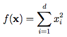
首先遇到連加符號我都會使用numpy功能將連加符號中的元素用成
np.ndarray，再使用np.sum()計算結果。具體思路如下圖：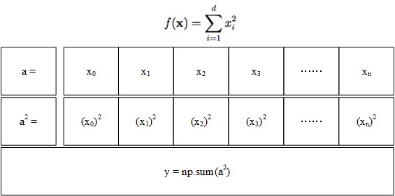
基本上就是將輸入的解組合變成一段np array向量，接著同時對array中所有元素進行平方的計算最後再計算總合即為公式所要求得的結果。這樣子就不需要使用迴圈一個一個計算了，非常方便！照著概念圖我們就可以寫出程式如下：
a = np.array([1, 2, 3]) #[1 2 3]
a2 = a**2 #[1 4 9]
y = np.sum(a2) #14
不過我會習慣將程式再簡化成一行，如果可以的話就用一行解決就好，雖然程式比較難懂但不會落落長，也不會因為多行程式使用許多變數而占用記憶體空間(雖然根本沒占多少XD)
y = np.sum(np.array([1, 2, 3])**2)
接下來就要來建立副程式了，我們預期輸入會是一個list或者np.ndarray，所以就將輸入做上述的計算並輸出就是結果了，接下來來看看程式。
import numpy as np
from typing import Union
# 定義輸入的資料型態用而已，純粹是為了使程式可讀性提高而使用，沒用的話也不會怎樣。
def sphere_function(x: Union[np.ndarray, list]):
return np.sum(np.array(x) ** 2)
if __name__ == '__main__':
y = sphere_function([1.5, 2.4, 3.14])
print(y) #17.8696
在程式中我使用type hints來提示輸入的資料型態要為np.ndarray或者list，不過沒有遵守輸入型態其實也不會噴錯誤，使用這個只是要使程式可讀性高，讓人一目了然輸入的東西是甚麼而已。Union代表輸入型態可以是符合其中元素的任一個型態。
經過程式實作我們將Sphere Function做出來了，無論輸入多長的向量都可以計算結果。這段程式在之後也可以搭配最佳化演算法生成的解來計算適應值，接著來看看下一個方程式。
Ackley Function
接下來這個方程式就有億點點複雜了，不過心法還是一樣，遇到連加符號就使用np.sum()就好了。先來複習一下公式，我把這個公式分成三個部分：
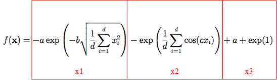
-
x1的部分：先來搞定括號內的程式部分吧，昨天有提到d為輸入的向量長度，把所有結果的平方相加在除以向量長度就是取算術平均的表示法，所以要用np.mean()來計算平均，接著將結果開根號使用np.sqrt()，接著乘上-b就是括號的結果了。接下來括號內容要來經過exp函數計算，使用np.exp()來計算結果，最後再乘上-a就是x1的結果了。
程式寫法如下，記住昨天提到的a與b的值分別為a=20；b=0.2。x1 = -a * np.exp(-b * np.sqrt(np.mean(np.array(x) ** 2))) -
x2的部分：這裡和x1其實差不多，我們先來處理括號內部，括號內部是先將解中的所有元素計算cos(cx)並取平均，昨天也有提到c=2π。接著括號內部再進行exp函數計算接著加上負號即可！程式如下：x2 = -np.exp(np.mean(np.cos(c * np.array(x)))) -
x3的部分：最後就是最簡單的部分了XD直接上程式碼x3 = a + np.exp(1)
最後程式的回傳值就是x1+x2+x3了，完整的程式如下，因為a、b、c可以根據自己的意思更改(不過建議使用預設值就好了)所以我也將a、b、c作為可傳遞的參數並定義預設值，np.pi就是圓周率π：
import numpy as np
from typing import Union
def ackley_function(x: Union[np.ndarray, list],
a: float = 20.0,
b: float = 0.2,
c: float = 2*np.pi):
x1 = -a * np.exp(-b * np.sqrt(np.mean(np.array(x) ** 2)))
x2 = -np.exp(np.mean(np.cos(c * np.array(x))))
x3 = a + np.exp(1)
return x1+x2+x3
if __name__ == '__main__':
y = ackley_function([0, 0, 0])
print(y) #0
Levy Function
最後要來講Levy Function了，作為今天的大魔王，我們要來解析它的弱點了，將裡面的項目拆分後就會發現沒有甚麼好怕的了，拆分後的公式如下，各位也可以按照自己的想法來拆分方程式並撰寫程式：
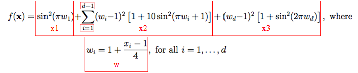
接著一樣來分項看看，首先要注意輸入的每個元素x都會經過計算換成w！所以先建立一個副程式w(x)吧
def w(xi: Union[np.ndarray, list, float]):
return 1 + (np.array(xi)-1)/4
接著來分段看看x1、x2、x3：
-
x1的部分：這裡比較簡單，將第一個元素作sin計算並平方而已，程式如下，要注意公式中元素從1開始標號，但python索引值是從0開始：x1 = np.sin(np.pi * w(x[0]))**2 -
x2的部分：這裡很複雜，因為連加符號裡面有一大坨東西，希望各位不要看到這裡就被勸退了！我們來慢慢處理這項的內容，要特別特別注意連加符號的起始值是1(對應到python的索引值是0)，而終止值是d-1(對應到索引值是倒數第二個元素-2)，這裡需要注意一下可以用切片搜尋來找出符合的向量也就是x[:-1](要包含到倒數第二個元素所以等同於切片到最後一個元素:-1)。
寫成程式會變成：x2 = np.sum((w(x[:-1])-1)**2 * (1+10*np.sin(np.pi*w(x[:-1])+1)**2))若有不懂的話可以耐心把括號慢慢拆開並對照一下數學公式！如果還是無法理解可以底下留言告訴我喔~
-
x3的部分：最後就是這個部份了，只將解的最後一個元素獨立出來運算，結果如下：x3 = (w(x[-1])-1)**2 * (1+np.sin(2*np.pi*w(x[-1]))**2)
最後一樣將所有結果相加(x1+x2+x3)就是方程式的結果了！完整程式碼如下：
import numpy as np
from typing import Union
def levy_function(x: Union[np.ndarray, list]):
def w(xi: Union[np.ndarray, list, float]):
return 1 + (np.array(xi)-1)/4
x1 = np.sin(np.pi * w(x[0]))**2
x2 = np.sum((w(x[:-1])-1)**2 * (1+10*np.sin(np.pi*w(x[:-1])+1)**2))
x3 = (w(x[-1])-1)**2 * (1+np.sin(2*np.pi*w(x[-1]))**2)
return x1+x2+x3
if __name__ == '__main__':
y = levy_function([0, 0, 0])
print(y) #0.806689108233949
y = levy_function([1, 1, 1])
print(y) #1.4997597826618576e-32
將理論最小值的解帶入發現答案是1.4997597826618576e-32，這代表答案約等於1.5*10^-32，但其實10^-32次方是非常小的數字，可以直接視為0了，有可能是運算較複雜所以殘留了一些雜質，但這幾乎不影響結果。
程式寫完後可以將預期的最小值解組合帶入並確認輸出是否正常，或者將其他值輸入看看結果有沒有錯誤，也可以將函數圖畫出來比對看看。
結語
今天帶各位使用程式實作了三種測試函數，原本以為將公式化為程式很簡單的說，但文章寫完後給身邊的人看看發現沒幾個人看得懂我的寫法QQ於是花了一些時間更深入的將方程式拆開處理，最後寫出來的結果以及教學才能讓身邊的人看得懂。希望各位可以理解我的做法以及面對此類問題的思路，若有不懂也歡迎於底下留言。
本來想說應該不會花太多時間的，沒想到整個晚上就被寫文章以及反覆修改這樣消磨掉了，但如果可以使各位更理解程式在幹嘛的話也值得了~
[Day 7]根據方程式來寫出測試函數的程式吧！(2/3)
- Day: 7
- Date: 2024-09-13 00:06:44
- Author: golucky_sir
- Source: https://ithelp.ithome.com.tw/articles/10349865
- Series: https://ithelp.ithome.com.tw/2020-12th-ironman/articles/7610
- Series Title: 調整AI超參數好煩躁？來試試看最佳化演算法吧！
前言
昨天帶各位實作了三個測試函數，不知道有沒有被嚇到，說實在的其實要將數學公式簡潔的化為程式是有一點難度的，所以希望各位還能繼續保持下去！當方程式成功被解析並化為程式寫出來的時候我常常會有一種超強烈的成就感襲來。今天會繼續和各位一起實作三個測試函數，請各位繼續鼓起勇氣直面這些方程式吧！
Cross-in-tray Function
這個函數只接受兩個變數輸入，要特別注意，所以在程式上我會習慣使用assert斷言，確保輸入是有兩個元素的向量assert len(x) == 2, 'x的長度必須為2!'，接著就可以來處理輸入的程式了，因為只有兩個輸入變數需要處理所以程式寫起來不會比昨天還困難，公式拆解如下：
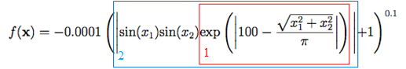
先把紅色框框的第一步寫出來，先處理絕對值內的東西(
np.abs(100 - np.sqrt(x[0]**2 + x[1]**2)/np.pi))再把這個結果進行exp運算(np.exp(np.abs(100 - np.sqrt(x[0]**2 + x[1]**2)/np.pi)))。很輕鬆吧，然後要來處理第二部藍色框框的東東，也就是兩個變數的sin值和第一步的結果相乘並取絕對值，程式碼如下(包括第一步的結果)：
np.abs(np.sin(x[0]) * np.sin(x[1]) * np.exp(np.abs(100 - np.sqrt(x[0]**2 + x[1]**2)/np.pi)))接著就是處理剩下的小東西了，剛剛的結果先+1接著算0.1次方最後乘以-0.0001就是結果了！
-0.0001*(np.abs(np.sin(x[0]) * np.sin(x[1]) * np.exp(np.abs(100 - np.sqrt(x[0]**2 + x[1]**2)/np.pi))) + 1)**0.1
建立起來並不複雜，接下來就要確認一下帶入最佳解能不能得到全局最小值了。完整程式如下：
import numpy as np
from typing import Union
def cross_in_tray_function(x: Union[np.ndarray, list]):
assert len(x) == 2, 'x的長度必須為2!'
return -0.0001*(np.abs(np.sin(x[0]) * np.sin(x[1]) * np.exp(np.abs(100 - np.sqrt(x[0]**2 + x[1]**2)/np.pi))) + 1)**0.1
if __name__ == '__main__':
y = cross_in_tray_function([1.3491, 1.3491])
print(y) #-2.0626118504479614
Bukin Function
接下來要來介紹酷酷函數了，它也是一樣接受兩個輸入，所以程式寫起來相當容易而且公式也沒有很長，我們就一股作氣把它寫出來吧！首先先來複習一下公式長怎樣：
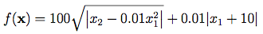
接著就來根據公式寫出程式吧！
100*np.sqrt(np.abs(x[1]-0.01*x[0]**2)) + 0.01*np.abs(x[0]+10)接著完整程式如下：
import numpy as np
from typing import Union
def bukin_function(x: Union[np.ndarray, list]):
assert len(x) == 2, 'x的長度必須為2!'
return 100*np.sqrt(np.abs(x[1]-0.01*x[0]**2)) + 0.01*np.abs(x[0]+10)
if __name__ == '__main__':
y = bukin_function([-10, 1])
print(y) #0.0
很容易吧！若被昨天的Levy Function打擊到信心的朋友們希望這能重振你的信心~接下來就來講今天最後一個函數吧。
Rastrigin Function
這個函數就是昨天提到很像鐘乳石洞窟的函數，它是不限制輸入長度的，所以各位要先看一下公式：
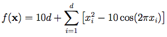
應該不用我多說了吧，先來處理連加符號裡面的東東吧
np.sum(x**2 - 10*np.cos(2*np.pi*x))，然後就是前面的10d了，這單純就是10乘以向量長度len(x)而已，非常簡單。完整程式如下：
import numpy as np
from typing import Union
def rastrigin_function(x: Union[np.ndarray, list]):
x = np.array(x)
return 10*len(x) + np.sum(x**2 - 10*np.cos(2*np.pi*x))
if __name__ == '__main__':
y = rastrigin_function([0, 0, 0, 0, 0])
print(y) #0.0
結語
以上就是今天帶各位介紹的另外三種測試函數，今天的內容比較簡單，希望各位可以快速消化完畢，對這些函數有問題的不妨參考看看我第五天的資料喔！也可以看看昨天的另外三個測試函數的實作。明天會把最後三個測試函數講完，接著就要正式進入最佳化演算法的介紹了，萬歲✌️
寫這種程式實需要非常注意四則運算，以及算數的優先級！程式太長不妨分段、劃分好要處理的步驟等，再一步一步把程式寫出來就好了喔！
[Day 8]根據方程式來寫出測試函數的程式吧！(3/3)
- Day: 8
- Date: 2024-09-14 00:45:04
- Author: golucky_sir
- Source: https://ithelp.ithome.com.tw/articles/10350219
- Series: https://ithelp.ithome.com.tw/2020-12th-ironman/articles/7610
- Series Title: 調整AI超參數好煩躁？來試試看最佳化演算法吧！
前言
今天是介紹測試函數的最後一天，雖然花了三天介紹9個測試函數但我覺得還是遠遠不夠，有趣的測試函數實在太多了。在此先許願若這次有順利完賽且之後幾天還有空閒時間的話，我會再來繼續分享測試函數的一些程式化。方程式轉程式有點寫上癮了，從中獲得了很多成就感哈哈(怪人)。
Bohachevsky Function
這個方程式有三種型態(聽起來很像遊戲的最終Boss例如惡靈古堡3的追跡者之類的XD)，總之，它的公式其實也相當的簡單：

接著就來撰寫程式吧，我們將三條方程式分開來看看。
- f1(x)：這個就是很多項目加加減減而已，只需要一項一項建立並把它加減之後就會得到結果了XD，具體程式就像這樣
x[0]**2 + 2*x[1]**2 - 0.3*np.cos(3*np.pi*x[0]) - 0.4*np.cos(4*np.pi*x[1]) + 0.7。沒什麼難度。 - f2(x)：同上，一樣加加減減而已，直接上程式碼：
x[0]**2 + 2*x[1]**2 - 0.3*np.cos(3*np.pi*x[0])*np.cos(4*np.pi*x[1]) + 0.3，中間有一段兩個變數經過cos函數計算那裡要注意是相乘。 - f3(x)：一樣難度兩顆星，注意cos函數裡面的計算，也是一樣直接上程式
x[0]**2 + 2*x[1]**2 - 0.3*np.cos(3*np.pi*x[0] + 4*np.pi*x[1]) + 0.3。
最後我們把三種型態都寫出來了，接著只要在定義副程式時加上條件控制的參數function_type就好了，要注意這個參數只能為1、2、3其中之一，分別代表f1(x)、f2(x)、f3(x)。其完整程式碼如下：
import numpy as np
from typing import Union
def bohachevsky_function(x: Union[np.ndarray, list],
function_type: int = 1):
assert len(x) == 2, 'x的長度必須為2!'
if function_type==1:
return x[0]**2 + 2*x[1]**2 - 0.3*np.cos(3*np.pi*x[0]) - 0.4*np.cos(4*np.pi*x[1]) + 0.7
elif function_type == 2:
return x[0]**2 + 2*x[1]**2 - 0.3*np.cos(3*np.pi*x[0])*np.cos(4*np.pi*x[1]) + 0.3
elif function_type == 3:
return x[0]**2 + 2*x[1]**2 - 0.3*np.cos(3*np.pi*x[0] + 4*np.pi*x[1]) + 0.3
else:
# 若選擇錯誤則拋出例外提醒使用者function_type的輸入有誤需要注意
raise ValueError('參數function_type必須為1、2、3其中之一!')
if __name__ == '__main__':
y = bohachevsky_function([0, 0], function_type=1)
print(y) # 0.0
y = bohachevsky_function([0, 0], function_type=2)
print(y) # 0.0
y = bohachevsky_function([0, 0], function_type=3)
print(y) # 0.0
Griewank Function
換這個論文常見的測試函數了，其中要注意兩個東東，第一個是連加符號和連乘符號；第二個是在連乘計算中有出現將索引值i直接也加入運算的情況，此時需要再建立一個包含1~d的向量，要注意公式中索引是從1開始，在建立時需要特別特別注意！
我們來一步一步處理這個方程式吧，首先先來複習一下方程式長怎樣：
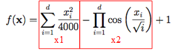
。- 處理索引值i：這部分使用np.arange根據起始值跟結束值建立一個向量就好了，注意終止值是要設定
d+1這樣向量中元素才會是1~d。i = np.arange(1, len(x)+1) - 處理連加符號跟連乘符號：
a. 連加符號使用np.sum()：裡面的計算只是解的所有元素平方摒除以4000而已，其實並不複雜。我們一樣以x1當作這項的名稱。程式長這樣：x1 = np.sum(x**2 / 4000)。
b. 連乘符號使用np.prod()：這邊就要注意也要將索引值也加進來運算了，方程式要計算解中的元素除以索引值的開根號並再進行連乘，最後要記得加負號喔！程式碼為：x2 = -np.prod(np.cos(x/np.sqrt(i))) - 最後就是輸出結果啦，最後要記得+1喔！
return x1 + x2 + 1
Griewank Function的完整程式碼如下：
import numpy as np
from typing import Union
def griewank_function(x: Union[np.ndarray, list]):
x = np.array(x)
i = np.arange(1, len(x)+1)
x1 = np.sum(x**2 / 4000)
x2 = -np.prod(np.cos(x/np.sqrt(i)))
return x1 + x2 + 1
if __name__ == '__main__':
y = griewank_function([1, 2, 3])
print(y) # 1.0170279701835734
y = griewank_function([0, 0, 0])
print(y) # 0.0
Schaffer Function N.2
今天最後一個測試函數就是這個長的很特殊的東西啦，可不要被它的外表嚇住囉，它的公式其實很簡單，就像下面這樣。
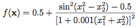
它也是只限兩個變數輸入的函數，那我們就立刻來處理這個函數吧！首先先把分子分母都列出來，最後加上0.5就好了，非常簡單，程式碼就像這樣：
0.5 + (np.sin(x[0]**2-x[1]**2)**2 - 0.5) / (1+0.001*(x[0]**2+x[1]**2))**2。接著加入限制條件(輸入長度必須為2)以及副程式定義就完成囉！
import numpy as np
from typing import Union
def schaffer_function_N2(x: Union[np.ndarray, list]):
assert len(x) == 2, 'x的長度必須為2!'
return 0.5 + (np.sin(x[0]**2-x[1]**2)**2 - 0.5) / (1+0.001*(x[0]**2+x[1]**2))**2
if __name__ == '__main__':
y = schaffer_function_N2([1, 2])
print(y) # 0.02467994027357423
y = schaffer_function_N2([0, 0])
print(y) # 0.0
結語
我們花了三天來介紹一些有趣的測試函數，雖然還有很多很多並未提及到，但本系列主軸並非是測試函數，所以就介紹幾個常用的。接下來就要正式進入最佳化演算法的篇章了，我會開始介紹各種基礎演算法的原理跟程式碼，接著就會進入主軸，模型最佳化的應用，接下來也敬請各位期待啦。
[Day 9]目前Python最佳化演算法的函式庫有啥？
- Day: 9
- Date: 2024-09-15 00:09:41
- Author: golucky_sir
- Source: https://ithelp.ithome.com.tw/articles/10350696
- Series: https://ithelp.ithome.com.tw/2020-12th-ironman/articles/7610
- Series Title: 調整AI超參數好煩躁？來試試看最佳化演算法吧！
前言
這幾天一直在介紹進入最佳化演算法之前的種種，經過這幾天的鋪墊終於要進入主題了，今天要先介紹幾個常用的最佳化演算法的模組，這些模組都已經將功能包裝的很完整了，所以使用起來很方便。這些模組常常被用來進行各種類型的最佳化、線性規劃等等。而且上手難度不高，官方文檔的教學也很完整，所以學會使用這些模組對各位在調整參數或者其他應用時會有很大的幫助喔。
目前主流的模組
目前有許多最佳化的模組可以使用，我自己也用過許多模組，但是目前來說蠻多模組都有一些小瑕疵導致程式寫起來有點難度。目前在不同應用中我用過且認為比較好用的模組有以下幾個：
- NiaPy
- Optuna
- Mealpy
- GuRoBipy
Niapy
Niapy是一個統合各種最佳化演算法的函式庫，它整理了很多受自然啟發的演算法並進行統整。該團隊在各種不同領域中不同的問題進行測試，經過測試後就完成了這個函式庫。NiaPy的意旨在可以簡單快速使用，避免我們需要重新開始時做那些演算法。
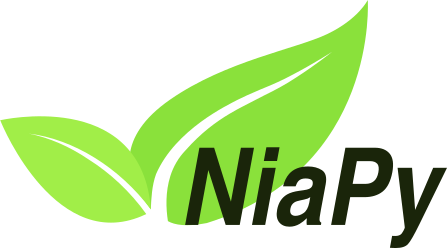
NiaPy Logo(來源為NiaPy官方文檔)
NiaPy在使用上有一些小缺點對於模型最佳化有些問題需要克服，例如在設定上它是一次設定解空間中所有解還有它們的範圍。所以例如今天要找最佳的學習率(0.0001~0.001)、中間隱藏層網路層數(1層~10層)、神經元數量(2、4、8、16、32、64...)。
在設定上會設定解空間為3、範圍為1~10，此時演算法生成的解會是一個長度為3的向量x=[x0, x1, x2]，三個元素範圍都是1~10，此時就要在程式中先自行換算，例如學習率的轉換就是x[0] *= 0.001；網路層數量就不用轉換；神經元數量為2^n次方，所以轉換就是x[2] = 2**x[2]，轉換完成再帶入程式中。
因為設定要帶入的值還需要經過轉換所以在使用上也挺麻煩的，有時候或許有從幾個類別中選擇的變數要處理就要寫一堆if...else，會非常麻煩。這個模組在其他最佳化的問題中確實很好用，但是在模型最佳化的使用上我覺得NiaPy並不是最優秀的選擇，所以未來應用中我就不會對NiaPy有更多的介紹了~
Optuna
Optuna 是一個專門為機器學習中各種應用(包括深度學習、強化學習)等設計的超參數最佳化函式庫，與NiaPy不同的是Optuna是專門用於最佳化機器學習的API，使用這個模組進行開發的話在程式的撰寫上會非常容易，之後幾天我會帶各位進行程式的實作，使用Optuna也可以更有彈性的定義各種要最佳化變數的搜索空間。
Optuna Logo(來源為Optuna官方中文文檔)
Optuna的幾個特點有：
- 輕量級：只需要安裝後就可以直接使用了，上手速度也非常快。
- 可以方便的建立所有各種最佳化因素的設定，並不用像NiaPy一樣還需要換算。
- 使用的演算法能夠高效率的進行最佳化，並有效處理掉對最佳化沒效的組合。
- 對程式碼的修改從範例程式修改少量部分就可以應用到其他任務中。
- 可視化功能做得很好，也可以查詢最佳化紀錄。
小缺點只有最佳化使用的演算法較少(因為使用的演算法挺強大的)，所以要多方比較的話會需要搭配其他模組。
接下來幾天我會帶各位實做這些內容用於AI模型最佳化的應用，Optuna之前也有大佬寫過文章介紹，各位也可以去看看！
MealPy
MealPy是我最近發現的發現的函式庫，用起來也很順手，它也包括非常大量的啟發式演算法，也實現了很多功能，包含視覺化、高級設定(提早結束最佳化、有約束條件的最佳化、多目標最佳化等)，甚至可以使用MealPy的功能代替傳統梯度下降來進行模型的訓練參數更新，非常強大。
這個模組建立的目的為
- 讓各種研究人員、工程師可以接觸到各種啟發是演算法的知識
- 幫助研究人員可以快速接觸這些演算法並實作
- 實現各類經典的啟發式演算法
- 幫助使用者分析演算法的參數、對演算法進行分析(收斂速度、可擴展性和穩定性等)
MealPy在未來我也會向各位進行程式上的實作，MealPy可以實作的東西很多，各位也可以去官方文檔挖寶喔。
結語
今天介紹了幾個不同的函式庫，除了NiaPy與GuRoBipy以外其他兩個函式庫用於模型最佳化都非常方便(GuRoBipy我比較不熟悉就先暫時不介紹了)，也很好上手。往後幾天我會詳細介紹這兩個模組，希望可以快速幫助各位理解這些演算法的應用以及造成的影響！不過在這之前我想先介紹一些經典的最佳化演算法，希望各位可以更理解這些基礎算法的思路以及最佳化的原理。
[Day 10]基於粒子(swarm-based)的啟發式演算法是甚麼？
- Day: 10
- Date: 2024-09-16 00:03:36
- Author: golucky_sir
- Source: https://ithelp.ithome.com.tw/articles/10351664
- Series: https://ithelp.ithome.com.tw/2020-12th-ironman/articles/7610
- Series Title: 調整AI超參數好煩躁？來試試看最佳化演算法吧！
前言
昨天介紹了一些好用的函式庫，今天我想來介紹幾個基礎的啟發式演算法，讓各位先理解這些演算法運作的方式，之後在來使用這些演算法進行實作，實作上使用昨天介紹的這些模組會非常容易實現。
粒子群演算法(Particle Swarm Optimization, PSO)
PSO是最廣為人知的演算法了，因為它是基於粒子中最最最基本的演算法，接下來我們來看看PSO是如何運作的吧。
網路上有很多PSO的原理介紹以及變種演算法，各位也可以搭配服用喔！
概念與原理
PSO的概念是將各種解當成粒子，並觀察這些粒子在問題中的適應值並根據粒子的速度等更新解的位置再去求適應值，透過位置變化跟速度變化而進行問題的最佳化。
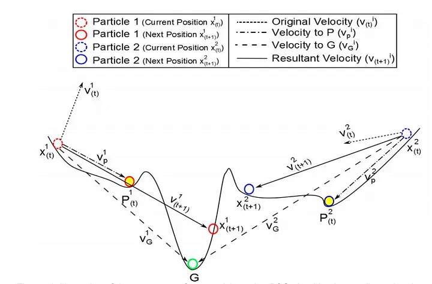
PSO的優化思路圖(圖源)
從上圖可以知道PSO最佳化時的流程有一些步驟，那我會盡量以較少艱深的數學來描述，確保各位可以快速理解這個演算法，PSO可以根據粒子自己的經驗和群體共同的經驗找出最佳解，以下是PSO的步驟。
- 建立很多粒子(因為演算法就叫粒子群了)，每個粒子都是一個在N維空間中的點，每個粒子都可以用一個向量來表示，這個向量就是最佳化問題時要帶入的參數了。
- 計算適應值(fitness value)
- 更新位置，粒子位置更新的方式為原本的位置加上速度分量
x(t+1)=x(t)+v(t+1)。每個粒子的速度也不相同，至於速度是甚麼呢？速度就是用於控制粒子在搜尋空間中移動的方式，也會隨著迭代更新，速度為以下項目組成。
a. 慣性或者動量：它會透過追蹤先前的流動方向來防止粒子急劇改變方向。
b. 認知成分(cognitive component)：它可以解釋粒子返回到自己之前曾找到的最佳位置的趨勢
c. 社會成分(social component)：它確定單一粒子向整個粒子群體的最佳位置移動的傾向，不過也有可能是一定範圍內的局部粒子，要根據演算法設定決定。這樣就可以讓單一粒子集結一起去較佳解附近搜索，看能不能找到最佳解。 - 更新速度，PSO主要最佳化在運算的部分就在這裡，這裡也包含較複雜的公式，因為要考慮上述a、b、c項目的內容而進行速度的更新。
- 重複第3.步跟第4.步直到最佳化完成。
一些參考論文中也有提到PSO的優化步驟，如下圖，圖源來自於這篇論文。
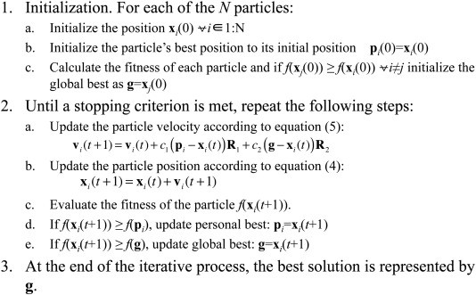
從這張圖中我們可以發現：
- 第1步就是初始化所有粒子(1步驟中的a & b項目)並計算初始化粒子的適應值(1步驟中的c項目)
- 第2步為不斷更新粒子嘗試找到最佳解，其中a&b項目分別對應到速度的更新與粒子的更新；c項目為計算新的適應值；d跟e項目分別為更新粒子個人的歷史最佳值與整個粒子群的歷史最佳值。
- 速度更新公式中c1跟c2為加速度常數，通常c1會設定負數；c2設定小於等於4。用於調節粒子往個人最佳點與粒子往粒子群最佳點移動的發展。但經過研究認為設定c1與c2都為2可以是用大多數應用。
- R1跟R2為隨機產生的，用於讓更新規劃有一些隨機性。
- Pi跟g分別為第i個粒子的目前最佳解、g為目前整個群體最佳解。
- vi(t)就是第i個粒子的當前速度；xi(t)為第i個粒子的當前位置，vi(t+1)跟xi(t+1)就是第i個粒子更新後的新速度、位置。
- 第3步為找到最佳值或者迭代結束。
總評
粒子群的原理大概就這樣，感覺很複雜但實際上只有兩條方程式呢，在實作上很容易。但也因為這樣所以PSO作為基礎的演算法也有一些不足例如單純考量上述因素導致PSO優化基本上容易陷入局部最佳，接下來來看看下一位選手。
人工蜂群演算法(Artificial Bee Colony, ABC)
ABC演算法也是很有名的演算法，當時學者觀察了蜜蜂社會的習性並將之開發成了現在這個演算法，真的是腦洞大開，非常厲害。將蜜蜂作為粒子並根據不同種類的蜜蜂會有不同的行為，這些粒子各司其職進而找出最佳解。
概念
ABC是由一個蜜蜂社會中不同工作的蜜蜂組成，其中分為雇佣蜂(employed bees)、觀察蜂(on-looker bees)和偵查蜂(scout bees)。以下是這些蜜蜂們的分工表：
- 雇佣蜂：它會和特定的候選適應值(有些教學會將之稱為蜜源，比較貼切，在ABC中我也會使用蜜源來稱呼)聯繫，該蜜源如果已經發掘完畢後沒有更好的解之後該雇佣蜂就會變成偵查蜂去尋找更多蜜源。
- 觀察蜂：這些蜜蜂它們會觀察雇佣蜂收集到的資訊並依據這些資訊選擇其中一個蜜源進行後續計算。主要是根據找到的蜜源去選擇要在哪個蜜源附近採蜜，有點指揮官的感覺。選擇蜜源的方式是使用輪盤法(Roulette Wheel Selection)，簡單來說就是蜜源越大，則選擇去那個蜜源採蜜的機率會越高，這也是為探索增加一點隨機性。
- 偵查蜂：就是剛剛提到的雇佣蜂探索的蜜源如果被發掘完畢的話就會轉為偵查蜂，接著開始隨機的區搜索新的蜜源。
ABC原理
ABC在最佳化時也有幾個步驟要進行，以下為演算法的流程。
- 初始化蜜蜂：這步驟會初始化雇佣蜂和觀察蜂的數量(它們數量一樣多)、以及先隨機標出幾個蜜源位置(也就是隨機生成初始化的解)、以及要在蜜源附近採蜜幾次(超過採蜜次數沒有找到滿意的結果就當作該蜜源以發掘完畢)。
- 雇佣蜂工作階段：在這個階段也有一些小事情需要處理。
a. 首先要注意一下蜜源的好壞會將問題的目標函數f(x)再進行進一步的計算，公式如下，其中F(xi)為第i個雇佣蜂負責的蜜源f(xi)，其蜜源的豐富程度。
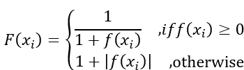
b. 進行採蜜，就是更新出新的蜜源位置並計算新蜜源的值跟豐富程度。如果新的蜜源位置更好那會予以保存，如果是最佳蜜源則紀錄為當前最佳解；如果是不好的蜜源則整體迭代以及採蜜次數+1。更新方式會隨機挑選蜜源附近的一個位置來作為新的解並帶入目標函數計算出適應值並作後續計算。
c. 根據剛剛的那些計算得到結果，並「報告」給觀察蜂。 - 觀察蜂工作階段：這裡觀察蜂的工作就是每個觀察蜂各挑出一個蜜源讓蜜蜂在這附近採蜜，決策中也有一些流程要走。
a. 根據剛剛得到的蜜源豐富程度F(x)，為所有的蜜源*(F(x1),F(x2)...,F(xn))*建立一個機率表，根據機率表選擇一個蜜源。
b. 和雇傭蜂一樣，觀察蜂也會根據被選擇的蜜源去搜尋新的可能解，也就是進行採蜜。 - 決定是否有採集完畢的蜜源，如果有的話就負責該蜜源的僱傭蜂轉為偵查蜂接著找出新蜜源以代替舊的蜜源。
- 紀錄最佳解，並重複2~5步驟值到迭代結束或者達成停止條件。
總評
ABC的流程大致上來說就是如此，因為會隨機偵查蜜源，所以有時候可以避免掉局部最佳的位置，進而提升找到全局最佳解的可能性。實務應用中ABC的複雜度也不算高，我之前一些研究中使用ABC的效果也很不錯，所以實作上可以考慮使用看看ABC。
ABC也發展出很多變體，針對尋找新蜜源中提出了各種不同策略，使ABC可以更貼合不同種類的應用。總之ABC我認為是一個不錯的演算法，所以我才特別介紹他XD。
不然我本來一天預估只會講兩個演算法哈哈(偷偷抱怨)，因為統整資料並寫成文章出來還是花了挺多時間，再加上記憶中也只是大概知道流程，所以還得確認一下印象是否正確orz。
袋獾演算法(Tasmanian Devil Optimization, TDO)
袋獾也被稱作塔斯馬尼亞惡魔(Tasmanian Devil)，外表挺可愛的，但行為就不太可愛了。
受到袋獾行為啟發的演算法就稱為袋獾演算法，他是2022年提出來的最佳化演算法(原始論文，論文中還有放上袋獾的圖片XD)，主要透過模擬袋獾獵食行為來進行最佳化，將適應值當成食物的演算法還有灰狼演算法(Gray Wolf Optimization, GWO)等，也是很有趣的概念。
概念與原理
這個演算法的概念是模擬袋獾獵食的一個演算法，袋獾有時會狩獵而有時是吃其他食肉動物狩獵過後的腐肉。作者認為袋獾在棲息地搜尋食物時的行為跟從搜尋空間中找出最佳解的行為類似，TDO主要就是會搜尋很多地區並找出最佳區域接著再去狩獵。
TDO原理
袋獾進食會有狩獵跟直接吃腐肉，狩獵跟吃腐肉被當成不同進食方式而有不同算法，而TDO中選擇的方式是根據隨機數判斷的，兩者機率都為50%，換句話說就是投擲硬幣決定要吃腐肉或是狩獵。
- 吃腐肉策略：吃腐肉會根據三個步驟來當作進食過程，每隻袋獾的進食會獨立進行。
- 每個袋獾會根據其他袋獾的位置當作有腐肉的位置，接著會隨機選擇一個袋獾當作目標腐肉位置。就是假設其他袋獾那邊有腐肉，接著當前的袋獾就會去找他一起分享腐肉的概念。
- 選好腐肉位置後，如果該位置的適應值(fitness value)更好，袋獾就會向腐肉移動；如果更差的話就會往反方向遠離不好的腐肉位置，移動的方式會有一點隨機的成分在。
- 在移動後的新位置後如果fitness value比原本的好則留在這個位置，否則會維持在原本的舊位置上(不移動)。有時候可能靠近或者遠離腐肉的路上移動，難免會踩到雷區，若可能會踩雷那就不移動了，等下次的策略再決定行為。
- 狩獵策略：袋獾在攻擊時會有兩個階段，首先是要選擇獵物並攻擊該獵物，其次是接近獵物後追趕、狩獵並進食。具體為以下步驟所示。
- 選擇獵物：選擇獵物類似吃腐肉的方式，也是隨機選擇其他袋獾位置為獵物位置(流程類似於吃腐肉策略的三步驟)，應該是假設其他袋獾附近都有獵物可以合作狩獵，畢竟袋獾狩獵袋獾聽起來挺獵奇的，但這只是演算法而已所以不用想太多~
- 狩獵獵物：與吃腐肉不同的點在於多了狩獵獵物並進食的步驟，在預定發動攻擊的地點追逐獵物的概念為在該空間中進行局部搜索，因為這個部分讓TDO有了能夠利用它來收斂到更優秀的候選位置。要模擬追逐過程袋獾會有一些行為產生。
- 定義跟隨獵物的範圍，並基於該獵物的範圍來計算袋獾的新位置，如果新位置的適應值更好則留在新位置，否則留在原本位置。
整個TDO的流程大致上就是幾個部分組成，這邊可以配合論文中的流程圖來解釋，我將論文中的流程圖標示上了綠色框框跟步驟，各位可以搭配以下說明理解，方程式的部分我就先省略了，大致上就是將這些行為模擬寫成公式而已。
- 初始化演算法(迭代次數T、袋獾數量N等)、袋獾位置、計算袋獾位置的適應值。
- 開始進食，隨機選擇腐肉進食(2-1步驟)或是狩獵進食(2-2步驟)。
- 讓每隻袋獾(i)都進行一次進食動作，重複第2步直到所有袋獾都移動進食完畢，所有袋獾都進食完畢後(i=N)紀錄當前最佳解。
- 迭代次數加1次(t+1)，若還沒完成迭代則重複2~3步驟(設定i=1代表從第1隻袋獾再度開始覓食)，整個TDO迭代完成後(t=T)就輸出整個歷史紀錄中的最佳解。
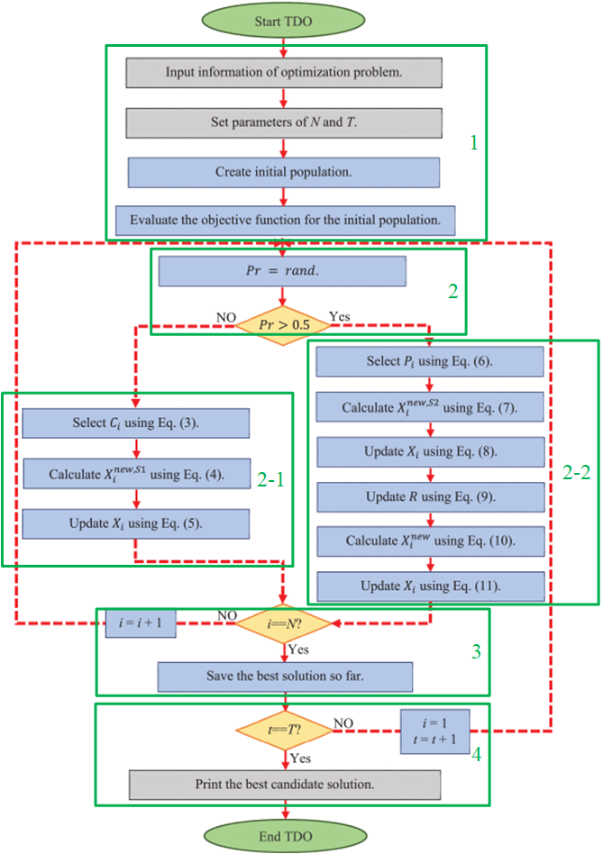
圖. TDO演算法流程圖。
總評
TDO是一個相當新穎的演算法，概念也很有趣，透過兩種進食機制來進行最佳化，不過目前應用還不像PSO那些那麼多，所以演算法的優缺點並沒有一個完整的調查與實驗。未來根據不同實驗結果可能也會發展出TDO的各種變體版本，無論如何都期許這個演算法會有一些其他完整應用，各位也可以實際應用看看並確認效果喔(之後會有實作的文章，敬請期待)~
結語
今天介紹了3個最佳化演算法，包括最常見的PSO、曾經拯救過我研究的ABC、以及2022年才提出的新穎的演算法TDO，這些演算法之後會在MealPy中出現，所以不用擔心理解了原理但卻實作不出來。明天會介紹一些基於演化的啟發式演算法，最有名的就是基因演算法了，作為教科書式的演算法應該大多數人都有聽過，除基因演算法以外我也會介紹一些新穎的演算法給各位。
[Day 11]基於進化(evolutionary-based)的啟發式演算法是甚麼？
- Day: 11
- Date: 2024-09-17 00:22:15
- Author: golucky_sir
- Source: https://ithelp.ithome.com.tw/articles/10352543
- Series: https://ithelp.ithome.com.tw/2020-12th-ironman/articles/7610
- Series Title: 調整AI超參數好煩躁？來試試看最佳化演算法吧！
前言
昨天介紹了一些基於粒子的演算法，他們都是將生物群體比喻為粒子並根據不同的行為得到啟發而開發出這些演算法。今天要介紹的是基於進化策略的演算法，隨著地球這幾千萬年的變化，地球上的生物透過演化進化成了最適合當代條件下生存的物種。而基於進化的演算法就是基於這些原理進行最佳化，找出適應值(fitness)最高的解(物種)。
基因演算法(Genetic Algorithms, GA)
與粒子群最佳化演算法(PSO)一樣基礎、一樣廣為人知的演算法，GA和PSO有著完全不同的機制，透過**突變(Mutation)**這樣的機制來盡量避免陷入局部最佳解，為演算結果新增了一些變數，GA就類似於生物繁衍時的基因遺傳等概念，接下來就來看看GA的原理吧。
概念
GA的概念很簡單，大致上只有四個步驟，分別是評估(Evaluation)、選擇(Selection)、交配(Crossover)、突變，大致上GA就是重複這四個步驟而逐漸將適合的結果保留，不適合的結果淘汰掉，相當於達爾文的天擇說。接下來我將大致簡述基因演算法的這幾個步驟，基本上GA演算法網路上非常多的教學，問GPT應該也能得到大致正確的結果。[參考文章1]、[參考文章2]
- 初始化：和大多數演算法一樣，GA演算法也要進行初始化並設定一些數值以及變數。初始化所需的東東有染色體，和昨天的粒子不同，昨天以粒子來形容各種要帶入問題的解，而今天GA是以染色體當作要帶入問題的解。每條染色體都是一個相同長度的向量，內容就是要帶入問題的那些因素。
- 評估：首先初始化後會隨機產生初始的染色體們，這些染色體和昨天介紹的那些粒子一樣，因為不知道問題的分布所以初始生成都是完全隨機的。生成之後的染色體們會根據自身的資訊計算出適應值(fitness value)。
- 選擇：為了演化出更加優良的「後代」，GA會從最一開始的染色體們中尋找優秀的染色體，選擇的方法會採用輪盤法，簡單來說就是每個染色體的適應值高低會成為被選擇的機率高低。除此之外也有其他選擇法被使用，例如菁英挑選法，使用這個方法就是能保證最優秀的幾個結果會被保留下來。
- 交配：交配會根據機率來決定，如果隨機變數的值小於交配閥值則會進行交配，交配方法會依照隨機數決定斷點，接著根據此斷點將兩個染色體都切成兩部分並重新組合成新的染色體。
- 突變：突變也會根據機率發生，若隨機數低於設定的突變率閥值的話則會突變，突變方式很簡單，隨機挑選染色體中的幾個內容中數值的位元，並將隨機位元的0與1進行對調，這些數值資料中變為二進制之後隨機突變就會有一種與原來資料似是而非的感覺。這步驟完成後基本上染色體就會變得跟初始的染色體不同的一群新的染色體了。
- 重複第2.步到第5.步，直到迭代結束，迭代結束後就輸出最佳的解。
總評
GA作為啟發式演算法入門必學的一個演算法，它的優點就是容易上手、速度快，但有時也不可避免的容易陷入局部最佳解，依靠微小的突變機率又剛好突變到適合的位置更佳的不容易TT，另外因為適應值會重複計算，所以像在AI模型最佳化時重新計算類似結果就會造成運算資源不必要的浪費。不過以GA為基礎的演算法也有許多被研發出來，對於不同的應用也算是有不同的使用方式。
珊瑚礁演算法(Coral Reefs Optimization, CRO)
珊瑚礁演算法是2013年被提出的演算法，作者受到珊瑚蟲繁衍生存過程中的啟發而創造的演算法。
概念與原理
珊瑚礁演算法就是根據珊瑚蟲繁衍的方式去設計的，各位有興趣可以去看看珊瑚蟲繁衍的壯闊景象。這個演算法基本上也是幾個步驟循環而找到比較好的解。
- 初始化：老套的初始化，CRO的初始化會假設一個珊瑚礁，這個珊瑚礁會有很多空間給珊瑚蟲生存，空間數量為N，那各位可能會好奇珊瑚蟲的數量呢？其實初始化還要設定空間中有珊瑚蟲居住的比例p，所以珊瑚蟲數量是p×N。和GA等演算法類似，CRO是以珊瑚蟲來當作要代入問題的解。
- 珊瑚蟲的有性繁殖：這部分分成兩個繁殖方式，有性繁殖與無性繁殖。有性繁殖又分為珊瑚礁外部的有性生殖與珊瑚礁內部的有性生殖，接下來我會來分別介紹這兩種生殖方式。首先會將珊瑚蟲分為外部與內部的珊瑚蟲。
- 珊瑚礁外部的有性生殖：這部分會先將內部珊瑚蟲分成兩個群體，公珊瑚蟲與母珊瑚蟲。接著公母珊瑚蟲會類似GA那樣進行交配產生新的子代。
- 珊瑚礁內部的有性生殖：這部分會將外部的珊瑚蟲直接隨機產生一些子代。
- 更替珊瑚蟲：這步驟會讓所有新的珊瑚蟲去找珊瑚礁中還沒被佔領的空間，如果該空間沒珊瑚蟲則該子代就可以直接佔領；若該空間有珊瑚蟲則需要比較適應值，適應值高的珊瑚蟲可以入住該空間，適應值低的則會被趕出來(有點心酸)。子代的珊瑚蟲會嘗試幾次佔領，若經過特定次數還沒佔領成功就會死亡。能夠嘗試多次佔領是因為如果只能一次定生死的話，那有可能第二高的珊瑚蟲就直接被第一高的珊瑚蟲幹掉了，白白損失一個優秀「蟲」才。
- 珊瑚蟲的無性繁殖：當珊瑚礁所有空間都被佔領時，則根據特定比例選出一些高適應值的珊瑚蟲，並進行無性繁殖的方式複製出子代來並進行珊瑚礁的占據，也就是進行第3步驟。
- 淘汰弱小的珊瑚蟲：此步驟比較殘忍，會根據特定比例選出一些低適應值的珊瑚蟲並進行「人道毀滅」，藉此將珊瑚礁騰出一些空間來供下一次迭代使用。完成後算一次迭代，迭代次數+1。
- 重複步驟2.到步驟5.值到迭代結束，並輸出整個群體的最佳解以及適應值。
總評
因為內部有性生殖的部分和GA一樣，透過交配產生新子代會導致最佳化方向是比較隨機的，不像基於粒子的演算法會有一個優化方向，這會使CRO的最佳化不容易收斂(GA也一樣)，這類型演算法太依賴初代的能力了。且CRO目前是直接讓適應值高的珊瑚蟲取代適應值低的珊瑚蟲，這會比較不利於種群的多樣性，非常容易陷入局部最佳解。
不過目前有很多研究用於針對這些問題提出改良方法，例如借鑑PSO的優化方向，將更替珊瑚蟲加入一些機制，目前由CRO延伸出來的演算法能力有比較好，也可以跳出局部最佳解的位置去尋找其他解。
參考資料
結語
今天分享了幾個基於進化的演算法，明天會繼續分享其他概念的最佳化演算法，基於進化的演算法目前來說比較少見，因為進化過程中大方向都是類似的，並不像不同物種有不同行為那樣比較好受到啟發。但目前進化為基礎的演算法像GA等都有不少的變種演算法，或多或少都做了一些微調並更加契合研究的主題根所需的功能。
[Day 12]基於人類行為(human_based)的啟發式演算法是甚麼？
- Day: 12
- Date: 2024-09-18 00:09:16
- Author: golucky_sir
- Source: https://ithelp.ithome.com.tw/articles/10353227
- Series: https://ithelp.ithome.com.tw/2020-12th-ironman/articles/7610
- Series Title: 調整AI超參數好煩躁？來試試看最佳化演算法吧！
前言
前兩天分別介紹了以粒子為基礎跟以進化為基礎的幾個演算法，今天要介紹的演算法比較困難也比較新穎，同時也很冷門，是以人類行為為基礎的演算法。目前我在網路上搜尋有許多演算法都沒有經過太嚴謹、全面的研究。且也極少中文的解說，那就讓我來開疆闢土吧！希望我的不專業解釋也能讓各位更理解演算法，我會盡可能將演算法的核心思路表達出來的。
Teamwork Optimization Algorithm (TOA)
這個最佳化演算法直接翻譯的話為團隊合作最佳化演算法，目前我還尚未找到正式的中文翻譯名稱，網路上目前似乎也沒什麼中文網站等有在分享這個演算法的，所以今天的內容大多來自於原始論文。
TOA概念與原理
這個演算法的主要思路為透過模擬一個團隊的合作行為，以實現這個團隊的合作目標。TOA透過這些行為的模擬，以數學建模建立出此演算法，用於解決最佳化問題。
原理上，TOA模擬了一個團隊合作，所以角色分為了主管跟團隊成員。
- 主管(supervisor)：基本上所有團隊成員中適應值(fitness value)最高的人就會當上主管，挺現實的，主管會負責領導和指導團隊。
- 團隊成員(members)：基本上除了主管以外其他人就都是團隊成員了。
在這個團隊中總共會有三個會彼此影響的形式存在，TOA基本上也根據這三個影響作為演算法的流程來進行最佳化：
其中TOA中每個成員所擁有的資訊就是要代入問題的解，在PSO中以粒子位置形容要代入問題的解，在TOA中以團隊成員擁有的資訊形容要代入問題的解。
- 初始化TOA：一樣會隨機產生所有團隊成員的資訊並根據
- 主管對團隊成員的影響：每個團隊成員都依照主管的指導和指示努力提升自己的適應值。此階段主管會將自身的資訊(代入問題的解跟代入後得到的適應值)分享出來，給其他團隊成員參考並指導團隊成員創造目標。
- 資訊共享階段，好的團員對差的團員的影響：所有的團隊成員都會想辦法透過利用比自己表現更好的其他團隊成員的經驗來提升自身的適應值。這階段每個團隊成員會根據其他更優秀團員的資訊來提高自身的適應值，他們會參考其他優秀成員的資訊來更新自身的資訊。
- 團隊成員的個人活動：每個團隊成員基於自身的活動，會「努力」的為整個團隊的適應值(成果)做出更多貢獻。雖說是努力但以數學建模來說還是以隨機數來更新每個團隊成員的資訊(怎麼有點現實阿QQ做研究沒方向都瞎闖一番QQ)，若是努力過後的「結晶(適應值)」有比較好則更新個人資訊，若沒有比較好則不更新個人資訊。
- 針對每個團隊成員進行更新，重複執行步驟2.到步驟4.，若所有團隊成員都更新完畢就儲存該次迭代中群體的最佳解，也就是儲存主管的資訊。
- 若迭代尚未完成則返回到第1步驟結尾重新選出一個主管來，並重複執行步驟2.到步驟5.完成後迭代次數+1，若迭代完成則輸出整個團隊找到的歷史最佳解。
各位也可以搭配下面的流程圖服用，也是一樣我幫各位標好上述每個步驟中對應的框框了~公式的部分各位可以去看看原始論文，這邊就先大致提及演算法的流程而已。
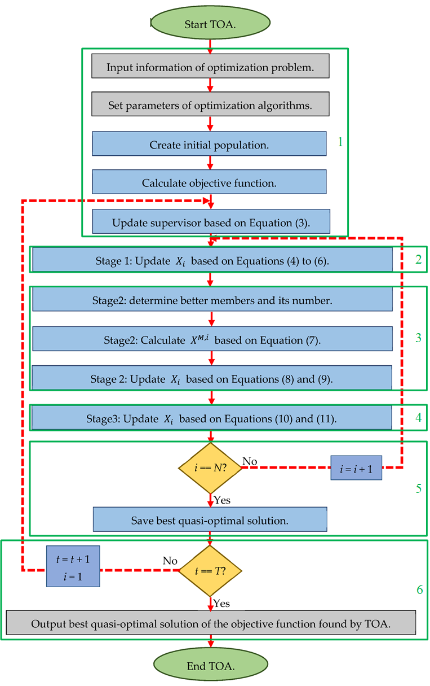
圖. TOA演算流程圖。
TOA總評
根據論文所述，TOA目前在23個不同的測試函數上測試過它的性能了，除此之外也使用另外8種最佳化演算法比較。研究成果的分析表示TOA演算法與其他演算法在最佳化上有著不錯的優越性。
不過在其他領域上的應用則必須要再更加深入的做探討，希望未來能有更多這種演算法的應用，我個人認為用團隊合作是一個很好的想法。但總有感覺是抹滅了人性的高效率團隊XD，不過這只是演算法而已，不知道為甚麼都會過度聯想到現實生活TT尤其是這個演算法照流程好像更能體會到現實社畜的辛酸。
Coronavirus Herd Immunity Optimizer (CHIO)
CHIO是2020年提出來的一個演算法，根據原始論文介紹，CHIO是受到人類社會與病毒對抗，接著人們都獲得抗體，進而群體免疫的概念。群體免疫是指當大多數人口具有免疫力時的一個狀態，這個情況下病毒也不容易傳播，因為人類的抗體已經足以殺死病毒。
CHIO概念與原理
CHIO靈感來自於COVID-19，先前各位應該都有所體驗，COVID-19感染的傳播速度會與感染者與其他人直接接觸的方式有很大的相關。為了保護未被感染的人們，醫學界的專家等會建議感染者「隔離」，其他人需要保持社交距離1.5公尺等等...
CHIO模仿了群體免疫策略以及社交距離的概念，通常傳染病的建模會分成三種類型的人：易感染者(susceptible)、感染者(infected)和免疫者(immuned)。
接下來我來根據論文提供的流程圖來解釋一下CHIO的演算過程吧，請看下圖。
-
Step 1.初始化CHIO演算法：這部分應該不需要多說了吧，和其他演算法一樣都需要初始化演算法的設定等。CHIO除了基本的會設定最大迭代次數、解的維度以外還會設定初始感染的病例數、人口規模。
-
Step 2.生成初始的群體：此步驟會產生免疫的群體，基本上也是隨機產生和人口規模一樣多的個案，在這演算法終究是以人來當作要帶入問題的解。
-
Step 3.冠狀病毒群免疫進化(carnivorous herd immunity evolution)：這步驟就是CHIO主要用於最佳化演算的內容，如圖片中黃色的框框一樣。
- 三個菱形格子是根據比例使用三個規則(菱形格子旁邊的矩形格子)來定義受到社交距離的影響。菱形格子中的r是隨機產生的亂數；BRr是基本繁殖率，用於透過在個體之間傳播病毒的比率，透過使用者設定。
- 接著新的解等會受到一些社會因素的影響進而更新。下列三個就是因應不同規則所套用的更新方式，若三個條件都不符合的話則不會產生更新。
- C(x(t))：這個是會受到一些社會影響之間的差異來實現的更新的。
- N(x(t))：這個則是會受到社交距離的影響，這種社交距離是透過當前人與取自易感染各例的人之間的差異來實現更新的。
- R(x(t))：這個則是透過目前的人與從免疫病例的人之間的差異來進行更新的。
-
Step 4.更新新的解：此步驟會**更新免疫群體中每位個案的免疫率(適應值)**並會計算替換為新的情況，如果適應值更好的則個案的年齡會+1。如果這些更新後新的人它的免疫率比整個群體的平均免疫率更好的話，則人群中那個人的免疫率會根據先前計算的社交距離而產生變化。
這意味著CHIO開始擁有免疫力更好的人群，對病毒的免疫能力更強。換句話說就是這群人的解所產生的適應值都會變得更好了，不斷進步就會完全抵抗病毒(找到最佳化的解)。
-
Step 5.產生死亡病例：簡單來說就是如果經過一定次數的迭代之後適應值沒有變更好的話，該個案就會死亡，藉此來捨棄掉那些適應值不高的解，除此之外重頭開始產生新的解也能幫助演算法的多樣性。
-
Step 6.判斷是否要結束演算法：接著CHIO就是重複步驟3.到步驟5.值到迭代次數達到設定的上限則視為最佳化完畢，這時候就會輸出整個群體歷史的最佳解啦~
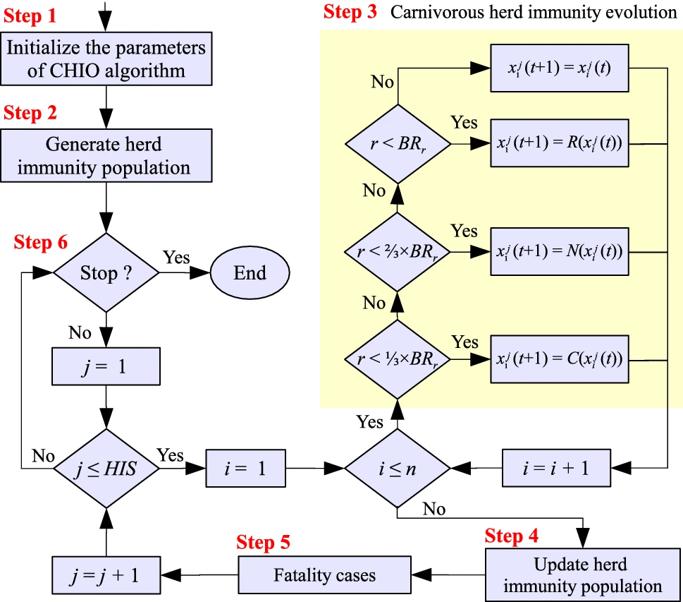
圖. CHIO演算法流程。
CHIO總評
根據論文的結果CHIO使用了不同的方式去測試演算法的敏感性，敏感性通常是用來判斷演算法參數變化所造成的影響，越敏感則越容易出現更多變化。另外也使用了IEEE CEC 2011的一些實際工程類型最佳化問題來測試，目前根據他們的研究成果表示CHIO是一個蠻強大的演算法，之後有機會我也會帶各位來實作這個演算法！
結語
今天的演算法介紹難度比較高，因為參考資料少，所以我花了蠻多時間在慢慢閱讀論文的方法，處理了很久終於端出這盤菜了。希望各位能夠咀嚼得津津有味。
這兩個演算法都是比較新穎的演算法，但也因為這樣所以資訊目前不夠多，之後也會帶各位實作看看這些演算法，希望我們可以從這些演算法中挖出不錯的寶藏。
明天預計會講最後的演算法分類，講完後就差不多要進入程式，實作的部分了，好期待阿。
[Day 13]基於生物學(biology-based)的啟發式演算法是甚麼？
- Day: 13
- Date: 2024-09-19 00:08:47
- Author: golucky_sir
- Source: https://ithelp.ithome.com.tw/articles/10353999
- Series: https://ithelp.ithome.com.tw/2020-12th-ironman/articles/7610
- Series Title: 調整AI超參數好煩躁？來試試看最佳化演算法吧！
前言
昨天介紹了基於人類行為的最佳化演算法，這些演算法基本上都是模擬人類社會中有的群體行為，無論是對抗疫情(CHIO)或是團隊合作(TOA)都一樣。今天要來介紹的是基於生物學的幾個演算法，和基於粒子的演算法不同，基於粒子的演算法著重探討「個體」的行為；今天介紹的基於生物學的演算法更著重於整個生物群集和環境、生態系等的不同交互，不過廣義來說它們可以視為相同分類的啟發式演算法。
無論如何，這些演算法都能夠對之後我們實作的模型最佳化有著很好的幫助！
生物地理學演算法(Biogeography-Based Optimization, BBO)
BBO是一個討論自然生物地理學及其數學的演算法，在2008年提出，根據原始論文介紹研究者的心態是「我們可以向大自然學習」。BBO和其他演算法例如PSO、GA等有共同的特徵，所以BBO也適用於PSO、GA等相同類型的問題。
BBO概念與原理
BBO描述了生物物種如何進行遷移、新的物種是如何演化出現的、以及物種為何滅絕、如何滅絕，看起來就是更廣義的GA+PSO等演算法加起來。
在生物地理學中，適合生物居住的區域可以說是有很高的棲息地適宜度指標(Habitat Suitability Index, HSI)另外可以用來評估該地區是否可居住的指標為適宜性指標變數(Suitability Index Variable, SIV)。
- 和HSI相關的有植物、物種、地形多樣性，以及降雨量、溫度、濕度等因素，這些因素也會影響SIV的變化。
下圖是論文中提出的生物地理學的數學建模，從遷入率(immigration)和遷出率(emigration)反映該地區的物種數量，一般來說HSI高代表物種可能會越多，當該地區物種飽和後，物種就會傾向遷出去尋找新的資源肥沃的地區；反之亦然，HSI低代表物種數量少，所以來自其他地方流浪的物種就會傾向於入住該地區。
但如果該地區的HSI一直很低代表那裏根本不適合居住，所以久而久之那邊的物種就有可能會滅絕。
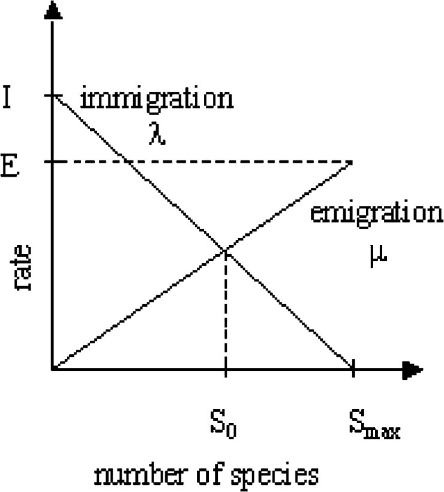
圖. 單一棲息地的物種模型關係，圖源為原始論文。
觀念上來說，BBO中將要帶入問題的整個解比喻為一個地區，解中的不同因素、特徵比喻為該地區的物種，而適應值(fitness value)比作為HSI。
高HSI的地區會比較穩定，而低HSI的地區會受到高HSI的地區分享的物種，從而提升該地區的品質。
對照來說就是：高適應值的解會比較穩定，解與適應值不容易有大幅度的變化，而低適應值的解會受到高適應值的解分享的特徵，從而提升解的品質。
理解了概念之後就要來介紹BBO的演算法原理了，圍繞著遷入率、遷出率、HSI等概念，接下來讓我來介紹BBO的流程吧。
- 初始化BBO的演算法跟參數：老樣子，BBO要初始化的東西有最大的物種數量、最大遷入率、最大遷出率、最大變異率、以及一個菁英主義參數(elitism parameter)。
- 隨機初始化各地區：隨機給所有地區一些物種(隨機初始化解的值)，並計算出所有地區的HSI(適應值)。其中最高HSI的地區會被作為菁英地區，論文中也使用這種方式來保留最佳的地區，避免這個最佳地區受到遷移的破壞。
- 計算地區資訊：接著對於所有地區的HSI來計算該地區的物種數量、遷入率跟遷出率。如下圖，其中S1是比較差的地區、S2是比較好的地區，它們之間的遷入率λ跟遷出率μ就如圖所示。
- 地區物種遷移：根據遷入率跟遷出率的機率，隨機的更新每個非菁英地區的物種(解的特徵)，並計算出每個地區新的HSI。
- 棲地隨機突變：對每個地區隨機更新物種數量，然後再隨機對每個非菁英地區進行變異，概念是模擬災難性的事件，通常一場災難等原因會導致該地區的物種、HSI等發生重大改變，變異完成後並重新計算HSI，這邊也會重新選擇新的菁英地區。並讓演算法的迭代次數+1。
- 是否迭代完成：循環步驟3.到步驟5.直到迭代結束，當迭代結束後就輸出BBO的最佳解。
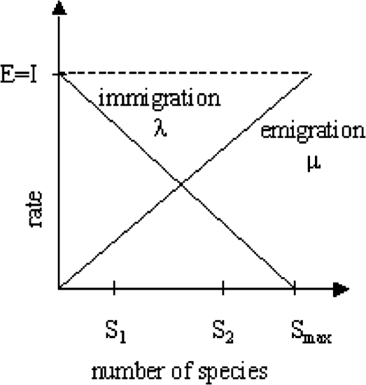
圖. 地區物種數量與遷移率的關係圖，圖源為原始論文。
BBO總評
BBO是一個很有趣的演算法，透過模擬很多地區的生態來尋求解，並考慮了許多因素來模擬自然環境中的演化。為此我也查閱了一些生物地理的相關文獻，發現作者確實有很好的從大自然中汲取靈感，並將之與個人的專業研究進行融合。
BBO研究據作者所述並沒有特別驗證過，來獲得普遍優秀於其他方法的結論，所以未來也可以嘗試以此為方向去比較看看其他演算法再來討論看看BBO有沒有可以改良的部分。
雜草演算法(Invasive Weed Optimization, IWO))
雜草演算法應該也是有一段時間的演算法了，它是一種受到野外雜草互相侵略、殖民、生長的啟發而成的演算法。根據一些研究顯示雜草再殖民、侵略時的生長穩定性較高、適應性佳、又具備隨機性，所以這個以雜草為基準的演算法也能表現出上述特性。
IWO概念與原理
IWO來自於一群野草的繁殖，這些野草可以透過有性生殖與無性生殖來繁殖，不過IWO著重探討有性生殖的開化結果，產生種子，生出種子後就會透過各種形式向外傳播，並找到其他適合生存的空間，不斷循環。通常IWO會歷經6個步驟來進行最佳化，以下是IWO的演算步驟。
IWO是將不同雜草族群當作要代入問題的解，而適應值就是適應值，似乎沒有特別的比喻，若有錯誤再麻煩糾正了><
- 初始化IWO：這步驟會確定族群和群集數量、大小(群集是會包含很多族群的概念，例如草原群集中會有斑馬族群、獅子族群等)，以及最大迭代次數，代入解的維度，一次生成種子數的最大值與最小值，區間步長的起始值跟最終值。
- 初始化雜草們：這步驟會隨機生成所有雜草族群的解，並計算所有雜草族群的適應值。
- 雜草開始繁殖：群集中的各種雜草族群能夠散波的種子數量是根據該族群的適應值決定的，具體如下圖所示，至於為何向下取整的原因舉例來說，基本上雜草不會生出2.3個種子，所以向下取整變成生成2個種子。
- 計算空間分布：IWO的種子會被隨機播種在求解空間中，這些種子會成長成新的雜草。至於如何播撒根據現實環境，通常一顆果實中的種子會在距離該族群不會太遠的地方播種對吧，如果是完全隨機的話代表在夏威夷的種子，播種於夏威夷跟播種於非洲埃及的機率會是相同的，這樣太不合理了。
所以基本上會根據初始會設定的區間步長的起始值跟最終值來決定距離原本族群特定步長距離被播種種子的機率高低。因此，高適應值且良好的雜草會生出比較多種子，也會有比較大的機會能夠播種在高適應值附近的空間中，也有可能會遠離較佳區域去遠方闖蕩；反之，低適應值劣勢的雜草會生成較少種子，藉此漸漸淘汰劣勢族群。 - 競爭生存機會：若各位有小花圃或者院子等，透過觀察這些地方我們可以知道，如果一種植物沒有產生種子，將會漸漸滅亡；而如果植物產生的種子很多，它很快就會遍佈整個花圃。
同理，IWO中的雜草們會透過互相競爭求得生存的機會，且為了維持平衡也要確保族群的大小在合理的範圍內。在種子播種之後他們會成長為雜草，也就是多了很多新的解，此時這些解會計算適應值，並將群集中所有雜草的適應值進行排列，並直接淘汰刪除掉後面劣勢的雜草，使整個雜草數量不會大於最大的雜草數量上限。完成後算一次迭代，將迭代次數+1。 - 是否迭代完成：重複步驟3.到步驟5.直到迭代結束，當迭代結束後就輸出IWO的族群歷史最佳解。
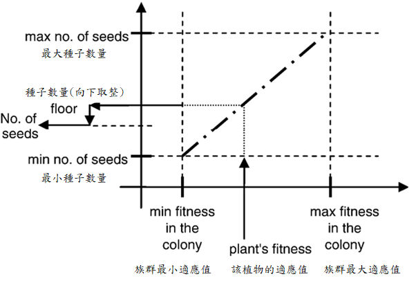
圖. 一群雜草群的種子生產關係，圖源於其論文。
IWO總評
IWO也是一個不錯的演算法，與其它演算法不同的是一些演算法基本上族群數量會一直都是固定值，而IWO會透過播種來讓解的數量暫時變多，不過考量到平衡會再將劣勢的雜草淘汰。藉此可以更大量的保留最佳解，跟珊瑚礁演算法有點類似。這種做法還讓原本劣勢的雜草有繁殖後代的機會，說不定那些雜草的後代會一鳴驚人呢！所以這個機制基本上也是會鼓勵雜草們不要陷於局部最佳位置。
總得來說IWO是一個相當穩定、且適應性佳又同時具備隨機性的演算法。
結語
這四天根據不同的基礎介紹了許多演算法，基本上還有許多雜七雜八的演算法，過於特殊導致在分類上比較少同性質的演算法，或是其他原因導致該演算法的特殊性，所以礙於篇幅就沒辦法在原理介紹中登場了，不過很多冷門的演算法都有包含在MealPy中，各位若有興趣在之後帶各位入門MealPy之後各位可以在嘗試使用更多不同的演算法來測試看看自己所應用到的問題喔！
我們可以向大自然學習 --Dan Simon(BBO論文作者)
[Day 14]無痛入門！淺談Optuna最佳化
- Day: 14
- Date: 2024-09-20 00:21:28
- Author: golucky_sir
- Source: https://ithelp.ithome.com.tw/articles/10354688
- Series: https://ithelp.ithome.com.tw/2020-12th-ironman/articles/7610
- Series Title: 調整AI超參數好煩躁？來試試看最佳化演算法吧！
前言
今天終於要來進入程式實作的部分了，今天要介紹的函式庫在前幾天也有介紹過，Optuna是一個相當有名的套件，今天就來看看它可以幹嘛吧。
基本範例
Optuna是一個專門用於深度學習模型或者機器學習模型超參數調整的套件，其背後的演算法基本上與啟發式演算法又有一些差別，這個套件使用的演算法我會在之後額外介紹。
那接下來先來看看官網的範例程式吧，我有加上一些註解方便各位更理解程式！
import optuna
# 定義目標函數(或稱適應函數fitness function)的計算方式
def objective(trial):
# 新增帶入解中的元素，本例只有一個變數，所以只定義一個變數x。
x = trial.suggest_float('x', -10, 10)
# 回傳適應值(fitness value)
return (x - 2) ** 2
# 新增一個最佳化的「試驗」變數
study = optuna.create_study()
# 讓該試驗進行最佳化，目標函數為objective，試驗次數n_trials為100次
study.optimize(objective, n_trials=100)
# 將試驗中的最佳解print出來。
print(study.best_params) # E.g. {'x': 2.002108042}
以上是官方給出的基本範例，接下來我會來詳細說明這段程式碼在幹嘛，在這之前首先要安裝Optuna(pip install optuna)。
-
定義目標函數：通常會寫
def objective(trial):來代表定義的目標函數，trial要記得加上去，演算法要進行試驗時會使用到trail這個變數，也就是演算法後端會使用到，所以必須得加上去。 -
新增要帶入目標函數的變數：本範例要求計算(x-2)^2的最小值，基本上這就是當x=2時會有最小值0。接著我們有了問題，接下來要考慮帶入問題的因素(之前提到的5W1H中的What)，以及這些因素的範圍(5W1H中的Where)。
- 因素-資料型態：因為只有一個變數，所以我們可以定義為x，其中x為浮點數(
trial.suggest_float)，定義浮點數之後， - 因素-名稱：接著要定義該變數的名稱
'x'，這步驟是為了在之後可以確認這個變數代表的意思，要注意變數名稱不能重複！！否則程式會噴錯誤。 - 因素-範圍：最後就是定義變數的範圍了，以本例子來說是-10~10的浮點數。
這行程式的用法就是：
trial.suggest_float(變數名稱, 範圍最小值, 範圍最大值) - 因素-資料型態：因為只有一個變數，所以我們可以定義為x，其中x為浮點數(
-
定義回傳適應值：此步驟就return一個浮點數數值就好了，本例是回傳(x-2)^2的值。
-
定義一個試驗：
study = optuna.create_study()就是新增一個試驗，study就是這次最佳化試驗的變數，所有資料都會儲存在此，後續要應用最佳化也是使用此變數的方法去實現。 -
執行最佳化：此步驟會讓試驗
study進行最佳化，程式碼為study.optimize(要試驗的目標副程式, n_trials=試驗次數)。試驗的目標副程式不用像以往調用方法那樣加上括號objective()以及輸入參數，只需要將副程式名稱當作optimize方法的參數輸入就好了。 -
將最佳解print出來：此部分就沒什麼好說的了，直接把最佳解給print出來XD
Optuna開發注意事項
接下來各位可能還想再更近一步去理解Optuna的其他事項，這邊我幫各位整理出一個開發流程，我接下來會跟著流程一步一步改掉範例程式並變成我們實際上會用到的程式。這個流程也可以幫助各位快速入門使用Optuna時需要注意的事項以及確認有沒有遺漏程式！
基本上根據上個段落的流程已經差不多了，不過我們要再加入一些細節！以下為使用Optuna的開發流程。
這次任務我想來使用Optuna來尋找Schaffer Function N.2的最佳解，關於這個測試函數可以看看第五天第9個介紹的測試函數。複習一下函數的資訊：
Schaffer Function N.2輸入的未知數數量限制2個；解空間元素值建議範圍為-100~100；最佳解為解空間元素皆為0；此時最佳適應值為0。
-
定義目標函數：
def objective(trial):這部分不用變動，就是建立我們需要最佳化問題的副程式，所有計算都要在此副程式中完成。例如分類模型最佳化，就要在這個副程式中完成訓練並評估準確率等指標並作為適應值回傳。 -
新增要帶入目標函數的變數：這個函數接受兩個變數輸入x1跟x2，所以接下來要來定義這些東東了。
2-1. 定義x1：要注意x1的變數名稱以及上下限，程式碼為：x1 = trial.suggest_float('x1', -100, 100)。
2-2. 定義x2：基本上條件相同，但要注意名稱不同，千萬別複製貼上卻忘了改變數名稱！，程式碼為x2 = trial.suggest_float('x2', -100, 100)。
2-3. 進行處理：有時候變數可能要先進行處理再帶入問題，這部分不一定需要進行。但在這例子我們要將兩個變數帶入Schaffer Function N.2中，所以可以將這兩個變數包成一個list後續再輸入至測試函數中。就像x = [x1, x2]。各位可能很好奇變數只能使用浮點數嗎？當然沒有Optuna支援多種輸入類型，整數、類別等，以下將介紹比較常用的變數類型，最常用的有三種，因為這三種足以處理幾乎所有問題了。
- 整數變數：通常使用
trial.suggest_int('整數變數名稱', 最小值, 最大值, step=步進值或公差值)，step變數是選用的參數，預設值為1。他可以控制整數變數的公差(只能設定為整數)，例如設定trial.suggest_int(f'int', 1, 5, step=2)那試驗時會產生的數字就是從1,3,5中選一個。trial.suggest_int(f'int', 1, 5)那試驗時會產生的數字就是從1,2,3,4,5中選一個。 - 浮點數變數：之前介紹過了，使用
trial.suggest_float('浮點數變數名稱', 最小值, 最大值, step=步進值或公差值)。功能和整數基本上相同，只是資料型態的差別而已，這個方法的step可以設定浮點數。 - 類別變數：通常我們可能在選用優化器或者特定功能時會有需要進行選擇的需求，但這些東西並非一個數字。所以此時我們可以用
trial.suggest_categorical("類別名稱", [類別1, 類別2, 類別3])，此時試驗時就會從這三個類別中選一個出來帶入問題，類別的list中的資料型態沒有限制，可以是任何型態，只要帶入沒有問題就好。
- 整數變數：通常使用
-
新增其他功能：通常在回傳結果前可以的話通常會將此次試驗的資料與結果等都進行儲存，儲存方式有很多，可以寫入csv檔案、使用txt檔案儲存資料、將結果進行plt繪圖並儲存圖片等。原則上為了更好分析實驗結果這步驟就會根據需求來儲存該次試驗的資料。
另外也可以根據使用者的需求去新增更多不同功能，就是比較彈性的部分~ -
定義回傳適應值：此步驟只需要回傳Schaffer Function N.2的適應值就好了，不過有時候遇到比較難計算的情況就一步一步慢慢計算出結果最後再return吧。我們可以用第8天介紹的程式碼來當作回傳，這段程式碼需要輸入一個
list或者np.ndarray，此時剛剛第2-3步驟的處理就能派上用場了。
4-1. 處理計算的部分：這邊就直接把副程式拿來用了，將測試函數的副程式獨立定義。def schaffer_function_N2(x: Union[np.ndarray, list]): assert len(x) == 2, 'x的長度必須為2!' return 0.5 + (np.sin(x[0]**2-x[1]**2)**2 - 0.5) / (1+0.001*(x[0]**2+x[1]**2))**24-2. 定義回傳值：在
objective方法中我們要定義適應值回傳的功能，程式為return schaffer_function_N2(x)。 -
定義一個試驗：新增一個試驗
study = optuna.create_study()，這邊可以注意一下，定義問題的目標也是在這段程式碼中設定，沒有設定就會自動預設為最小化目標。- 如果今天是要最大化是應值的話可以這樣寫：
study = optuna.create_study(direction='maximize')。 - 如果今天是要最小化是應值的話可以這樣寫：
study = optuna.create_study(direction='minimize')。
- 如果今天是要最大化是應值的話可以這樣寫：
-
執行最佳化：這部分不太需要更改，不過各位可以嘗試將試驗次數
n_trials增加看看~要注意之後如果是深度學習模型最佳化等應用的話，通常試驗一次就會執行一次objective副程式，所以要注意試驗次數上與時間消耗的問題喔！這邊我給它試驗1000次：study.optimize(objective, n_trials=1000)。 -
將最佳解print出來：我們可以使用
print(study.best_value)來將歷史最佳適應值給列印出來；用print(study.best_params)將歷史最佳解print出來。結果就如下圖：
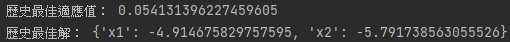
-
查看程式執行過程：在Optuna演算時各位會看到一些訊息，那是每次試驗時的適應值、帶入問題的解、出現目前最佳解的試驗編號、該最佳解的適應值。具體如下，因為圖片較長，完整放圖會使圖片字體變太小，所以分成左右兩張：
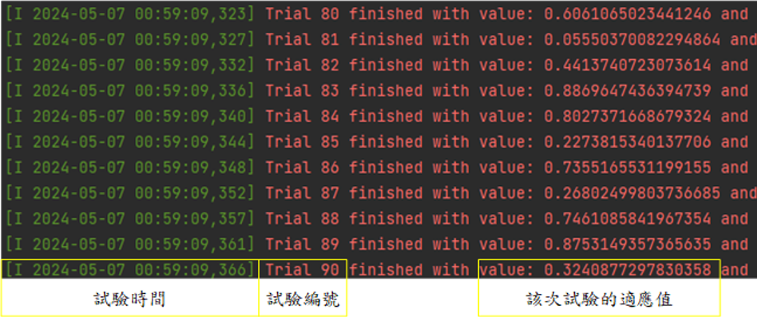
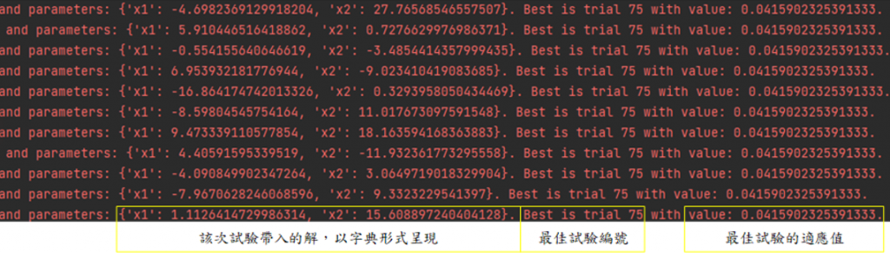
通常這步驟也會包含後續處理分析的部分，可以根據執行結果規劃第二次最佳化，並且再根據需求新增一些功能。
結語
今天介紹了Optuna跟介紹了基本建立程式的方式與流程，以及使用Optuna的一些注意事項，明天會更詳細的介紹Optuna的一些API(雖然今天講得差不多了XD)，並帶各位展示幾個範例，讓各位後續實驗測試的程式可以更加完整，掌握了這些功能後相信各位在最佳化應用中可以更加完整的撰寫程式。
附錄：求Schaffer Function N.2最佳解的完整程式
import optuna
import numpy as np
from typing import Union
def schaffer_function_N2(x: Union[np.ndarray, list]):
assert len(x) == 2, 'x的長度必須為2!'
return 0.5 + (np.sin(x[0]**2-x[1]**2)**2 - 0.5) / (1+0.001*(x[0]**2+x[1]**2))**2
def objective(trial):
x1 = trial.suggest_float('x1', -100, 100)
x2 = trial.suggest_float('x2', -100, 100)
x = [x1, x2]
return schaffer_function_N2(x)
study = optuna.create_study(direction='minimize')
study.optimize(objective, n_trials=1000)
print('歷史最佳適應值：',study.best_value)
print('歷史最佳解：', study.best_params)
[Day 15]由淺入深！介紹更多Optuna的API(1/2)
- Day: 15
- Date: 2024-09-21 00:03:04
- Author: golucky_sir
- Source: https://ithelp.ithome.com.tw/articles/10355312
- Series: https://ithelp.ithome.com.tw/2020-12th-ironman/articles/7610
- Series Title: 調整AI超參數好煩躁？來試試看最佳化演算法吧！
前言
真糟糕，昨天把基礎的Optuna相關功能都介紹完了，昨天本來想真的「淺談」這個套件的，介紹完那天就可以比較輕鬆XD。今天本來想說把基礎功能補齊，然後介紹視覺化部分就好了，不過既然有時間那多介紹一些也無妨。
昨天寫文章整個寫上頭了之後就把大部分我最常用的東西都介紹完了TT 好吧，那今天就要更用力的展現我的畢生所學了，基本上Optuna的功能還很多，不過基本上通常像昨天介紹的程式就可以應付一部分的實務應用了。
今天就來聊聊更多Optuna的功能吧！各位有興趣可以用昨天介紹的程式範例並加上今天的內容實作看看，或多或少可以增加程式執行的效率喔。
Optuna其他進階功能
今天要來介紹更多進階功能，一起來看看Optuna還可以幹嘛吧，若對基本功能還不熟悉的歡迎看看我昨天的文章喔！
初始化試驗的更多方式
Optuna初始化時會有一個固定寫法：study = optuna.create_study()，昨天有介紹到如果要設定最佳化目標時可以使用direction參數來定義演算法藥最大化適應值或是最小化適應值。除此之外也有一些其他功能可以設定，這些功能可以讓試驗變得更完整，也比較容易分析結果。
-
study_name參數：用於針對試驗取名稱，可以更加清楚這個試驗是在幹嘛的。 -
sampler參數：用於定義演算法 從搜索空間採樣(sample) 的方式，這個參數預設是使用TPESampler，Tree-structured Parzen Estimator (TPE)這個演算法我們之後會來討論到原理，官方文檔也有詳細介紹這些採樣方式。其他採樣方式還有，每個採樣器適合的任務以及一些限制條件需要看官方文檔的說明比較好：- optuna.samplers.GridSampler(seed=42)：較常用的
- optuna.samplers.RandomSampler(seed=42)：較常用的
- optuna.samplers.TPESampler(seed=42)：較常用的，妹特別設定則預設使用這個
- optuna.samplers.CmaEsSampler(seed=42)
- optuna.samplers.GPSampler(seed=42)
- optuna.samplers.PartialFixedSampler(seed=42)
- optuna.samplers.NSGAIISampler(seed=42)
- optuna.samplers.NSGAIIISampler(seed=42)
- optuna.samplers.QMCSampler(seed=42)
- optuna.samplers.BruteForceSampler(seed=42)
所有採樣方式都有
seed參數可以定義亂數種子，使亂數結果會固定住。sampler與study_name參數使用的用法如下：study = optuna.create_study(study_name='試驗名稱', sampler=optuna.samplers.TPESampler(seed=10))
objective副程式傳遞更多參數
昨天有提到建立objective的寫法是def objective(trial):，但是實際應用上可能會需要進行更多複雜的應用，導致此副程式需要定義其他參數用於傳遞。現在就來介紹一下如果要傳遞其他參數的話要如何改寫程式吧。
我們來寫個程式，讓變數的最大值跟最小值變得可以在試驗時自己定義，接著定義2組試驗分別測試不同的帶入解範圍再看看效果，我們使用昨天提到的程式去修改。
-
定義副程式：這邊一樣的定義副程式，但是可以新增其他傳遞參數。
def objective(trial, high, low):。 -
定義副程式內容：這個部份我們會重新定義要帶入解的定義域範圍，也就是x1跟x2的範圍，其他都不用更動。
x1 = trial.suggest_float('x1', low, high) x2 = trial.suggest_float('x2', low, high) -
定義2組試驗：昨天有提到，在定義Optuna的試驗時我們只需要將副程式的名稱作為參數傳入即可，但是這樣的壞處就是無法傳遞自定義的參數。為了解決這個問題我們要使用匿名函數
lambda來解決，這樣就可以在傳遞參數(objective)的時候直接再定義一個匿名函數並直接執行objective副程式並傳遞自訂參數進去，具體用法如下：study1 = optuna.create_study(direction='minimize') study1.optimize(lambda trial: objective(trial, 10, -10), n_trials=100) study2 = optuna.create_study(direction='minimize') study2.optimize(lambda trial: objective(trial, 100, -100), n_trials=100)
這個部分的完整程式如下：
import optuna
import numpy as np
from typing import Union
def schaffer_function_N2(x: Union[np.ndarray, list]):
assert len(x) == 2, 'x的長度必須為2!'
return 0.5 + (np.sin(x[0]**2-x[1]**2)**2 - 0.5) / (1+0.001*(x[0]**2+x[1]**2))**2
def objective(trial, high, low):
x1 = trial.suggest_float('x1', low, high)
x2 = trial.suggest_float('x2', low, high)
x = [x1, x2]
return schaffer_function_N2(x)
study1 = optuna.create_study(direction='minimize')
study1.optimize(lambda trial: objective(trial, 10, -10), n_trials=100)
study2 = optuna.create_study(direction='minimize')
study2.optimize(lambda trial: objective(trial, 100, -100), n_trials=100)
print('第一組試驗歷史最佳適應值：', study1.best_value)
print('第一組試驗歷史最佳解：', study1.best_params)
print('第二組試驗歷史最佳適應值：', study2.best_value)
print('第二組試驗歷史最佳解：', study2.best_params)
定義多目標最佳化
有時候要考慮深度學習模型的效能，以及模型計算的時間。一般來說，效能越好模型參數量就會多，理所當然地計算時間就會拉長，基本上這兩個目標是會有衝突的，所以在這之中要找到一個平衡的因素就很重要。
通常要定義多目標問題會在return的部分直接定義所有回傳結果，這次我們來定義回傳x1和x2的schaffer_function_N2結果(要最小化)，當這個最小化時x1和x2都會趨近於0；所以我們可以再定義另一組回傳為x1+x2(要最大化)，當這個最大化時x1和x2都會趨近於上限，如此一來這兩個目標就會出現衝突，作為訓練模型效能與時間衝突的模擬，實際問題之後有機會再來實作看看~
-
設定objective副程式適應值回傳：只需要把要回傳的目標一一回傳就好了，程式撰寫為
return schaffer_function_N2(x), x1+x2。 -
設定兩個不同目標的最佳化方向：剛剛有說到一個目標要最小化(
schaffer_function_N2(x1,x2))，另一個目標要最大化x1+x2，在初始化定義試驗時就要先設定兩個目標的最佳化方向了。程式為：study = optuna.create_study(directions=['minimize', 'maximize'])，注意原本的direction參數後面要加s變成directions參數，後面傳遞進去的參數為一個list分別代表不同目標的最佳化目標。 -
print出歷史較佳解：這部分有些需要更改，因為現在有多個目標且彼此衝突，所以程式會將比較優秀的幾個結果，有兩個目標的最佳值跟一些平衡兩個目標的較佳值都會print出來，跟等等介紹的帕雷托前沿會有一點關係，這些解就是在帕雷托前沿上，這步驟的程式碼如下：
for i in range(len(study.best_trials)): print(f'試驗歷史較佳解-{i}：', study.best_trials[i].params) print(f'試驗歷史較佳適應值-{i}：', study.best_trials[i].values) print('---我是分隔線---') -
繪製帕雷托前沿(Pareto Front)結果圖：帕雷托效率是一個經濟學中的概念，它是指分配中的一個理想狀態，當無法同時滿足多個目標時，能夠採取的最佳解。
關於視覺化會在下個段落提到，但是下個段落所使用的範例都是單目標最佳化，所以在此先提到多目標可以使用的結果圖，程式碼如下。import matplotlib.pyplot as plt optuna.visualization.matplotlib.plot_pareto_front(study) plt.show()結果圖片如下圖，可以看到兩個不同目標個別的最佳值，以及求多目標最佳的一些前沿值。
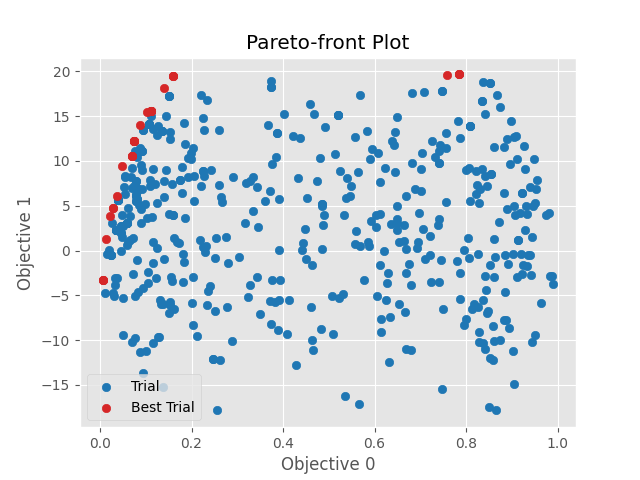
視覺化試驗過程
如果可以把試驗過程進行視覺化的話那就可以很方便地觀察到試驗的過程並加以分析，Optuna基本上也幫各位把這部分給做好了，Optuna有將Matplotlib做為後端，使各位可以進一步用Matplotlib來對圖片再進行修飾(但圖片原則上已經很完整了)，也可以用Matplotlib的功能儲存圖片等，相當方便。
以下是一些視覺化過程的範例，各位若想完整了解也可以去看看官方文檔關於這部分的說明。
-
繪製參數關係等高線圖：可以使用
optuna.visualization.matplotlib.plot_contour(study)達成，這個圖片可以更清楚的看到不同參數之間的搭配是如何影響適應值的，我們來繪製上面應用中x1和x2的關係對應吧。import matplotlib.pyplot as plt optuna.visualization.matplotlib.plot_contour(study) plt.show() # 要記得把圖片顯示出來喔！結果如下，如果有更多試驗變數的話，會以矩陣的方式來繪製出兩兩特徵之間的關係：
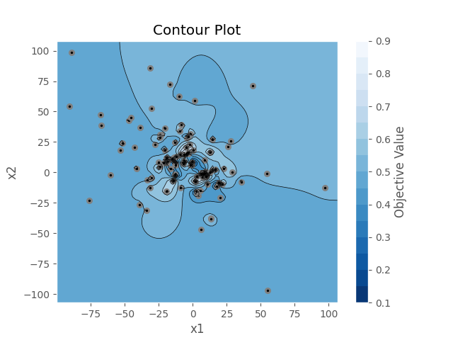
-
繪製目標經驗分布函數(EDF)圖：這可以繪製不同試驗中不同的EDF結果，我們可以拿上面實作的兩組試驗來當作範例，具體用法如下，要注意定義試驗的名稱，試驗名稱會成為圖表的線條label：
import matplotlib.pyplot as plt optuna.visualization.matplotlib.plot_edf([study1, study2]) plt.show()結果如下：
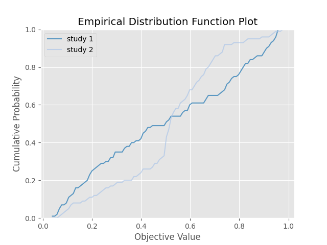
-
繪製高維度參數關係圖：如果輸入變數很多的話可以使用這個來觀察每個參數的對照關係圖，多個參數搭配之間會造成的適應值。程式如下：
import matplotlib.pyplot as plt optuna.visualization.matplotlib.plot_parallel_coordinate(study1) plt.tight_layout() # 把所有內容塞進圖表，否則有些內容會超出圖表。 plt.show()結果如下，只有兩個參數的話會比較建議使用參數關係等高線圖，如果有更多變數的話就可以使用這個方式繪製圖片。
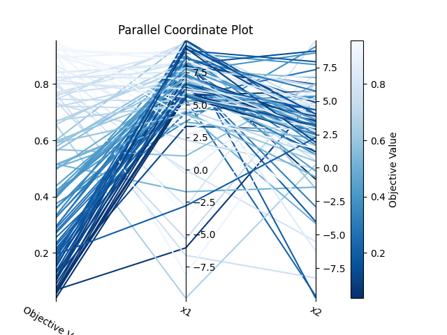
-
繪製試驗的最佳化過程：這個就很重要了！他可以將每次試驗的結果都繪製出來，並使用一條曲線來視覺化最佳化的過程，這樣就可以不用看著互動視窗回傳的結果，然後被數字淹沒了。程式如下：
import matplotlib.pyplot as plt optuna.visualization.matplotlib.plot_optimization_history(study1) plt.tight_layout() # 把所有內容塞進圖表，否則有些內容會超出圖表。 plt.show()結果如下，可以看到最佳化的收斂過程(紅線)，以及每次試驗的值(藍點)：
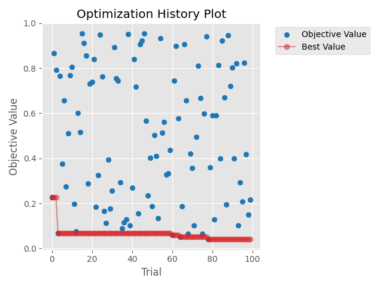
另外也有另一種快速入門的方式可以繪製，程式如下：fig = optuna.visualization.plot_optimization_history(study1) fig.show()執行時會開啟一個視窗，並可以提供使用者使用右上角的工具列對繪圖結果進行編輯例如放大縮小，或者特定區域放大還有儲存成圖片等功能，儲存後的圖片如下。
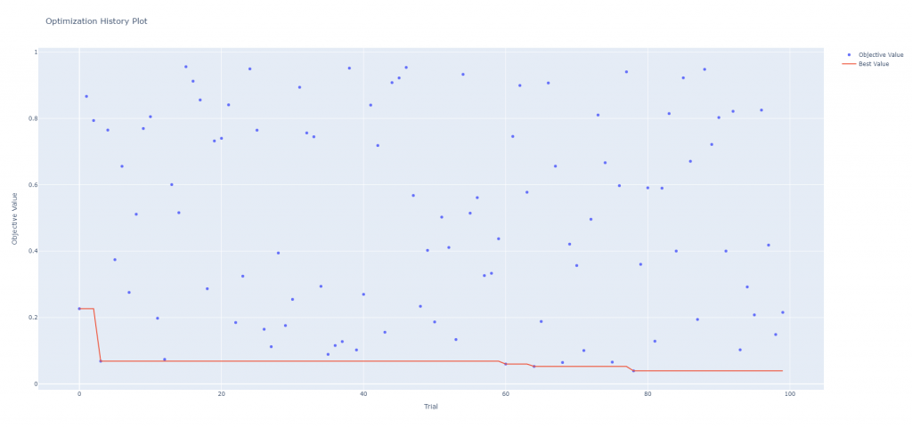
下圖為程式開啟視窗後會出現於右上角的工具列以及儲存圖片的功能鈕。
-
繪製超參數因素重要性：隨著試驗次數增加，可以更準確的計算出試驗中不同因素對最佳值搜索的重要性，若該因素重要性低就可以在之後實驗捨棄掉該因素，讓最佳化可以更簡便。程式碼如下：
import matplotlib.pyplot as plt optuna.visualization.matplotlib.plot_param_importances(study1) plt.show()結果如下，因為使用測試函數所以基本上每個參數都是必不可缺的，不過在之後深度學習模型最佳化就可以用這種方式刪除掉不重要的因素。
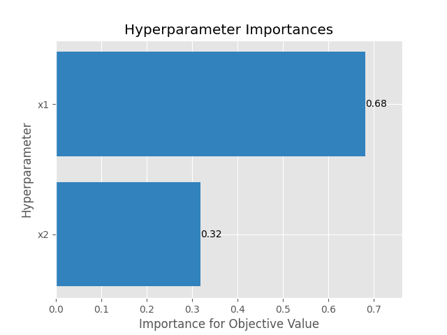
結語
今天花了蠻多時間介紹Optuna的其他功能，基本上官方的說明文件裡面還有許多功能可以開發，不過我覺得在目前階段這些功能應該就足夠了。明天會來帶各位用這兩天學習到的內容來進行更多的演練，使各位可以更加清楚這個套件的功能，與程式開發時的一些技巧與步驟等。
附錄：完整程式(多目標最佳化)
import matplotlib.pyplot as plt
import optuna
import numpy as np
from typing import Union
def schaffer_function_N2(x: Union[np.ndarray, list]):
assert len(x) == 2, 'x的長度必須為2!'
return 0.5 + (np.sin(x[0]**2-x[1]**2)**2 - 0.5) / (1+0.001*(x[0]**2+x[1]**2))**2
def objective(trial, high, low):
x1 = trial.suggest_float('x1', low, high)
x2 = trial.suggest_float('x2', low, high)
x = [x1, x2]
return schaffer_function_N2(x), x1+x2
study = optuna.create_study(directions=['minimize', 'maximize'])
study.optimize(lambda trial: objective(trial, 10, -10), n_trials=500)
# print出歷史較佳解
for i in range(len(study.best_trials)):
print(f'試驗歷史較佳解-{i}：', study.best_trials[i].params)
print(f'試驗歷史較佳適應值-{i}：', study.best_trials[i].values)
print('---我是分隔線---')
# 繪製帕雷托前沿(Pareto Front)結果圖
optuna.visualization.matplotlib.plot_pareto_front(study)
plt.show()
附錄：完整程式(繪圖部分)
import matplotlib.pyplot as plt
import optuna
import numpy as np
from typing import Union
def schaffer_function_N2(x: Union[np.ndarray, list]):
assert len(x) == 2, 'x的長度必須為2!'
return 0.5 + (np.sin(x[0]**2-x[1]**2)**2 - 0.5) / (1+0.001*(x[0]**2+x[1]**2))**2
def objective(trial, high, low):
x1 = trial.suggest_float('x1', low, high)
x2 = trial.suggest_float('x2', low, high)
x = [x1, x2]
return schaffer_function_N2(x)
sampler = optuna.samplers.TPESampler(seed=10)
study1 = optuna.create_study(study_name='study 1', direction='minimize', sampler=sampler)
study1.optimize(lambda trial: objective(trial, 10, -10), n_trials=100)
study2 = optuna.create_study(study_name='study 2', direction='minimize', sampler=sampler)
study2.optimize(lambda trial: objective(trial, 100, -100), n_trials=100)
print('第一組試驗歷史最佳適應值：', study1.best_value)
print('第一組試驗歷史最佳解：', study1.best_params)
print('第二組試驗歷史最佳適應值：', study2.best_value)
print('第二組試驗歷史最佳解：', study2.best_params)
# 繪製參數關係等高線圖
optuna.visualization.matplotlib.plot_contour(study1)
plt.show()
# 繪製目標經驗分布函數(EDF)圖
optuna.visualization.matplotlib.plot_edf([study1, study2])
plt.show()
# 繪製高維度參數關係圖
optuna.visualization.matplotlib.plot_parallel_coordinate(study1)
plt.show()
# 繪製試驗的最佳化過程
optuna.visualization.matplotlib.plot_optimization_history(study1)
plt.tight_layout()
plt.show()
# 繪製試驗的最佳化過程(另一種開啟視窗並編輯&儲存的方式)
fig = optuna.visualization.plot_optimization_history(study1)
fig.show()
# 繪製超參數因素重要性
optuna.visualization.matplotlib.plot_param_importances(study1)
plt.show()
[Day 16]由淺入深！介紹更多Optuna的API (2/2)
- Day: 16
- Date: 2024-09-22 00:01:56
- Author: golucky_sir
- Source: https://ithelp.ithome.com.tw/articles/10355939
- Series: https://ithelp.ithome.com.tw/2020-12th-ironman/articles/7610
- Series Title: 調整AI超參數好煩躁？來試試看最佳化演算法吧！
前言
昨天和前天分別介紹了Optuna的基礎功能、程式開發步驟以及一些進階的功能，例如多目標最佳化、最佳化試驗視覺化。在進入實作之前我想再最後分享一下幾個技巧，這些技巧對之後專案開發一定有很大的幫助，事不宜遲趕快來看看吧。
查看該次試驗的資訊
在最佳化試驗全部結束後使用print(study.trials)可以看到一大串東西，他主要是一個list，裡面有很多FrozenTrial物件，這個物件會儲存每一次試驗的資訊，這裡面會包含所有試驗的屬性以及它們的值，接下來我們來看看這些資料裡面包含甚麼吧。
另外也可以使用print(study.best_trials)來輸出所有試驗中成果最佳的試驗，該次試驗會包含的資料也如下列所示。
- number：該次試驗的編號。
- state：試驗的狀態，通常有成功回傳的話狀態就會是「完成」，像這樣
TrialState.COMPLETE。 - values：該次試驗的適應值(fitness value)，或者是說目標函數的值。
- datetime_start：試驗開始的時間，時間是2024年5月7號21時14分39秒，這段程式是我在幾個月前的學習的時候跑的。
- datetime_complete：試驗結束的時間。
- params：該次試驗帶入目標函數的所有參數以及它們的值。
- user_attrs：使用者可以在目標函數計算中自定義屬性，用於記錄一些特殊資訊用的，這個等等會提到。
- system_attrs：系統的屬性，目前我使用的版本似乎沒辦法隨便更改內容。
- intermediate_values：這個我目前還不確定實際功能是幹嘛的，再麻煩知道的大大賜教了~
- distribution：所有帶入參數的資訊，基本上就是目標函數中設定的形式，Optuna會把它紀錄下來。
- trial_id：試驗的ID，具體用途在基本的實務上應該不會用到。
- value：這也是適應值，但通常會回傳在values中，且values和value不能同時被使用。
FrozenTrial(number=0,
state=TrialState.COMPLETE,
values=[0.4626360994149012],
datetime_start=datetime.datetime(2024, 5, 7, 21, 14, 39, 63780),
datetime_complete=datetime.datetime(2024, 5, 7, 21, 14, 39, 338758),
params={'x1': 35.92214190366306, 'x2': 25.7225766159348},
user_attrs={'hello attribute': 'hello!'},
system_attrs={},
intermediate_values={},
distributions={'x1': FloatDistribution(high=100.0, log=False,
low=-100.0, step=None),
'x2': FloatDistribution(high=100.0, log=False,
low=-100.0, step=None)},
trial_id=1,
value=None)
以上就是一個試驗中會有的所有屬性，若要輸出特定屬性的話，可以使用print(study.trials[索引值].屬性名稱)。例如要輸出第3次試驗的values屬性就可以這樣寫print(study.trials[2].values)。
新增用戶屬性
剛剛討論到每次試驗的內容都有user_attrs屬性，這個屬性是可以在objective副程式中新增的，新增的方法為trial.set_user_attr('屬性名稱', 屬性內容)，屬性名稱是唯一的不可重複，屬性內容可以是任何形式的資料。
例如要新增一個'hello attribute'屬性，內容是'hello!'的話可以寫trial.set_user_attr('hello attribute', 'hello!')，那就會像上一個段落一樣user_attrs屬性中有我們新增的自定義屬性。
完整程式如下：
def objective(trial):
x1 = trial.suggest_float('x1', -100, 100)
x2 = trial.suggest_float('x2', -100, 100)
x = [x1, x2]
# 新增用戶屬性
trial.set_user_attr('hello attribute', 'hello!')
return schaffer_function_N2(x)
自定義停止條件
有時候實驗在很早期就找到了很不錯的數值，經過權衡利弊考量決定停止實驗(早點結束實驗早點召喚峽谷見XD)，或是無論怎麼調總是差臨門一腳，於是鐵了心要跑幾千幾萬次試驗，直到找到滿意的值才要停下，那要如何停下呢？接下來就要來教各位如何自定義停止條件，通常步驟有4個。
情境範例：今天我要來找schaffer_function_N2的最佳值，目標是要找到適應值低於0.001的解組合就好了。但我跑很多次都沒有成功(這只是舉例)，所以希望試驗100,000次，如果有成功找到2組可以達標的解就停下來。
-
定義停止的Callback類別：在Optuna中通常會定義一個類別，當作callback的設定，以及條件的判斷，這個類別不需要繼承甚麼，直接定義即可。
class StopWhenFitnessValueLowerThanThresholdCallback: -
定義初始化的方法跟類別屬性：接著要來定義初始化的方法，剛剛有說到我們的目標有兩個：1.找到適應值低於0.001的解組合；2.成功找到2組可以達標的解。
適應值閥值與達標次數這兩個就可以做為類別的屬性，可以讓使用者在後續再根據情況修改。其中self._stop_count是達標的次數，會用在類別中的判斷，如果達標一次就會+1，達標次數等於stop_times的話就可以讓試驗停止了。def __init__(self, threshold: float, stop_times: int): ''' Args: threshold: 適應值低於閥值threshold就算達標一次。 stop_times: 要達標的次數，完成達標的次數後就可以停止試驗了。 ''' self.threshold = threshold self.stop_times = stop_times self._stop_count = 0 # 達標次數 -
定義__call__方法：當試驗執行時，在回傳適應值後如果有設定callback的話就會執行該callback的
__call__方法，該方法的參數傳遞內容是不可更動的，要注意一下。def __call__(self, study: optuna.study.Study, trial: optuna.trial.FrozenTrial) -> None:
接下來就可以定義該方法中實際要執行甚麼事情了，剛剛說到首先試驗的適應值屬性(values屬性，前兩個段落有提到)低於閥值(self.threshold)時就可以讓達標次數+1(self._stop_count += 1)。
另外如果達標次數有超過我們設定的達標次數的話就可以讓試驗終止了，終止之後就視為最佳化完成，接著就可以進行後續的處理了，後續的處理方式可以看看我第13天的介紹喔。
總之__call__方法定義的完整程式如下：def __call__(self, study: optuna.study.Study, trial: optuna.trial.FrozenTrial) -> None: # 試驗的適應值屬性低於閥值讓達標次數+1 if trial.values[0] <= self.threshold: self._stop_count += 1 # 如果達標次數有超過設定的達標次數，就可以讓試驗終止 if self._stop_count >= self.stop_times: # 終止試驗 study.stop() -
主程式中調用定義的callback：接著要在主程式中定義要調用的callback，另外在最佳化的時候記得要使用該callback喔。執行最佳化的方法可以透過指定參數
callbacks來傳遞callback的調用，記得要用list來包所有callback，可以傳遞許多callback，callback的用途跟內容也可以不一樣。# 定義要調用的callback，閥值為0.001，成功次數為2 stop_callback = StopWhenFitnessValueLowerThanThresholdCallback(threshold=0.001, stop_times=2) study = optuna.create_study(direction='minimize') # 在最佳化方法optimize中使用參數callbacks傳遞我們定義的callback進去，可以指定許多callback study.optimize(lambda trial: objective(trial, high=100, low=-100), n_trials=100000, callbacks=[stop_callback])我設定100000次試驗，但我執行的時候運氣很好，跑了163次就停了(省了不少時間呢)，停止時的適應值只有0.0008058220229104629，每台電腦跑出來可能都不相同，不過自定義的callback大概就是這個概念，各位可以根據需求來自定義自己的callback！
callback通常是在回傳適應值之後會呼叫的方法，功能是可以自定義的，不一定只會用在停止條件的設定中，各位可以根據需求來決定要不要使用callback。
儲存試驗與採樣器、調用試驗與採樣器
有時候試驗跑完了之後，但發覺仍然不夠優，想要再接著之前的進度最佳化，或是其他原因等有需要儲存試驗結果時就可以使用等等要分享的東西了，通常試驗會儲存成db資料庫的形式。另外試驗所使用的採樣方式也可以透過儲存成pkl檔案的形式來保留。
儲存該次試驗
儲存試驗時首先要定義試驗的名稱，接著定義資料庫名稱，最後就依據以往的方式進行最佳化即可，建立起來很簡單。
# 定義試驗的名稱，相同試驗名稱相同，不同試驗名稱不可相同
study_name = "ithome-Day16-study"
# 定義要儲存的資料庫名稱
storage_name = f"sqlite:///{study_name}.db"
# 建立一個新的試驗並儲存試驗
study = optuna.create_study(study_name=study_name, # 試驗名稱
storage=storage_name) # 資料庫名稱
study.optimize(objective, n_trials=10)
# 跑完最佳化就會自動儲存該次試驗成資料庫囉
要注意一下若資料庫已經存在後就不可以再重複儲存了，否則會噴錯誤，切記！
調用已儲存的試驗
調用試驗其實也很簡單，還是一樣就是使用create_study就好，只是要定義資料庫名稱跟試驗名稱，並且指定參數load_if_exists為True就好，其他部分都跟以往的方式相同。
# 調用已經儲存的試驗
study = optuna.create_study(study_name=study_name, storage=storage_name, load_if_exists=True)
study.optimize(objective, n_trials=10)
每次調用已儲存的試驗並跑完最佳化後都會把歷史紀錄儲存起來，舊的資料並不會消失喔。
儲存採樣器
儲存採樣器也是非常簡單，可以秒殺的部分，使用pickle模組就可以將採樣器儲存成pkl檔案了。
import pickle
# 儲存採樣器
with open("sampler.pkl", "wb") as f:
pickle.dump(study.sampler, f)
調用儲存的採樣器
這部分也很簡單，首先使用pickle模組載入剛剛儲存的採樣器pkl檔案，接著在定義試驗時(optuna.create_study())指定參數sampler為剛剛載入的檔案就好了，其他操作都沒有變。
# 載入已儲存的採樣器
my_sampler = pickle.load(open("sampler.pkl", "rb"))
# 使用已儲存的採樣器(跟已儲存的試驗，只指定sampler也可以)。
study = optuna.create_study(study_name=study_name, storage=storage_name, load_if_exists=True, sampler=my_sampler)
study.optimize(objective, n_trials=3)
將試驗內容儲存成csv檔案
這個技巧也是很重要的部分，儲存成csv檔案後在後續分析或者確認實驗過程都會非常非常方便。我們可以使用study.trials_dataframe()方法來將試驗的資料輸出成pandas的DataFrame形式。接著處理就是比照pandas模組就好了~
study.trials_dataframe()方法中只有一個參數要填，那就是attrs參數，這個參數接受元組Tuple輸入，Tuple中的元素就是今天一開始提到的試驗屬性喔。例如要儲存試驗編號、試驗的適應值、試驗的輸入參數的話就可以使用df = study.trials_dataframe(attrs=("number", "value", "params"))。
接著儲存後就可以看到試驗的csv檔案囉，這部分的完整程式如下！
# study是要執行最佳化的試驗
df = study.trials_dataframe(attrs=("number", "value", "params"))
df.to_csv('study_history.csv', index=False) # 不儲存索引值，因為已經儲存"number"了。
接著看相同路徑下就可以找到csv檔案了，檔案內容如下圖，需要儲存的資料都整理得乾乾淨淨。
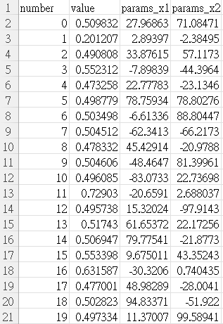
結語
今天介紹了幾個實用功能的實作方式，希望各位都有理解，若沒有理解或者有問題都可以在底下問我喔~因為Optuna版本更迭之後有些功能都會修改，所以造成有時候需要上官網或者相關論壇去看看有沒有解決辦法。
另外明天開始我會帶各位用Optuna來實作一些常用的任務，各位可以趁熱將這個套件用得更加熟練，掌握了這個套件之後我相信未來做類似應用都會幫上忙的。
附錄：完整程式(自定義停止條件)
import optuna
import numpy as np
from typing import Union
class StopWhenFitnessValueLowerThanThresholdCallback:
def __init__(self,
threshold: float,
stop_times: int):
'''
Args:
threshold: 適應值低於閥值threshold就算達標一次。
stop_times: 要達標的次數，完成達標的次數後就可以停止試驗了。
'''
self.threshold = threshold
self.stop_times = stop_times
self._stop_count = 0
def __call__(self, study: optuna.study.Study, trial: optuna.trial.FrozenTrial) -> None:
# 試驗的適應值屬性低於閥值讓達標次數+1
if trial.values[0] <= self.threshold:
self._stop_count += 1
# 如果達標次數有超過設定的達標次數，就可以讓試驗終止
if self._stop_count >= self.stop_times:
# 終止試驗
study.stop()
def schaffer_function_N2(x: Union[np.ndarray, list]):
assert len(x) == 2, 'x的長度必須為2!'
return 0.5 + (np.sin(x[0]**2-x[1]**2)**2 - 0.5) / (1+0.001*(x[0]**2+x[1]**2))**2
def objective(trial, high, low):
x1 = trial.suggest_float('x1', low, high)
x2 = trial.suggest_float('x2', low, high)
x = [x1, x2]
return schaffer_function_N2(x)
# 定義要調用的callback，閥值為0.001，成功次數為2
stop_callback = StopWhenFitnessValueLowerThanThresholdCallback(threshold=0.001, stop_times=2)
study = optuna.create_study(direction='minimize')
# 在最佳化方法optimize中使用參數callbacks傳遞我們定義的callback進去，可以指定許多callback
study.optimize(lambda trial: objective(trial, high=100, low=-100), n_trials=100000, callbacks=[stop_callback])
附錄：完整程式(檔案操作)
import optuna
import numpy as np
from typing import Union
def schaffer_function_N2(x: Union[np.ndarray, list]):
assert len(x) == 2, 'x的長度必須為2!'
return 0.5 + (np.sin(x[0]**2-x[1]**2)**2 - 0.5) / (1+0.001*(x[0]**2+x[1]**2))**2
def objective(trial):
x1 = trial.suggest_float('x1', -100, 100)
x2 = trial.suggest_float('x2', -100, 100)
x = [x1, x2]
return schaffer_function_N2(x)
# 儲存該次試驗 & 調用已儲存的試驗
# 定義試驗的名稱，相同試驗名稱相同，不同試驗名稱不可相同
study_name = "ithome-Day16-study"
# 定義要儲存的資料庫名稱
storage_name = f"sqlite:///{study_name}.db"
# 建立一個新的試驗並儲存試驗
study = optuna.create_study(study_name=study_name, # 試驗名稱
storage=storage_name) # 資料庫名稱
study.optimize(objective, n_trials=10)
# 跑完最佳化就會自動儲存該次試驗成資料庫囉
# 調用已經儲存的試驗
study = optuna.create_study(study_name=study_name, storage=storage_name, load_if_exists=True)
study.optimize(objective, n_trials=10)
# 儲存採樣器 & 調用儲存的採樣器
import pickle
# 儲存採樣器
with open("sampler.pkl", "wb") as f:
pickle.dump(study.sampler, f)
# 載入已儲存的採樣器
my_sampler = pickle.load(open("sampler.pkl", "rb"))
# 使用已儲存的採樣器，跟已儲存的試驗。
study = optuna.create_study(study_name=study_name, storage=storage_name, load_if_exists=True, sampler=my_sampler)
study.optimize(objective, n_trials=3)
# 將試驗內容儲存成csv檔案
df = study.trials_dataframe(attrs=("number", "value", "params"))
df.to_csv('study_history.csv', index=False)
[Day 17]打鐵趁熱！來試著使用Optuna解決問題吧
- Day: 17
- Date: 2024-09-23 00:23:29
- Author: golucky_sir
- Source: https://ithelp.ithome.com.tw/articles/10355938
- Series: https://ithelp.ithome.com.tw/2020-12th-ironman/articles/7610
- Series Title: 調整AI超參數好煩躁？來試試看最佳化演算法吧！
前言
前三天花了許多時間來向各位介紹Optuna的一些基本功能還有進階的實作，希望各位都有確實學會，如果還不清楚那三天在幹嘛的話歡迎來複習我在D14、D15、D16介紹的內容喔。
今天來帶各位實作一些簡單的相關應用，就是帶各位來實作sk-learn機器學習模型的最佳化，過了快一半了終於進入到模型最佳化的部分了，好感動QQ
最佳化機器學習模型
我們先來做個情境假設，今天需要做的任務是：使用機器學習的SVC模型，進行手寫數字辨識的任務，目標是準確率有超過97%。接下來就來構思問題跟釐清思路吧。
構思問題
接下來我們來構思一下這次程式要有甚麼功能，可以看看我之前的介紹，這是我在規劃這類型程式會思考的一些心法，每個人或多或少都會有一些不同，這部分內容見仁見智，若沒有特別想法也可以參考看看那些我會思考的要點喔。
| 5W1H | 規劃內容 |
|---|---|
| Why | 最佳化ML的SVC模型，目標為準確率超過97% |
| What | 最佳化問題是手寫數字辨識的分類任務，以準確率作為適應值 |
| Who | 預計對SVC中的kernel選擇與gamma參數進行最佳化 |
| Where | 預計SVC的gamma參數設定值為0.0001 ~ 0.01；將所有可用的kernel都拿來使用看看(kernel='precomputed'是不可用的) |
| When | 實現混淆矩陣、分類報告以及計算準確率後進行最佳化 |
| How | 使用Optuna |
撰寫程式
首先我們來撰寫機器學習的部分，這部分因為與本系列主題較無相關，所以就直接上程式碼了，主要流程就是載入資料集、定義SVC以及超參數(我們這個例子探討核函數的使用與gamma值，對SVC不熟悉可以看看這篇教學)、訓練SVC、預測並將結果可視化、最後將混淆矩陣跟準確率等都輸出。這段程式我使用sklearn的範例來進行修改，各位若對程式不熟也不妨去該篇教學範例看看喔。
這個範例所跑出來的結果目前是最優秀的結果，為了讓最佳化有意義。所以我們來嘗試看看在完全不知道參數咬使用多少的情況下，先隨便帶入一組參數，就用
gamma=0.05和kernel='poly'看看吧。
import numpy as np
import matplotlib.pyplot as plt
from sklearn import datasets, metrics, svm
from sklearn.model_selection import train_test_split
def plot_data(img: np.ndarray,
target: np.ndarray,
title: str):
"""
將圖片、類別、圖表標題輸入並繪製出圖片資料的預覽圖片。
:param img: 輸入的圖片資料
:param target: 輸入的類別(真實類別或者預測類別)
:param title: 圖片的標題(訓練資料或者預測資料)
:return: None
"""
_, axes = plt.subplots(nrows=1, ncols=4, figsize=(10, 3))
for ax, image, label in zip(axes, img, target):
ax.set_axis_off()
image = image.reshape(8, 8)
ax.imshow(image, cmap=plt.cm.gray_r, interpolation="nearest")
ax.set_title(f"{title}: %i" % label)
def plot_confusion_matrix(true_label: np.ndarray,
predict_label: np.ndarray):
"""
取得混淆矩陣中的資料，並繪製混淆矩陣圖繪製出來。
:param true_label: 真實的類別
:param predict_label: 預測的類別
:return: None
"""
disp = metrics.ConfusionMatrixDisplay.from_predictions(true_label, predict_label)
disp.figure_.suptitle("Confusion Matrix")
print(f"Confusion matrix:\n{disp.confusion_matrix}")
plt.show()
def print_classfication_report(true_label: np.ndarray,
predict_label: np.ndarray):
"""
將混淆矩陣資料作為輸入，並進一步計算準確率作為回傳值。
:param true_label: 真實的類別
:param predict_label: 預測的類別
:return: 預測資料的準確率。
"""
print("Classification report rebuilt from confusion matrix:\n"
f"{metrics.classification_report(true_label, predict_label)}\n")
accuracy = metrics.accuracy_score(true_label, predict_label)
return accuracy
# 載入訓練資料
digits = datasets.load_digits()
# 將資料內容進行可視化，每張圖片都是8*8大小的，共1797張圖片
plot_data(digits.images, digits.target, 'Training')
# 將二維圖片資料展開為一維度的向量
n_samples = len(digits.images)
data = digits.images.reshape((n_samples, -1)) # shape=(1797, 64)
# 把資料拆成一半訓練集一半測試集
X_train, X_test, y_train, y_test = train_test_split(data, digits.target, test_size=0.5, shuffle=False)
# 建立SVC模型
clf = svm.SVC(gamma=0.05, kernel='poly')
# 訓練SVC模型
clf.fit(X_train, y_train)
# 用測試集來預測資料
predicted = clf.predict(X_test)
# 將測試資料與預測的類別畫出來
plot_data(X_test, predicted, 'Prediction')
# 建立混淆矩陣並輸出圖片
plot_confusion_matrix(y_test, predicted)
# 產生分類報告，包含每個類別各自預測的情況以及各項指標
acc = print_classfication_report(y_test, predicted)
可以看到以下結果：
- 資料集預覽圖：
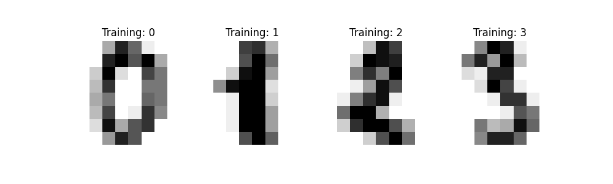
- 預測資料預覽圖：
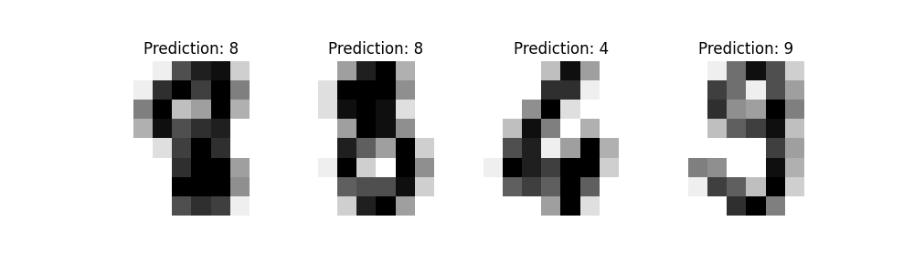
- 混淆矩陣圖:
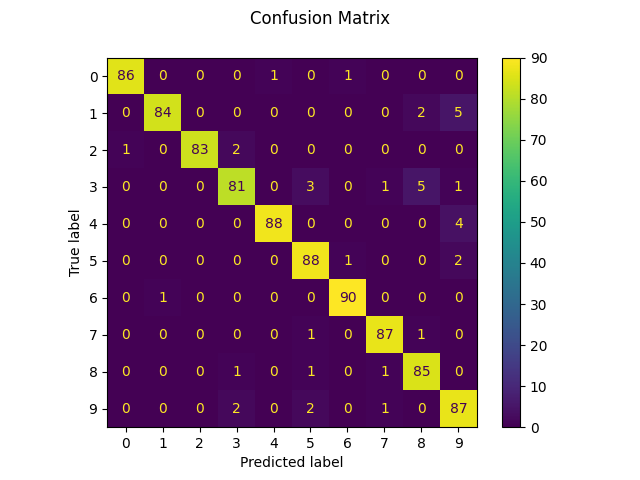
- 測試資料預測準確率：
0.9555061179087876，四捨五入約為95.55%。
實現Optuna最佳化
將原本的程式進行了一些整理，整理完成後的上述程式接下來就要拿來修改並進行最佳化啦，首先我們根據之前介紹的流程來進行程式的開發：
-
定義目標函數：新增一個副程式作為最佳化時要執行的副程式吧，在訓練時因為訓練與測試資料都是固定的，所以希望可以把這些資料都作為參數帶進去，程式撰寫為：
def objective(trial, X_train: np.ndarray, X_test: np.ndarray, y_train: np.ndarray, y_test: np.ndarray): -
新增要帶入目標函數的變數：根據剛剛構思的內容，這次我們要帶入SVC的gamma值和核函數的選擇，gamma的範圍設定在0.0001~0.01之間；核函數的選擇有
"linear","poly","rbf","sigmoid"這四個，程式的撰寫如下。gamma = trial.suggest_float('gamma', 0.0001, 0.01) kernel = trial.suggest_categorical('kernel', ["linear", "poly", "rbf", "sigmoid"]) # 建立SVC模型 clf = svm.SVC(gamma=gamma, kernel=kernel) -
新增其他功能：這部分我們可以根據剛剛教學的範例程式新增繪製預測類別的圖、輸出混淆矩陣圖片等功能，但因為這樣每次試驗都會產生圖片，有時候圖片就會變得太多。這部分各位可以根據自己的需求改為儲存圖片，或者儲存成csv等格式等等。
# 將測試資料與預測的類別畫出來 plot_data(X_test, predicted, 'Prediction') #可以根據需求不使用或者更改 # 建立混淆矩陣並輸出圖片 plot_confusion_matrix(y_test, predicted) #可以根據需求不使用或者更改 # 產生分類報告，包含每個類別各自預測的情況以及各項指標 acc = print_classfication_report(y_test, predicted) -
定義回傳適應值：接著要回傳準確率作為我們最佳化的目標適應值，這部分就直接回傳就好了，我們可以使用
metrics.accuracy_score(真實類別, 預測類別)將正確的類別與預測的類別輸入並得到預測的準確率。
所以在目標函數執行的副程式會變成這樣，主要就是把剛剛範例的片段直接變成副程式就好了：def objective(trial, X_train: np.ndarray, X_test: np.ndarray, y_train: np.ndarray, y_test: np.ndarray): gamma = trial.suggest_float('gamma', 0.0001, 0.01) kernel = trial.suggest_categorical('kernel', ["linear", "poly", "rbf", "sigmoid"]) # 建立SVC模型 clf = svm.SVC(gamma=gamma, kernel=kernel) # 訓練SVC模型 clf.fit(X_train, y_train) # 用測試集來預測資料 predicted = clf.predict(X_test) # 將測試資料與預測的類別畫出來 # plot_data(X_test, predicted, 'Prediction') #可以根據需求不使用或者更改 # 建立混淆矩陣並輸出圖片 # plot_confusion_matrix(y_test, predicted) #可以根據需求不使用或者更改 # 產生分類報告，包含每個類別各自預測的情況以及各項指標 acc = print_classfication_report(y_test, predicted) return acc -
定義一個試驗：接著定義最佳化試驗，最佳化目標是要讓準確率最大化，另外希望可以讓每次結果都相同，所以在採樣(sample)的部分設定一下亂數種子，所以程式撰寫就會變成：
study = optuna.create_study(direction='maximize', sampler=optuna.samplers.TPESampler(seed=42)) -
執行最佳化：接著就執行最佳化就好了，最佳化試驗次數我們設定100。
study.optimize(lambda trial: objective(trial, X_train, X_test, y_train, y_test), n_trials=100) -
將最佳解print出來：最後試驗完成後將最佳解組合與該組合下的最高準確率給print出來，最佳參數組合與執行過後的最高準確率如下表，準確率接近97%已經比剛剛設定的96.55%高了一些，這也跟官方範例給的準確率相同，我猜可能這相關研究也有使用最佳化應用來找出適合的參數組合。
不過因為資料都已經處理得很完善，所以準確率基本上不會差太多，但使用自己的資料或者沒有經過完整處理的資料在訓練上就會出現參數設定不同導致準確率差異大的情況了。
print(study.best_params) print(study.best_value)
| 參數名稱 | 參數數值 |
|---|---|
| gamma | 0.0008376340032534458 |
| kernel | 'rbf' |
| 準確率 | 96.89% |
-
查看程式執行過程：這部分可以將最佳化的收斂方式給畫出來，或者做一些其他的繪圖分析，以本例來說我繪製了試驗過程的收斂曲線，各位可以根據本身的需求去新增其他相關功能。
optuna.visualization.matplotlib.plot_optimization_history(study) plt.tight_layout() plt.show()收斂圖如下，看的出來在最佳化初期就找到最佳解了，如果用更複雜的模型、調整更多參數的話，收斂圖就不會看起來哪麼順利了。

結語
今天帶各位實作了機器學習最佳化模型的應用，希望各位可以趁這次練習將Optuna用得更上手，Optuna中採樣方式預設是使用Tree-structured Parzen Estimator (TPE)。在進入其他應用前我認為應該先開個新視窗來講解一下TPE演算法，希望各位不會被數學給淹沒，也希望各位看完明天的文章後可以對TPE以及Optuna的一些後端原理能有一些認識。
附錄：完整程式(最佳化機器學習模型)
import optuna
import numpy as np
from typing import Union
import matplotlib.pyplot as plt
from sklearn import datasets, metrics, svm
from sklearn.model_selection import train_test_split
def plot_data(img: np.ndarray,
target: np.ndarray,
title: str):
"""
將圖片、類別、圖表標題輸入並繪製出圖片資料的預覽圖片。
:param img: 輸入的圖片資料
:param target: 輸入的類別(真實類別或者預測類別)
:param title: 圖片的標題(訓練資料或者預測資料)
:return: None
"""
_, axes = plt.subplots(nrows=1, ncols=4, figsize=(10, 3))
for ax, image, label in zip(axes, img, target):
ax.set_axis_off()
image = image.reshape(8, 8)
ax.imshow(image, cmap=plt.cm.gray_r, interpolation="nearest")
ax.set_title(f"{title}: %i" % label)
def plot_confusion_matrix(true_label: np.ndarray,
predict_label: np.ndarray):
"""
取得混淆矩陣中的資料，並繪製混淆矩陣圖繪製出來。
:param true_label: 真實的類別
:param predict_label: 預測的類別
:return: None
"""
disp = metrics.ConfusionMatrixDisplay.from_predictions(true_label, predict_label)
disp.figure_.suptitle("Confusion Matrix")
print(f"Confusion matrix:\n{disp.confusion_matrix}")
plt.show()
def print_classfication_report(true_label: np.ndarray,
predict_label: np.ndarray):
"""
將混淆矩陣資料作為輸入，並進一步計算準確率作為回傳值。
:param true_label: 真實的類別
:param predict_label: 預測的類別
:return: 預測資料的準確率。
"""
print("Classification report rebuilt from confusion matrix:\n"
f"{metrics.classification_report(true_label, predict_label)}\n")
accuracy = metrics.accuracy_score(true_label, predict_label)
return accuracy
def objective(trial,
X_train: np.ndarray,
X_test: np.ndarray,
y_train: np.ndarray,
y_test: np.ndarray):
gamma = trial.suggest_float('gamma', 0.0001, 0.01)
kernel = trial.suggest_categorical('kernel', ["linear", "poly", "rbf", "sigmoid"])
# 建立SVC模型
clf = svm.SVC(gamma=gamma, kernel=kernel)
# 訓練SVC模型
clf.fit(X_train, y_train)
# 用測試集來預測資料
predicted = clf.predict(X_test)
# 將測試資料與預測的類別畫出來
# plot_data(X_test, predicted, 'Prediction') #可以根據需求不使用或者更改
# 建立混淆矩陣並輸出圖片
# plot_confusion_matrix(y_test, predicted) #可以根據需求不使用或者更改
# 產生分類報告，包含每個類別各自預測的情況以及各項指標
acc = print_classfication_report(y_test, predicted)
return acc
if __name__ == '__main__':
# 載入訓練資料
digits = datasets.load_digits()
# 將資料內容進行可視化，每張圖片都是8*8大小的，共1797張圖片
# plot_data(digits.images, digits.target, 'Training')
# 將二維圖片資料展開為一維度的向量
n_samples = len(digits.images)
data = digits.images.reshape((n_samples, -1)) # shape=(1797, 64)
# 把資料拆成一半訓練集一半測試集
X_train, X_test, y_train, y_test = train_test_split(data, digits.target, test_size=0.5, shuffle=False)
# 新增最佳化試驗
study = optuna.create_study(direction='maximize', sampler=optuna.samplers.TPESampler(seed=42))
study.optimize(lambda trial: objective(trial, X_train, X_test, y_train, y_test), n_trials=100)
# 將試驗中的最佳解print出來。
print(study.best_params)
print(study.best_value)
optuna.visualization.matplotlib.plot_optimization_history(study)
plt.tight_layout()
plt.show()
[Day 18]Optuna的背後演算法，TPE介紹
- Day: 18
- Date: 2024-09-24 00:00:44
- Author: golucky_sir
- Source: https://ithelp.ithome.com.tw/articles/10357248
- Series: https://ithelp.ithome.com.tw/2020-12th-ironman/articles/7610
- Series Title: 調整AI超參數好煩躁？來試試看最佳化演算法吧！
前言
昨天帶各位使用了Optuna進行機器學習的最佳化，算是先讓各位見識一下Optuna在機器學習模型參數調整上的結果。不過再進入其他模型最佳化的應用時我想先跳出來向各位介紹一下Optuna中預設的採樣器(sampler)，也就是Tree-structured Parzen Estimator (TPE)演算法。
接下來就來介紹TPE演算法的背後原理~
TPE介紹
TPE演算法是基於貝葉斯最佳化的一種專門用於「超參數調校」的演算法，既然是用於超參數最佳化的演算法，那他就是用於在大量參數的搜索空間中找出最佳的參數組合。
TPE演算法主要使用機率密度估計的方式來從搜索空間中採樣，藉此在較短的時間中找到能帶來最佳適應值的參數組合。
若對演算法有興趣也歡迎直接去看看TPE的原始論文喔！
TPE概念
TPE的主要概念是使用兩個機率密度函數(Probability Density Function, PDF)來對超參數的條件機率分布進行建模，機率密度函數是用於描述隨機變數值在某個確定的點附近機率的函數。
這兩個機率密度函數有不同的功能，其中一條用來針對適應值佳的超參數組合(better group)的機率密度函數進行建模，另一條就是用來針對較差的超參數組合(worse group)的機率密度函數，透過計算來不斷的更新這兩條機率密度函數的樣子。後續採樣方式就會靠近較佳參數組合那端，遠離較差組合那端。
TPE適用場景
TPE因為該演算法可以自適應兩個機率密度函數的樣子並從中採樣，所以可以快速的找到全局最佳解，演算法主要適用的情形為：
- 尋解的超參數組合並不多，通常會限制在20個以內。
- 最佳化的目標很難透過求梯度去進行最佳化，例如很難探討模型學習率與誤差之間的關係，基本上也不可能將這輛兩個關係進行建模並求導數。
- 最佳化目標是要花類大量時間求得的函數，例如訓練完模型再去計算模型測試資料的準確率。
TPE原理
接下來要來討論TPE的原理了，首先根據原始論文的定義我們可以從以下公式看到兩個組合的部分，l(x)是較佳組；g(x)是較差組；x為帶入的解；y為根據此帶入解計算出的適應值；y*為一個閥值，計算出來的結果為p(x|y)。
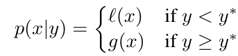
TPE使用**期望改進(Expected Improvement，EI)**作為採樣的方式，EI在TPE論文中被使用的公式如下：
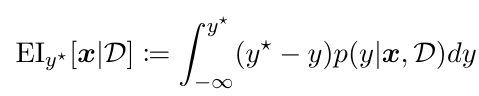
不過我們並無法取得p(y|x)，所以只能使用貝氏定理進行轉換，根據原式轉換後的結果為：
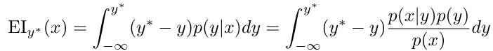
經過貝式定理轉換後我們得到了
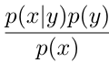
之後可以發現，p(x|y)為一開始的結果，然後p(x)與p(y)也可以經過建模取得。- p(x)(分母)的建構：根據論文中的說明(4.1章節中方程式3的下一行)
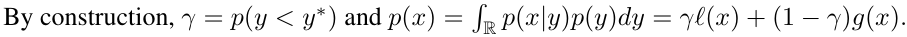
可以知道作者新設定了一個變數γ，作為TPE中的一個分界的概念，這個變數可以用來將l(x)與g(x)分開，也就是說剛剛p(x|y)的公式可以使用γ來簡化成一個公式：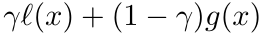
。
另外機率分布p(y)的積分會等於1，所以結果就會變成如上公式。
γ的值在0~1之間。這句話的最後一個表示式就代表今天如果有100個解帶入並取得了相應的結果，而γ設定成0.05的話，那就會使用最好的5個結果構建分布l(x)；另外95個不好的結果構建分布g(x)。 - P(y)(分子)的建構：根據論文的說明如下，分子的部分可以得到如此的結果，這部分比較不重要。
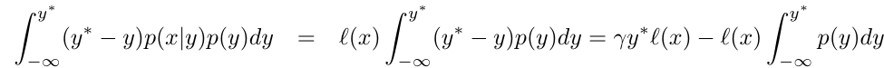
建構完分子與分母後我們可以將他們帶入到採樣方式EI，接著就會變成如下的樣子。
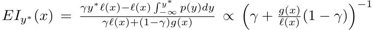
剛剛求到的分母部分若同除以l(x)就會得到
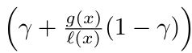
，接著剛剛帶入後的EI結果會與分母部分的倒數成正比，所以就可以寫成如上的表達式。為了最大化這個EI我們可以看到剛剛成正比的分母倒數，倒數完之後可以看到其中有一個部分l(x)/g(x)，從直觀的想法我們希望帶入解x會出現在較佳組l(x)的機率高，在較差組g(x)的機率低，所以l(x)/g(x)要最大化，這樣採樣出來的結果出現較佳情況的可能性才會高。
不過昨天跑的程式會發現就算收斂了偶爾還是會有幾個效果很差的結果，那就是難免會有一些較差組的解被帶入，雖然機率可能比較低但還是無法避免的，所以各位不需要擔心TPE沒有好好的最佳化喔~
從下圖來看出現較差解的機率似乎是有變低了啦，所以TPE應該還是有效果的。
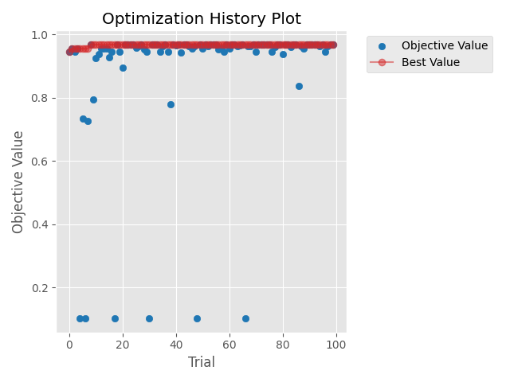
結語
TPE的大致流程與原理基本上就是這樣，當然還有一些更細節的概念，但這些概念會稍微偏離主軸，今天的部分參考了許多資料，我將這些資料都附在最後的參考資料區，有需要的人可以再去這些參考資料中看看。
不過希望各位在認識了TPE背後的原理之後，能夠對Optuna最佳化的方式能又更深的理解。明天會繼續使用Optuna來進行其他模型最佳化的應用，理解了一些背後的原理，相信各位應該能對自己所寫的程式有更全面的認識，在解釋程式的演算過程也會比較輕鬆，若要進行修改也會更容易從正確的方向進行修改~
參考資料
原始論文
參考的其他論文1
參考的其他論文2
參考資料1
參考資料2
參考資料3
[Day 19]Optuna的更多應用，最佳化MLP與CNN網路
- Day: 19
- Date: 2024-09-25 00:06:24
- Author: golucky_sir
- Source: https://ithelp.ithome.com.tw/articles/10357912
- Series: https://ithelp.ithome.com.tw/2020-12th-ironman/articles/7610
- Series Title: 調整AI超參數好煩躁？來試試看最佳化演算法吧！
前言
昨天向各位介紹了TPE的背後原理，希望各位有更理解TPE運作的方式以及期望的目標，今天又要來繼續帶各位實作最佳化的一些應用了。
今天要來最最佳化的模型為多層感知器(MLP)與卷積神經網路(CNN)模型，這兩個模型作為AI入門必定會學習到的模型，也是最常見的幾個模型，常常在完成模型後希望讓性能更好，但手動調整參數又很累，這時就輪到最佳化登場啦。
問題假設
今天的問題假設我們使用MLP和CNN來進行MNIST的手寫數字辨識，並且設定目標是測試資料的準確率超過97%，關於模型建立與訓練的部分就不細講，各位可以去看相關教學。
最佳化MLP
首先要來最佳化MLP，MLP作為最簡單也最基礎的模型，透過疊加許多密集連接層來建立模型。使用MLP進行MNIST手寫數字的辨識有非常多的教學文章，各位若不熟悉可以先去參考看看，接下來我會帶各位一步一步最佳化MLP模型。
MLP程式碼
一樣不過多介紹深度學習模型訓練的部分，主要分為資料前處理，模型建立，訓練模型，最後回傳測試資料集的準確率。
from tensorflow.keras.datasets.mnist import load_data
from tensorflow.keras.models import Sequential
from tensorflow.keras.layers import Input, Conv2D, MaxPooling2D, Flatten, Dropout, Dense
from tensorflow.keras.utils import to_categorical
import numpy as np
def get_MLP_model(layer_num:int = 2,
first_layer_unit:int = 128):
"""
中間隱藏層數量建議設定在2~4層
第一層神經元數量為first_layer_unit / 2^0=128
第二層神經元數量為first_layer_unit / 2^1=64
以此類推，到第四層只剩16個神經元。
Args:
layer_num: 模型的中間隱藏層數
first_layer_unit: 第一層的神經元數量
Returns: keras的模型。
"""
model = Sequential()
model.add(Input(shape=(28, 28, 1)))
model.add(Flatten())
for i in range(layer_num):
model.add(Dense(int(first_layer_unit / 2**i), activation="relu"))
model.add(Dense(10, activation="softmax"))
# model.summary()
model.compile(loss="categorical_crossentropy", optimizer="adam", metrics=["accuracy"])
return model
def training_and_evaluating_model(model, X_train, y_train, X_test, y_test,
batch_size:int = 128,
epochs:int = 10):
"""
訓練模型並將測試資料集的準確率作為輸出。
Args:
batch_size: 每次訓練一批的資料量
epochs: 訓練次數
Returns: 測試資料集的準確率，作為適應值回傳。
"""
model.fit(X_train, y_train, batch_size=batch_size, epochs=epochs, validation_split=0.1)
score = model.evaluate(X_test, y_test, verbose=0)
return score[1]
if __name__ == '__main__':
(X_train, y_train), (X_test, y_test) = load_data()
# shape = (60000, 28, 28) 標準化圖片像素到0~1之間
X_train = X_train.astype("float32") / 255
X_test = X_test.astype("float32") / 255
# shape = (60000, 28, 28, 1) 加入通道維度
X_train = np.expand_dims(X_train, -1)
X_test = np.expand_dims(X_test, -1)
# 將類別進行one-hot轉換
y_train = to_categorical(y_train, 10)
y_test = to_categorical(y_test, 10)
# 取得模型
model = get_MLP_model(layer_num=3, first_layer_unit=64)
# 訓練模型
acc = training_and_evaluating_model(model, X_train, y_train, X_test, y_test, batch_size=64, epochs=5)
print(acc) # 0.9684000015258789
構思問題
首先先來構思問題，執行了以上程式碼會發現測試集準確率大約為96.84%左右，執行上或多或少都有誤差，所以結果不一樣是正常的。
我們的目標是希望能夠再將準確率提高一些，接著來稍微規劃一下接下來程式的大方向吧。
| 5W1H | 規劃內容 |
|---|---|
| Why | 最佳化MLP模型，目標為準確率超過97% |
| What | 最佳化問題是手寫數字辨識的分類任務，以準確率作為適應值 |
| Who | 預計對MLP中的隱藏層數量、第一層隱藏層的神經元數量、訓練批次量、訓練次數進行最佳化 |
| Where | 隱藏層數量為2~4層、第一層神經元數量從[64, 128, 256, 512]中選擇，批次量從[32, 64, 128]中選擇，訓練次數為5~50次(次數為5的倍數) |
| When | 計算完測試資料準確率後進行最佳化 |
| How | 使用Optuna |
這次為了節省篇幅就將任務還有原始程式設定的簡單點吧，目前規劃大概這樣，若各位對超參數的範圍拿捏不定的話，可以先將範圍設定廣一點，經過幾次試驗後再從中挑出效果比較好的範圍，最後從這個範圍中尋求最佳解。
因為每次訓練結果不同，所以建議各位每次試驗都可以把模型權重檔案儲存起來！訓練完成後再把效果差的刪除就好了~
實現Optuna最佳化
接下來來照著第14天提到SOP來建立最佳化試驗吧，有不理解的內容歡迎回去複習一下那天提到的東西喔。
-
定義目標函數：和昨天提到的一樣，我們的目標函數為了避免每次執行試驗都要重新載入資料集，所以需要定義輸入資料集的部分。
def objective_MLP(trial, X_train: np.ndarray, X_test: np.ndarray, y_train: np.ndarray, y_test: np.ndarray): -
新增要帶入目標函數的變數：剛剛提到我們要來針對隱藏層數量、第一層隱藏層的神經元數量、訓練批次量、訓練次數進行最佳化，所以就來新增這些變數吧，上面也有提到這些超參數的定義範圍。
layer_num = trial.suggest_int('layer_num', 2, 4) epochs = trial.suggest_int('epochs', 5, 50, 5) first_layer_unit = trial.suggest_categorical('first_layer_unit', [64, 128, 256, 512]) batch_size = trial.suggest_categorical('batch_size', [32, 64, 128]) -
新增其他功能：因為篇幅關係，就不提及其他的功能了。不過各位可以將每次訓練的history等都都進行儲存、或者新增儲存模型權重等功能。
-
定義回傳適應值：接著就要來進行訓練並針對測試資料進行評估，最後回傳測試資料集的準確率，作為適應值。
# 取得模型 model = get_MLP_model(layer_num=layer_num, first_layer_unit=first_layer_unit) # 訓練模型 acc = training_and_evaluating_model(model, X_train, y_train, X_test, y_test, batch_size=batch_size, epochs=epochs) print(acc) return acc -
定義一個試驗：這部分也並沒有太多需要修改的內容，程式碼如下：
study = optuna.create_study(direction='maximize', sampler=optuna.samplers.TPESampler(seed=42)) -
執行最佳化：這部分也和昨天介紹的一樣，不過為了節省程式執行的總時間，我的試驗次數只設定10次，實際上會建議再使用多一點次數，程式碼如下：
study.optimize(lambda trial: objective_MLP(trial, X_train, X_test, y_train, y_test), n_trials=10) -
將最佳解print出來：這部分也沒太大變化。
print(study.best_params) # {'layer_num': 3, 'epochs': 50, 'first_layer_unit': 512, 'batch_size': 128} print(study.best_value) # 0.9861999750137329從最佳解可以看到根據上面註解的參數組合，最佳的測試資料集準確率甚至可以達到98.62%快要99%了，我跑了幾次也幾乎有超過98%。
-
查看程式執行過程：這部分除了將最佳化過程的圖片顯示出來以外，我也把各參數的重要性給繪製出來，這可以提供若要再進行一次最佳化時，有沒有需要把不重要的因素排除；重要的因素可以再設定廣一點的搜索空間。
# 繪製試驗的最佳化過程 optuna.visualization.matplotlib.plot_optimization_history(study) plt.tight_layout() plt.show() # 繪製超參數因素重要性 optuna.visualization.matplotlib.plot_param_importances(study) plt.tight_layout() plt.show()最佳化過程圖如下，可以看到有穩定的提升：
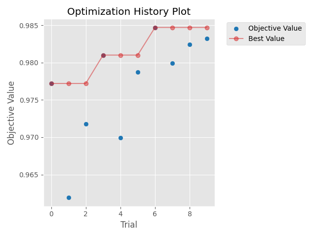
另外超參數重要性的圖如下，可以看到設定批次量似乎並不重要，而第一個隱藏層網路的神經元數量(first_layer_unit)與訓練次數(epochs)都很重要，如果要進行第二次最佳化實驗的話，可以著重於這兩個參數進行尋解。
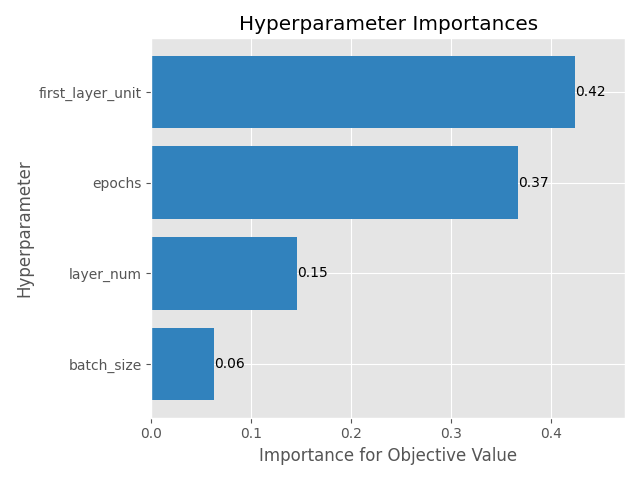
以上就是最佳化MLP的一個範例，各位可以根據此範例與流程去應用於自己的任務喔！
最佳化CNN
接著我們使用相同程式碼來最佳化CNN，大致流程都相同，接下來來直接再進行一次範例吧。
CNN程式碼
和上面MLP的範例幾乎完全相同，唯一有變的部分只有定義模型時是使用卷積與最大池化網路層而已，這邊只展示定義CNN網路的副程式，其他都深度學習部分的程式都沒有變動。
def get_CNN_model(k:int = 4,
layer_num:int = 1,
first_layer_unit:int = 8):
"""
中間隱藏層數量建議設定在1~3層。
每次迴圈會使用MaxPooling2D
第一層MaxPooling2D會讓圖片長寬變(14, 14)
第二層MaxPooling2D會讓圖片長寬變(7, 7)
第三層MaxPooling2D會讓圖片長寬變(3, 3)
Args:
k: 卷積層中的卷積核大小
layer_num: 中間隱藏層數量，每層中包括一個卷積跟一層最大池化
first_layer_unit: 第一層網路的神經元數量
Returns: CNN 模型
"""
model = Sequential()
model.add(Input(shape=(28, 28, 1)))
for i in range(1, layer_num+1):
model.add(Conv2D(first_layer_unit*i, kernel_size=(k, k), activation="relu", padding='same'))
model.add(MaxPooling2D(pool_size=(2, 2)))
model.add(Flatten())
model.add(Dropout(0.5))
model.add(Dense(10, activation="softmax"))
# model.summary()
model.compile(loss="categorical_crossentropy", optimizer="adam", metrics=["accuracy"])
return model
構思問題
在主程式中隨便設定如下這樣的超參數的話訓練結果中測試資料準確率約為97%~98%，那訓練目標就是要來讓準確率再高一點了。
# 取得模型
model = get_CNN_model(k=4, layer_num=1, first_layer_unit=8)
# 訓練模型
acc = training_and_evaluating_model(model, X_train, y_train, X_test, y_test, batch_size=128, epochs=10)
print(acc)
接下來和MLP類似，來規劃一下最佳化的部分吧，剛剛經過MLP的測試我們發現batch_size重要性不高，所以就不尋最佳的batch_size了，不過這次也來尋找看看，看卷積核大小是否會影響到最佳化。
| 5W1H | 規劃內容 |
|---|---|
| Why | 最佳化CNN模型，目標為準確率超過98% |
| What | 最佳化問題是手寫數字辨識的分類任務，以準確率作為適應值 |
| Who | 預計對CNN中的隱藏層數量、第一層隱藏層的神經元數量、2D卷積網路的卷積核大小、訓練次數進行最佳化 |
| Where | 隱藏層數量為1~3層、第一層神經元數量從[16, 32, 64, 128, 256]中選擇，2D卷積網路的卷積核大小為2~5，訓練次數為5~50次(次數為5的倍數) |
| When | 計算完測試資料準確率後進行最佳化 |
| How | 使用Optuna |
實現Optuna最佳化
-
定義目標函數：和前面幾個範例相同。
def objective_CNN(trial, X_train: np.ndarray, X_test: np.ndarray, y_train: np.ndarray, y_test: np.ndarray): -
新增要帶入目標函數的變數：剛剛有提到要帶入的超參數以及這些超參數的搜索空間。
k = trial.suggest_int('k', 2, 5) layer_num = trial.suggest_int('layer_num', 1, 3) epochs = trial.suggest_int('epochs', 5, 50, 5) first_layer_unit = trial.suggest_categorical('first_layer_unit', [16, 32, 64, 128, 256]) -
新增其他功能：和上面提到的MLP一樣，因為篇幅關係，就不提及其他的功能了。
-
定義回傳適應值：和MLP一樣，定義CNN訓練，接著進行測試資料集的評估，最後回傳測試資料集的準確率。
# 取得模型 model = get_CNN_model(k=k, layer_num=layer_num, first_layer_unit=first_layer_unit) # 訓練模型 acc = training_and_evaluating_model(model, X_train, y_train, X_test, y_test, batch_size=128, epochs=epochs) print(acc) return acc
接著第5步到第8步內容都和剛剛介紹的MLP相同，所以我就直接統一上程式碼了。
# 新增最佳化試驗
study = optuna.create_study(direction='maximize', sampler=optuna.samplers.TPESampler(seed=42))
study.optimize(lambda trial: objective_CNN(trial, X_train, X_test, y_train, y_test), n_trials=10)
# 將試驗中的最佳解print出來。
print(study.best_params)
print(study.best_value)
# 繪製試驗的最佳化過程
optuna.visualization.matplotlib.plot_optimization_history(study)
plt.tight_layout()
plt.show()
# 繪製超參數因素重要性
optuna.visualization.matplotlib.plot_param_importances(study)
plt.tight_layout()
plt.show()
各位可以看到當參數設計為下表時，測試集準確率達到99.4%，非常優秀的結果。
| 參數名稱 | 參數值 |
|---|---|
| k(卷積核大小) | 3 |
| layer_num(隱藏層數量) | 3 |
| epochs(訓練次數) | 40 |
| first_layer_unit(第一層隱藏層的神經元數量) | 256 |
| 測試資料準確率 | 0.9940999746322632，約99.4% |
最後以下是CNN最佳化的過程圖，訓練運氣比較好，第一次就是最佳解XD，多跑幾次或許會有不同的情況產生~
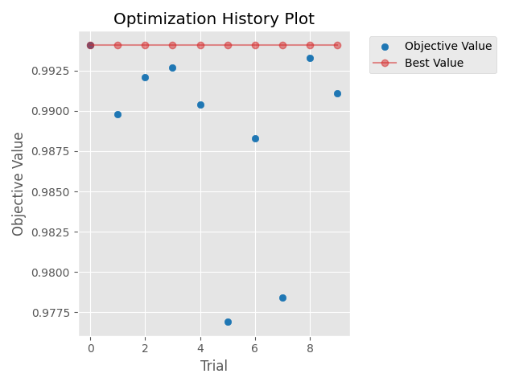
以及各超參數的重要性圖表。
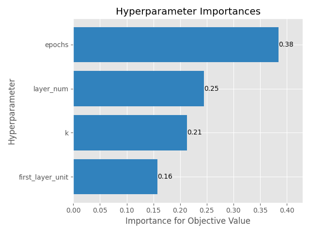
結語
今天展示了最佳化MLP與CNN的例子，通常不同模型中都會有不同的超參數可以調整，所以事前的規劃就會變得更加重要了，預計要使用哪些超參數，超參數的範圍如何設定就會變成很重要的問題。
這也是我會使用5W1H來進行初步規劃的方式，透過多次實驗慢慢讓這些問題的假設變得更精準，不過還是老話一句這些思路不一定適合所有人，希望各位可以在實驗中找出適合自己的最佳方式！
附錄：完整程式
from tensorflow.keras.datasets.mnist import load_data
from tensorflow.keras.models import Sequential
from tensorflow.keras.layers import Input, Conv2D, MaxPooling2D, Flatten, Dropout, Dense
from tensorflow.keras.utils import to_categorical
import numpy as np
import optuna
import matplotlib.pyplot as plt
def get_CNN_model(k:int = 3,
layer_num:int = 2,
first_layer_unit:int = 32):
"""
中間隱藏層數量建議設定在1~3層。
每次迴圈會使用MaxPooling2D
第一層MaxPooling2D會讓圖片長寬變(14, 14)
第二層MaxPooling2D會讓圖片長寬變(7, 7)
第三層MaxPooling2D會讓圖片長寬變(3, 3)
Args:
k: 卷積層中的卷積核大小
layer_num: 中間隱藏層數量，每層中包括一個卷積跟一層最大池化
first_layer_unit: 第一層網路的神經元數量
Returns: CNN 模型
"""
model = Sequential()
model.add(Input(shape=(28, 28, 1)))
for i in range(1, layer_num+1):
model.add(Conv2D(first_layer_unit*i, kernel_size=(k, k), activation="relu", padding='same'))
model.add(MaxPooling2D(pool_size=(2, 2)))
model.add(Flatten())
model.add(Dropout(0.5))
model.add(Dense(10, activation="softmax"))
# model.summary()
model.compile(loss="categorical_crossentropy", optimizer="adam", metrics=["accuracy"])
return model
def get_MLP_model(layer_num:int = 2,
first_layer_unit:int = 128):
"""
中間隱藏層數量建議設定在2~4層
第一層神經元數量為first_layer_unit / 2^0=128
第二層神經元數量為first_layer_unit / 2^1=64
以此類推，到第四層只剩16個神經元。
Args:
layer_num: 模型的中間隱藏層數
first_layer_unit: 第一層的神經元數量
Returns: keras的模型。
"""
model = Sequential()
model.add(Input(shape=(28, 28, 1)))
model.add(Flatten())
for i in range(layer_num):
model.add(Dense(int(first_layer_unit / 2**i), activation="relu"))
model.add(Dense(10, activation="softmax"))
# model.summary()
model.compile(loss="categorical_crossentropy", optimizer="adam", metrics=["accuracy"])
return model
def training_and_evaluating_model(model, X_train, y_train, X_test, y_test,
batch_size:int = 128,
epochs:int = 10):
"""
訓練模型並將測試資料集的準確率作為輸出。
Args:
batch_size: 每次訓練一批的資料量
epochs: 訓練次數
Returns: 測試資料集的準確率，作為適應值回傳。
"""
model.fit(X_train, y_train, batch_size=batch_size, epochs=epochs, validation_split=0.1)
score = model.evaluate(X_test, y_test, verbose=0)
return score[1]
def objective_MLP(trial,
X_train: np.ndarray,
X_test: np.ndarray,
y_train: np.ndarray,
y_test: np.ndarray):
"""
MLP 網路訓練的最佳化。
"""
layer_num = trial.suggest_int('layer_num', 2, 4)
epochs = trial.suggest_int('epochs', 5, 50, 5)
first_layer_unit = trial.suggest_categorical('first_layer_unit', [64, 128, 256, 512])
batch_size = trial.suggest_categorical('batch_size', [32, 64, 128])
# 取得模型
model = get_MLP_model(layer_num=layer_num, first_layer_unit=first_layer_unit)
# 訓練模型
acc = training_and_evaluating_model(model, X_train, y_train, X_test, y_test, batch_size=batch_size, epochs=epochs)
print(acc)
return acc
def objective_CNN(trial,
X_train: np.ndarray,
X_test: np.ndarray,
y_train: np.ndarray,
y_test: np.ndarray):
"""
CNN 網路訓練的最佳化。
"""
k = trial.suggest_int('k', 2, 5)
layer_num = trial.suggest_int('layer_num', 1, 3)
epochs = trial.suggest_int('epochs', 5, 50, 5)
first_layer_unit = trial.suggest_categorical('first_layer_unit', [16, 32, 64, 128, 256])
# 取得模型
model = get_CNN_model(k=k, layer_num=layer_num, first_layer_unit=first_layer_unit)
# 訓練模型
acc = training_and_evaluating_model(model, X_train, y_train, X_test, y_test, batch_size=128, epochs=epochs)
print(acc)
return acc
if __name__ == '__main__':
(X_train, y_train), (X_test, y_test) = load_data()
# shape = (60000, 28, 28) 標準化圖片像素到0~1之間
X_train = X_train.astype("float32") / 255
X_test = X_test.astype("float32") / 255
# shape = (60000, 28, 28, 1) 加入通道維度
X_train = np.expand_dims(X_train, -1)
X_test = np.expand_dims(X_test, -1)
# 將類別進行one-hot轉換
y_train = to_categorical(y_train, 10)
y_test = to_categorical(y_test, 10)
# 新增最佳化試驗
study = optuna.create_study(direction='maximize', sampler=optuna.samplers.TPESampler(seed=42))
# study.optimize(lambda trial: objective_MLP(trial, X_train, X_test, y_train, y_test), n_trials=10)
study.optimize(lambda trial: objective_CNN(trial, X_train, X_test, y_train, y_test), n_trials=10)
# 將試驗中的最佳解print出來。
print(study.best_params)
print(study.best_value)
# 繪製試驗的最佳化過程
optuna.visualization.matplotlib.plot_optimization_history(study)
plt.tight_layout()
plt.show()
# 繪製超參數因素重要性
optuna.visualization.matplotlib.plot_param_importances(study)
plt.tight_layout()
plt.show()
[Day 20]Optuna的更多應用，最佳化生成對抗網路(GAN)(1/2)
- Day: 20
- Date: 2024-09-26 00:03:07
- Author: golucky_sir
- Source: https://ithelp.ithome.com.tw/articles/10358474
- Series: https://ithelp.ithome.com.tw/2020-12th-ironman/articles/7610
- Series Title: 調整AI超參數好煩躁？來試試看最佳化演算法吧！
前言
昨天介紹了MLP與CNN的最佳化，不過在去年我介紹生成式AI的時候曾經許願要來針對GAN進行最佳化，今天就要來完成去年的夢想，來實現GAN網路了。
最佳化目標
這次想挑訓練比較不穩定的DCGAN進行最佳化看看，對DCGAN有興趣歡迎觀看去年我的鐵人賽文章，以及DCGAN實作的部分。
明明只過了一年，但卻覺得DCGAN已經快要變成古董了XD
DCGAN程式碼
各位可以直接到我去年介紹的文章中，我有附上DCGAN完整程式碼，程式碼的詳細說明可以參考去年的文章。
今天會挑選部分程式來進行修改，底下也會附上完整修改過的程式碼喔。之前執行時有經過一些手動調整與最佳化，所以才能跑出比較能看的結果，今天就來嘗試進一步的最佳化GAN模型吧！
DCGAN的程式碼使用去年的程式碼並獨立分成一個檔案DCGAN.py，在主程式直接調用會讓程式碼比較簡潔，這段程式會附在最底下。
構思問題
首先DCGAN有許多超參數是可以調整的，同時我在去年第29天與第30天也介紹了許多用於評估生成式AI的指標，因為FID、KID等基於深度學習的指標會要求輸入長寬與色彩通道必須為3，所以這次我們就使用PSNR跟SSIM指標來進行最佳化吧。
PSNR越高越好，PSNR通常數值比較高，大約0~50左右；而SSIM越接近1越好，SSIM數值比較低，大約0~1左右，有時候會為比較小的負數，所以為了平衡將SSIM的結果*50再加上PSNR再除以2作為適應值回傳，各位也可以嘗試使用多目標的方式來進行最佳化。
這次也是因篇幅所以不會新增太多其他的功能，儲存模型與訓練資料等部分在此就不過多敘述了，各位可以看看我去年的文章來理解這些部分的細節。
為了要正確執行結果並展示內容，以及要顧及到我電腦的效能，所以範例的一些內容會被簡化(例如試驗次數與每次試驗訓練DCGAN的次數)，基本上顧慮到節省效能所以模型訓練結果應該不會太好，所以在實務應用上請依據實際需求去更改。
| 5W1H | 規劃內容 |
|---|---|
| Why | 最佳化DCGAN模型，目標為適應值越高越好 |
| What | 最佳化問題是DCGAN的圖片生成，以PSNR與SSIM指標作為適應值 |
| Who | 預計對DCGAN中的生成器與判別器的學習率、第一層卷積網路的神經元數量、卷積層的卷積核大小以及判別器中LeakyReLU的斜率alpha進行最佳化 |
| Where | 學習率設定在0.00001~0.001、生成器第一層神經元數量從[32, 64, 128, 256]中搜尋；生成器第一層神經元數量從[64, 128, 256, 512]中搜尋、卷積層的卷積核大小為1~5、alpha設定0.01~0.5。 |
| When | 測試跑完一次程式後確定沒問題即可著手進行最佳化。 |
| How | 使用Optuna |
跑完程式後程式並沒有噴錯誤，適應值指標也有正確回傳，所以可以執行最佳化了。在最佳化時DCGAN訓練次數統一為8000次(20000次太久了><)，各位可以將訓練次數也納入尋求最佳解的因素之一。
下圖為使用20000次訓練次數跑完一次程式後，我經過一些後續處理得到的圖片(這段程式碼可參考去年的文章，今天範例並沒有復現出來)。

實現Optuna最佳化
首先也是是一樣來制定一下流程，並且逐步地將最佳化程式撰寫出來。
-
定義目標函數：這次目標函數比較容易，因為之前DCGAN已經將功能都寫好了，為了不讓程式內容變動太大，所以這次載入資料等就在試驗中載入就好了。
def objective_DCGAN(trial): -
新增要帶入目標函數的變數：這次要帶入的變數比較多，原則上最佳化生程式AI有很多因素可以進行調整，這次範例所使用的變數有生成器與判別器的學習率、第一層卷積網路的神經元數量、卷積層的卷積核大小以及判別器中LeakyReLU的斜率alpha。
這些設定範圍上面的表格中有提及到，以下就展示設定的程式碼，另外為了使浮點數的數值比較好看，我應用了步進值來設定搜尋空間範圍之間的公差。generator_lr = trial.suggest_float('generator_lr', 0.00001, 0.001, step=0.00002) discriminator_lr = trial.suggest_float('discriminator_lr', 0.00001, 0.001, step=0.00002) g_first_layer_unit = trial.suggest_categorical('g_first_layer_unit', [32, 64, 128, 256]) d_first_layer_unit = trial.suggest_categorical('d_first_layer_unit', [64, 128, 256, 512]) g_k = trial.suggest_int('g_k', 1, 5) d_k = trial.suggest_int('d_k', 1, 5) alpha = trial.suggest_float('alpha', 0.01, 0.5, step=0.01) -
新增其他功能：因為篇幅關係，就不提及其他的功能了。
各位可以在每次執行試驗時先新增一個該次試驗的資料夾，具體使用os模組的os.makedirs(path)就好了。
接著將該次試驗時產生的資料，例如損失變化、訓練過程產生的圖片、網路模型等都儲存進資料夾中方便後續分析用。 -
定義回傳適應值：在DCGAN.py中我有新增一個副程式用於計算適應值，在主程式中只需要調用並回傳即可，就像這樣：
return gan.calculate_finess_value()。
以下是在DCGAN.py中定義的適應值計算的部分，各位可以看看註解的說明，以理解適應值設定的方式，設定並沒有絕對正確的方式，可以根據需求設定~def calculate_finess_value(self): noise = np.random.normal(0, 1, (50, 100)) # 將資料格式統一成float32否則計算指標可能會出現錯誤 gen_imgs = self.generator.predict(noise).astype('float32') x_train = self.load_data()[:50].astype('float32') # PSNR越高越好，PSNR通常數值比較高，大約0~50左右 psnr = np.mean(tf.image.psnr(gen_imgs, x_train, max_val=1)) # SSIM越接近1越好，SSIM數值比較低，大約0~1左右，有時候會為比較小的負數 ssim = np.mean(tf.image.ssim(gen_imgs, x_train, max_val=1)) # 為了平衡將SSIM的結果*50再加上PSNR再除以2作為適應值回傳 return (psnr + 50*ssim)/2 -
定義一個試驗：這部分也並沒有太多需要修改的內容，因為PSNR與SSIM都需要求較高的值，所以最佳化目標也是求最大值，程式碼如下：
study = optuna.create_study(direction='maximize', sampler=optuna.samplers.TPESampler(seed=42)) -
執行最佳化：為了節省程式執行的總時間，我的試驗次數也只設定10次，跟昨天介紹的MLP與CNN一樣，實際上會建議再使用多一點次數，程式碼如下：
study.optimize(objective_DCGAN, n_trials=10) -
將最佳解print出來：這部分也沒太大變化。
print(study.best_params) print(study.best_value) -
查看程式執行過程：這部分除了將最佳化過程的圖片顯示出來以外，我也把各參數的重要性給繪製出來，畢竟這次使用的超參數相當多，共有7組參數被用來尋求最佳值。
這些資訊可以讓各位評估若要再進行一次最佳化時，有沒有需要把不重要的因素排除；重要的因素可以再設定廣一點的搜索空間。因為程式執行需要時間，第7步驟與第8步驟的結果部份我們留到明天再來細講。
結語
雖然目前生成式AI大多都是擴散模型(Diffusion Model, DM)的天下了，不過最佳化擴散模型花費的時間太久了XD我電腦的性能也會吃不消，所以今天這兩天就只介紹最佳化GAN，不過經過這幾天大量的範例介紹相信各位已經可以靈活應用於自己的任務了！
目前程式執行後會花比較久的時間去進行最佳化，所以明天再來探討程式的執行結果吧。
附錄：完整程式(最佳化DCGAN)
import numpy as np
import optuna
import matplotlib.pyplot as plt
from DCGAN import DCGAN
def objective_DCGAN(trial):
"""
DCGAN 網路訓練的最佳化。
"""
generator_lr = trial.suggest_float('generator_lr', 0.00001, 0.001, step=0.00002)
discriminator_lr = trial.suggest_float('discriminator_lr', 0.00001, 0.001, step=0.00002)
g_first_layer_unit = trial.suggest_categorical('g_first_layer_unit', [32, 64, 128, 256])
d_first_layer_unit = trial.suggest_categorical('d_first_layer_unit', [64, 128, 256, 512])
g_k = trial.suggest_int('g_k', 1, 5)
d_k = trial.suggest_int('d_k', 1, 5)
alpha = trial.suggest_float('alpha', 0.01, 0.5, step=0.01)
gan = DCGAN(generator_lr=generator_lr,
discriminator_lr=discriminator_lr,
g_first_layer_unit=g_first_layer_unit,
d_first_layer_unit=d_first_layer_unit,
g_k=g_k,
d_k=d_k,
alpha=alpha)
gan.train(epochs=8000, batch_size=128)
return gan.calculate_finess_value()
if __name__ == '__main__':
# 新增最佳化試驗
study = optuna.create_study(direction='maximize', sampler=optuna.samplers.TPESampler(seed=42))
study.optimize(objective_DCGAN, n_trials=10)
# 將試驗中的最佳解print出來。
print(study.best_params)
print(study.best_value)
# 繪製試驗的最佳化過程
optuna.visualization.matplotlib.plot_optimization_history(study)
plt.tight_layout()
plt.show()
# 繪製超參數因素重要性
optuna.visualization.matplotlib.plot_param_importances(study)
plt.tight_layout()
plt.show()
附錄：完整程式(DCGAN.py)
from tensorflow.keras.datasets import mnist
from tensorflow.keras.layers import Input, Dense, Reshape, Flatten, BatchNormalization, LeakyReLU, Activation, Conv2DTranspose, Conv2D
from tensorflow.keras.models import Model
from tensorflow.keras.optimizers import Adam
import numpy as np
import tensorflow as tf
class DCGAN():
def __init__(self,
generator_lr,
discriminator_lr,
g_first_layer_unit,
d_first_layer_unit,
g_k,
d_k,
alpha):
"""
定義DCGAN的基本功能，包括定義模型，訓練模型，回傳適應值等。
Args:
generator_lr: 生成器學習率
discriminator_lr: 判別器學習率
g_first_layer_unit: 生成器第一層隱藏層卷積層的神經元數量，後續網路神經元數量都為第一層神經元數量之倍數。
d_first_layer_unit: 判別器第一層隱藏層卷積層的神經元數量，後續網路神經元數量都為第一層神經元數量之倍數。
g_k: 生成器卷積核大小
d_k: 判別器卷積核大小
alpha: 判別器LeakyReLU之負數部分斜率。
"""
self.generator_lr = generator_lr
self.discriminator_lr = discriminator_lr
self.g_first_layer_unit = g_first_layer_unit
self.d_first_layer_unit = d_first_layer_unit
self.g_k = g_k
self.d_k = d_k
self.alpha = alpha
self.discriminator = self.build_discriminator()
self.generator = self.build_generator()
self.adversarial = self.build_adversarialmodel()
# Loss儲存在本範例不會用到，若有興趣可以自己實作後續損失分析等部分
self.gloss = []
self.dloss = []
def load_data(self):
(x_train, _), (_, _) = mnist.load_data() # 底線是未被用到的資料，可忽略
x_train = x_train / 255 # 正規化
x_train = x_train.reshape((-1, 28, 28, 1))
return x_train
def build_generator(self):
input_ = Input(shape=(100, ))
x = Dense(7*7*32)(input_)
x = Activation('relu')(x)
x = BatchNormalization(momentum=0.8)(x)
x = Reshape((7, 7, 32))(x)
# 設定第一層卷積網路的神經元數量以及卷積核大小
x = Conv2DTranspose(self.g_first_layer_unit, kernel_size=self.g_k, strides=2, padding='same')(x)
x = Activation('relu')(x)
x = BatchNormalization(momentum=0.8)(x)
# 設定第二層卷積網路的神經元數量，數量為第一層的2倍。以及卷積核大小
x = Conv2DTranspose(self.g_first_layer_unit*2, kernel_size=self.g_k, strides=2, padding='same')(x)
x = Activation('relu')(x)
x = BatchNormalization(momentum=0.8)(x)
out = Conv2DTranspose(1, kernel_size=self.g_k, strides=1, padding='same', activation='sigmoid')(x)
model = Model(inputs=input_, outputs=out, name='Generator')
model.summary()
return model
def build_discriminator(self):
input_ = Input(shape = (28, 28, 1))
# 設定第一層卷積網路的神經元數量以及卷積核大小
x = Conv2D(self.d_first_layer_unit, kernel_size=self.d_k, strides=2, padding='same')(input_)
x = LeakyReLU(alpha=self.alpha)(x) # 設定LeakyReLU的斜率
# 設定第二層卷積網路的神經元數量，數量為第一層的1/2倍，//為計算商數。以及卷積核大小
x = Conv2D(self.d_first_layer_unit//2, kernel_size=self.d_k, strides=2, padding='same')(x)
x = LeakyReLU(alpha=self.alpha)(x) # 設定LeakyReLU的斜率
# 設定第三層卷積網路的神經元數量，數量為第一層的1/4倍，//為計算商數。以及卷積核大小
x = Conv2D(self.d_first_layer_unit//4, kernel_size=self.d_k, strides=1, padding='same')(x)
x = LeakyReLU(alpha=self.alpha)(x) # 設定LeakyReLU的斜率
x = Flatten()(x)
out = Dense(1, activation='sigmoid')(x)
model = Model(inputs=input_, outputs=out, name='Discriminator')
dis_optimizer = Adam(learning_rate=self.discriminator_lr , beta_1=0.5)
model.compile(loss='binary_crossentropy',
optimizer=dis_optimizer,
metrics=['accuracy'])
model.summary()
return model
def build_adversarialmodel(self):
noise_input = Input(shape=(100, ))
generator_sample = self.generator(noise_input)
self.discriminator.trainable = False
out = self.discriminator(generator_sample)
model = Model(inputs=noise_input, outputs=out)
adv_optimizer = Adam(learning_rate=self.generator_lr, beta_1=0.5)
model.compile(loss='binary_crossentropy', optimizer=adv_optimizer)
model.summary()
return model
def train(self, epochs, batch_size=128):
# 準備訓練資料
x_train = self.load_data()
# 準備訓練的標籤，分為真實標籤與假標籤
valid = np.ones((batch_size, 1))
fake = np.zeros((batch_size, 1))
for epoch in range(epochs):
# 隨機取一批次的資料用來訓練
idx = np.random.randint(0, x_train.shape[0], batch_size)
imgs = x_train[idx]
# 從常態分佈中採樣一段雜訊
noise = np.random.normal(0, 1, (batch_size, 100))
# 生成一批假圖片
gen_imgs = self.generator.predict(noise)
# 判別器訓練判斷真假圖片
d_loss_real = self.discriminator.train_on_batch(imgs, valid)
d_loss_fake = self.discriminator.train_on_batch(gen_imgs, fake)
d_loss = 0.5 * np.add(d_loss_real, d_loss_fake)
#儲存鑑別器損失變化 索引值0為損失 索引值1為準確率
self.dloss.append(d_loss[0])
# 訓練生成器的生成能力
noise = np.random.normal(0, 1, (batch_size, 100))
g_loss = self.adversarial.train_on_batch(noise, valid)
# 儲存生成器損失變化
self.gloss.append(g_loss)
# 將這一步的訓練資訊print出來
print(f"Epoch:{epoch} [D loss: {d_loss[0]}, acc: {100 * d_loss[1]:.2f}] [G loss: {g_loss}]")
def calculate_finess_value(self):
noise = np.random.normal(0, 1, (50, 100))
# 將資料格式統一成float32否則計算指標可能會出現錯誤
gen_imgs = self.generator.predict(noise).astype('float32')
x_train = self.load_data()[:50].astype('float32')
# PSNR越高越好，PSNR通常數值比較高，大約0~50左右
psnr = np.mean(tf.image.psnr(gen_imgs, x_train, max_val=1))
# SSIM越接近1越好，SSIM數值比較低，大約0~1左右，有時候會為比較小的負數
ssim = np.mean(tf.image.ssim(gen_imgs, x_train, max_val=1))
# 為了平衡將SSIM的結果*50再加上PSNR再除以2作為適應值回傳
return (psnr + 50*ssim)/2
if __name__ == '__main__':
# 執行一次看看程式有沒有問題
gan = DCGAN(generator_lr=0.0002,discriminator_lr=0.0002, g_first_layer_unit=128,
d_first_layer_unit=128, g_k=2, d_k=2, alpha=0.2)
gan.train(epochs=20000, batch_size=128)
[Day 21]Optuna的更多應用，最佳化生成對抗網路(GAN)(2/2)
- Day: 21
- Date: 2024-09-27 09:05:17
- Author: golucky_sir
- Source: https://ithelp.ithome.com.tw/articles/10359181
- Series: https://ithelp.ithome.com.tw/2020-12th-ironman/articles/7610
- Series Title: 調整AI超參數好煩躁？來試試看最佳化演算法吧！
前言
昨天花了一些時間來執行DCGAN的最佳化，在文章撰寫時我就在執行程式了，寫完文章後發現程式還沒跑完，還好當初有意識到所以將DCGAN最佳化分為兩天來介紹。睡醒之後發現程式跑完了，今天就來分析一下程式結果以及分享一下這類型模型的最佳化通常有甚麼大方向可以注意。
DCGAN最佳化結果
昨天第7步驟以及第8步驟的結果如下：
- 第7步驟：最佳參數以及最佳的適應值如下表
| 超參數名稱 | 最佳超參數值 |
|---|---|
| 生成器學習率 | 0.00093 |
| 判別器學習率 | 0.00089 |
| 生成器第一層卷積層的神經元數量 | 64 |
| 判別器第一層卷積層的神經元數量 | 256 |
| 生成器卷積核大小 | 5 |
| 判別器卷積核大小 | 2 |
| 判別器LaekyReLU斜率 | 0.15 |
| 最佳適應值 | 7.688874050974846 |
結果看起來並不優秀，不過大概有幾個原因：
- 迭代次數不夠多：因為節省時間所以試驗迭代次數只設定10次而已，原則上試驗次數再設定更多次或許會比較好。
- 訓練次數不足：本例在迭代時每次訓練只設定訓練8000次，原則上設定次數大概要15000次以上效果才會比較好，但是如果真的照這樣訓練的話，光程式就會跑超過2天了，會造成我沒辦法完賽QQ。
所以為了節省時間本例暫時捨棄了追求最佳效果，若有需要的話可以設定完整一點下去跑，通常跑個幾天都是正常的，所以在事前規劃才需要做的完善，以免浪費了幾天的寶貴時間。 - 指標使用的不好：因為MNIST手寫資料集長寬只有28且是灰階的，所以輸入到FID等指標中使用的神經網路會導致出錯誤，所以才使用PSNR與SSIM。
但DCGAN生成結果是隨機的，所以就算生成圖片長得很像真實數字，與資料集中的結果相比還是容易產生較低的分數。例如生成可以辨識的「0」與資料集中的「7」相比還是會有比較低的PSNR值。 - GAN訓練不穩定：雖然只訓練8000次，但姑且還是有跑出最佳解，各位可以使用看看上述最佳解代入並進行完整的訓練看看程式執行的效果如何。
不過因為GAN的訓練不穩定，所以就算先以較少次數執行完最佳化，再帶入最佳解也可能因為後期訓練梯度消失或者梯度爆炸導致訓練失敗，所以在這部分需要注意一下！
在實務應用上，需要注意若不確定最佳化程式是否有問題可以先使用較低迭代次數，與較低訓練次數，先以時間消耗少的方式完整跑過程式，沒問題之後再使用完整的設定來執行程式。
- 第8步驟：昨天訓練完成之後，我將收斂結果圖與超參數重要關係圖也畫出來，如下圖。
- 收斂結果圖：

- 超參數重要性關係圖，此部分我覺得應該要執行更多次試驗，結果或許才會比較準確：

- 收斂結果圖：
生成式AI模型最佳化
對於生成對抗網路，以及相關的最佳化模型，雖然截至目前為止，最佳化的方式五花八門目前並沒有一個完整的定論。
-
在NeurIPS 2023(論文連結)上有一篇研究是使用精確度(precision)與召回度(recall)的散度進行平衡以最佳化的方式，根據論文的說明，目前最先進的模型主要都是依賴最佳化啟發式方法，例如FID距離。
該論文提供了一種新的訓練方式，透過最佳化我們定義的精確度和召回率之間的權衡比率，來讓已有的生成對抗網路模型性能更進一步最佳化。 -
在IEEE Transactions on Neural Networks and Learning Systems期刊(論文連結)上也有一篇研究使用一個「輔助模型」來幫助生成器進行最佳化，詳細內容該論文都有介紹，若各位有興趣也不妨參考看看該論文所提出的方法~
結語
今天分享了昨天程式的執行結果，也分享了一些這方面目前研究的趨勢與成果。
明天開始要來進入另一個最佳化的應用了，與Optuna/TPE這種直接適用於超參數最佳化的演算法不同，MealPy是包含了許多啟發式演算法的模組，使用啟發式演算法進行最佳化也是一種選擇，明天開始我會來介紹MealPy的一些基本功能與API。
[Day 22]無痛入門！淺談MealPy最佳化
- Day: 22
- Date: 2024-09-28 00:00:38
- Author: golucky_sir
- Source: https://ithelp.ithome.com.tw/articles/10359653
- Series: https://ithelp.ithome.com.tw/2020-12th-ironman/articles/7610
- Series Title: 調整AI超參數好煩躁？來試試看最佳化演算法吧！
前言
上個禮拜我介紹了Optuna的一些基礎API與進階用法等，希望各位有更加理解Optuna的使用方式。今天開始要來介紹另一個模組--MealPy。它是一個非常新的模組，大概是從去年才出現的。
這個模組包含非常多啟發式演算法可以使用，入門難度也不會很高，是很適合需要快速上手的使用者用的模組，接下來幾天就來介紹MealPy以及實作一些應用吧！

圖. MealPy LOGO，來源於官方Github
基本範例
要使用MealPy首先要pip下載：
pip install mealpy
接著可以根據官方文檔中的30秒快速入門教學建立第一支MealPy的程式啦：
要注意一下，在我看官網的時候我發現官網這樣寫："bounds": FloatVar(lb=[-100, ] * 30, ub=[100, ] * 30,)，但後面其實要加一個逗號才對"bounds": FloatVar(lb=[-100, ] * 30, ub=[100, ] * 30,),，這樣子字典建立才不會有問題，如果是複製官網範例程式碼但發現執行錯誤的話糗可能是因為這微小的疏失喔~當初我也看了一陣子才恍然大悟。
from mealpy import FloatVar, GA
import numpy as np
# 定義目標函數
def objective_func(solution):
# 回傳適應值
return np.sum(solution**2)
# 定義問題字典，在這之中要定義求解問題、代入解的定義域跟維度、最佳化方向
problem_dict = {
"obj_func": objective_func,
"bounds": FloatVar(lb=[-100, ] * 30, ub=[100, ] * 30,),
"minmax": "min",
}
# 定義最佳化演算法，以及該演算法的超參數
optimizer = GA.BaseGA(epoch=100, pop_size=50, pc=0.85, pm=0.1)
# 使用最佳化演算法去求最佳解
optimizer.solve(problem_dict)
# 將全局最佳解以及全局最佳適應值print出來
print(optimizer.g_best.solution)
print(optimizer.g_best.target.fitness)
這個程式分成了幾個片段，不過建立步驟與我第14天提到的流程其實差不多，接下來我們來簡單介紹一下MealPy在程式撰寫上有甚麼流程需要注意的！
MealPy開發注意事項
在這幾天撰寫文章的時候我也在思考，似乎可以把之前提到的流程再進行改良一下，所以在今天我打算以新的流程來向各位分享撰寫這類型的程式可以怎麼做。
-
定義目標函數：這部分與之前提到的類似，但其實應該可以在這步驟多做一點事情，才不會像之前提到的只是定義名稱而已。
1-1. 定義目標函數中的計算：接著需要定義在目標函數中的計算，這步驟會實際將解代入問題，並進行計算，算出來的最終結果即為適應值。
1-2. 完善其他功能：這步驟我們需要將一些功能給完善，基本上就是著重於保留該次試驗的資料，實際上我們只需要做一些事情就好：- 新增該次試驗的資料夾，可以用來儲存該次試驗的檔案。
- 該次試驗的代入解，以及適應值、該次試驗花費的時間等可以透過csv、json、txt等格式儲存起來。
- 若有試驗中產生的圖表，也要進行儲存，例如在最佳化模型中的損失函數圖等。
- 其他類型的檔案，例如深度學習最佳化時可以儲存每次試驗的模型權重檔案、儲存模型訓練期間產生的歷史資料(每一個epoch的損失、誤差等)。
- 除了儲存檔案以外若有其他需求也都可以根據需求來完善功能，例如最佳化的提早結束功能等。
1-3. 定義回傳適應值：最後將適應值回傳，回傳後接著就給最佳化演算法做後續的計算了。
-
定義試驗：在此步驟需要注意以下事項：
2-1. 選擇一個或者多個最佳化演算法來使用或比較，此步驟需要定義使用的演算法以及他們的超參數，並且設定問題的求解方向，看要求最大值或者最小值。
2-2. 另外也要定義要帶入目標函數的變數，這部分和之前一樣，定義要帶入的解，以及這些解的搜索空間，定義完成後可以確認1-2步驟將目標函數中的計算是否有完善，代入是否沒問題。
2-3. 根據其他需求進行設定：像Optuna有自己設定的一些程式格式需要撰寫、MealPy也有相關的功能需要設定，這部分就要依照使用的模組來進行設定了。 -
執行試驗進行最佳化：這部分其實也和之前介紹得差不多，這步驟需要讓我們設定的演算法開始進行最佳解的求解。
-
後續處理與分析：之前只提到說這部分就print最佳解，但後來實作了更多範例與閱讀更多相關資訊後，這步驟我覺得可以再改良一下，具體來說可以做這些事情：
4-1. print最佳解：當試驗執行完之後當然要把球道的最佳解給print出來啦。
4-2. 產生視覺化圖表：跟之前一樣，產生視覺化圖表有時可以幫助我們釐清這次最佳化的過程以及結果，這樣可以協助改良下次實驗的精度。
4-3. 儲存試驗：這裡也可以儲存試驗，若下次最佳化需要繼承這次最佳化的一些資料並繼續最佳化的話就可以使用。 -
分析最佳化結果：此步驟根據產生的圖表並規劃下次最佳化的設定，例如刪除不重要的變數、將重要的變數搜索範圍調整大一點、新增其他變數、更換演算法、修改適應值計算方式等等。
- 若擔心程式會到中途噴錯誤的話，不妨先以較小的試驗次數先快速完整執行程式確認沒有噴錯誤，也有得到理想的結果之後，再完整執行程式即可。
- 常常會發生模型最佳化跑了一兩天才發現有東西沒加到，或者跑到一半程式出現錯誤，為了不浪費時間，小規模測試程式是一個很重要的技巧喔
- 另外執行深度學習的最佳化尤其是參數量大模型常常會因為記憶體不足導致錯誤發生，所以會希望各位將每次試驗的結果儲存，以免程式出錯完全沒有資料留下來就得不償失了，在程式中對記憶體的維護也會變得重要。
實戰演練
以上重新介紹了新改良過後的程式設計流程以及一些注意事項，未來各位在撰寫此類程式時可以回頭來看看程式是否有遺漏的部分喔。
接下來我會用以上的新流程帶各位建立起MealPy程式，並在建立過程中向各位分享一些MealPy的基本API。
這次我們來用雜草演算法(IWO)來執行最佳化吧，最佳化的目標是第5天提到的Griewank Function。
Griewank Function輸入的未知數數量不限；解空間元素值建議範圍為-600~600；最佳解為解空間元素皆為0；此時最佳適應值為0。
-
定義目標函數：Griewank Function的程式碼在第8天的時候有介紹，這邊就直接拿來用了，以下定義了目標函數的計算、定義回傳適應值，其他部分只有將輸入轉換為
np.ndarray陣列格式。
在MealPy中目標函數必須要設定一個輸入參數，用於將解作為該參數傳遞進去。from typing import Union def griewank_function(x: Union[np.ndarray, list]): # 將輸入x轉換為numpy陣列的形式 x = np.array(x) # 定義目標函數的計算 i = np.arange(1, len(x)+1) x1 = np.sum(x**2 / 4000) x2 = -np.prod(np.cos(x/np.sqrt(i))) return x1 + x2 + 1 # 定義回傳適應值 -
定義試驗：接著來定義試驗，MealPy需要設定一個求解問題字典
problem_dict，此字典中要建立的key有以下：-
obj_func：這是用於建立求解問題的部分，在此需要傳遞目標函數進去，這部分有兩個寫法如下：-
沒有其他參數的傳遞：若沒有其他參數需要傳遞則直接將函數名稱不用括號作為value即可。
"obj_func": griewank_function, -
有其他參數的傳遞：若有其他參數需要傳遞則需要使用匿名函數
lambda來進行傳遞。"obj_func": lambda x : griewank_function(x, 其他參數1, 其他參數2),
-
-
bounds：這是用來設定帶入參數的資料類型，有許多資料類型可以使用，根據文檔提供的變數種類有：FloatVar、BoolVar、StringVar、IntegerVar、PermutationVar、BinaryVar、MixedSetVar。
雖然提供了很多種類，但最常用的還是FloatVar、IntegerVar，這兩樣的設定都需要設定lb與ub參數，這兩個參數都是以list作為輸入，分別設定每一個解的上下限，不同解的上下限可以不同。
根據我的實測使用StringVar在代入解時會帶入的是索引值並非實際內容，所以希望在未來可以修正成直接將字串內容帶入到目標函數中，就不用再進行額外處理了。
另外使用IntegerVar在代入解時仍然是帶入浮點數，希望在未來也能一併改良吧，畢竟這個模組是比較新的模組，有一些bug是難免的。 -
minmax：設定最佳化目標是要求最大值還是最小值，設定最大值則value="max"；設定最小值則value="min"。 -
log_to：這個可以不用設定，預設是將最佳化過程顯示在IDE的互動視窗上，若設定為"file"，則代表將最佳化過程儲存到指定檔案，需要連下一項key一起設定。 -
log_file：儲存的檔案名稱，副檔名以.log結尾，預設是"mealpy.log"。
程式設定上如下，使用了向量長度是10的-600~600的代入解去求griewank_function的最小值。
from mealpy import FloatVar problem_dict = { "obj_func": griewank_function, "bounds": FloatVar(lb=[-600, ] * 10, ub=[600, ] * 10), # 用為10的List設定搜索空間 "minmax": "min", }問題字典建立完成後就要來正式定義雜草演算法了，若對IWO演算法可用參數以及設定方式等不熟悉請務必要查詢官方文檔的說明(觀看文檔時才發現IWO的範例程式寫成EOA的了XD)
IWO的初始化定義範例如下，文檔會給出一些建議值，可以根據程式執行結果再慢慢調整，這邊我們設定試驗(迭代)次數為1000次。optimizer = IWO.OriginalIWO(epoch=1000, pop_size=50, seed_min=2, seed_max=10, exponent=2, sigma_start=1.0, sigma_end=0.01) -
-
執行試驗進行最佳化：接著就要來執行最佳化了，程式碼如下：
optimizer.solve(problem_dict) -
後續處理與分析：這裡我們就直接print最佳解即可，視覺化等其他功能將在之後介紹。
print('The best solution', optimizer.g_best.solution) print('The best fitness value', optimizer.g_best.target.fitness) -
分析最佳化結果：根據上一步的結果我們發現，帶入的解普遍都離0有一定的距離，如下圖。

所以我們可以再讓迭代次數增加試試看，接下來設定迭代次數為20000次，看到結果發現確實有變得更優秀了，數值都變小了，fitness value也變成約0.13，如下圖。

結語
今天初步的帶各位建立一個MealPy的程式，雖然做為新的模組MealPy還有很多要改進的部分，不過模組的完整性與功能的多樣性的確非常優秀，明天要帶各位認識更多MealPy的API，讓各位更了解這個模組的功能以及多樣性。
附錄：完整程式
from mealpy import FloatVar, IWO
import numpy as np
from typing import Union
def griewank_function(x: Union[np.ndarray, list]):
# 其他處理，將輸入x轉換為numpy陣列的形式
x = np.array(x)
# 定義目標函數的計算
i = np.arange(1, len(x)+1)
x1 = np.sum(x**2 / 4000)
x2 = -np.prod(np.cos(x/np.sqrt(i)))
return x1 + x2 + 1 # 定義回傳適應值
problem_dict = {
"obj_func": griewank_function,
"bounds": FloatVar(lb=[-600, ] * 10, ub=[600, ] * 10), # 用為10的List設定搜索空間
"minmax": "min",
}
optimizer = IWO.OriginalIWO(epoch=20000, pop_size=50,
seed_min=2, seed_max=10, exponent=2,
sigma_start=1.0, sigma_end=0.01)
optimizer.solve(problem_dict)
print('The best solution', optimizer.g_best.solution)
print('The best fitness value', optimizer.g_best.target.fitness)
[Day 23]由淺入深！介紹更多MealPy的API (1/2)
- Day: 23
- Date: 2024-09-29 01:51:33
- Author: golucky_sir
- Source: https://ithelp.ithome.com.tw/articles/10360297
- Series: https://ithelp.ithome.com.tw/2020-12th-ironman/articles/7610
- Series Title: 調整AI超參數好煩躁？來試試看最佳化演算法吧！
前言
昨天初步帶各位入門了MealPy，不知道各位體驗的如何？今天要繼續帶各位來學習MealPy的一些進階用法，這個部分預計會用兩天的時間來詳細介紹大部分常用的用法。
MealPy其他進階功能
定義多目標最佳化
在MealPy使用多目標最佳化並不難，在目標函數中定義所有要回傳的部分然後在問題字典中再定義每個目標的權重即可，我使用範例的程式碼來進行講解。
- 在目標函數中可以再定義更多副程式用於計算每個目標的適應值
booth(x, y)、bukin(x, y)、matyas(x, y)。 - 接著在問題字典
problem_multi中需要定義一個key為obj_weights，這代表多目標中每個目標的加權比例，以本例子來說加權比例為[0.4, 0.1, 0.5]代表第一個目標booth(x, y)的結果要乘以0.4；第二個目標bukin(x, y)的結果要乘以0.1；第三個目標matyas(x, y)的結果要乘以0.5。 - 目前我看了一下官方文檔的說明，目前尚無法個別定義每個目標的最佳化方向，例如準確率提高(
max)、計算時間降低(min)，不過可以透過權重來將相反的目標乘上一個負數，這做法是目前現階段較可行的方式了。
例如在訓練分類模型時，問題字典中"minmax": "max"，準確率目標的權重就是1，但消耗時間的權重可以設定為-1，當使用的時間越多，那受加權計算後結果就會越低，最佳化時就會考慮讓時間減少以進一步提升最終的適應值。
import numpy as np
from mealpy import PSO, FloatVar
def objective_multi(solution):
# 定義三種目標函數進行多目標最佳化
def booth(x, y):
return (x + 2*y - 7)**2 + (2*x + y - 5)**2
def bukin(x, y):
return 100 * np.sqrt(np.abs(y - 0.01 * x**2)) + 0.01 * np.abs(x + 10)
def matyas(x, y):
return 0.26 * (x**2 + y**2) - 0.48 * x * y
return [booth(solution[0], solution[1]), bukin(solution[0], solution[1]), matyas(solution[0], solution[1])]
problem_multi = {
"obj_func": objective_multi,
"bounds": FloatVar(lb=[-10, -10], ub=[10, 10]),
"minmax": "min", # 查看相關教學與官方文檔，目前僅支持一種最佳化方向，無法
# 在問題字典中定義每個目標的權重，預設所有目標權重都為1
"obj_weights": [0.4, 0.1, 0.5]
}
model = PSO.OriginalPSO(epoch=1000, pop_size=50)
model.solve(problem=problem_multi)
視覺化求解過程
MealPy同時支持視覺化最佳化過程的一些功能，我們使用黏菌最佳化演算法(Slime Mould Algorithm, SMA)來進行Griewank Function的最佳化，求解最佳化部分程式碼如下，SMA在面對此測試函數在不到50次迭代就能找到全局最佳解，相當厲害。
from mealpy import FloatVar, SMA
import numpy as np
from typing import Union
def griewank_function(x: Union[np.ndarray, list]):
# 其他處理，將輸入x轉換為numpy陣列的形式
x = np.array(x)
# 定義目標函數的計算
i = np.arange(1, len(x)+1)
x1 = np.sum(x**2 / 4000)
x2 = -np.prod(np.cos(x/np.sqrt(i)))
return x1 + x2 + 1 # 定義回傳適應值
problem_dict = {
"obj_func": griewank_function,
"bounds": FloatVar(lb=[-600, ] * 10, ub=[600, ] * 10), # 用為10的List設定搜索空間
"minmax": "min",
}
optimizer = SMA.OriginalSMA(epoch=30, pop_size=50, pr=0.03)
optimizer.solve(problem_dict)
接著以此例子來解釋MealPy繪圖功能的API，具體功能有：
-
繪製全局最佳解與局部最佳解：這個功能顧名思義，全局最佳解代表的是最佳化過程中的歷史最佳解；局部最佳解通常代表的是當前試驗中的群體最佳解。不過因應演算法不同所以好像有時全局最佳解取代掉局部最佳解，導致兩張圖表的內容會是相同的。
程式碼範例為，其中需要指定儲存的檔案路徑，若路徑為"result/test"的話就會在相同路徑下新增一個資料夾並將結果圖命名為test並同時儲存.pdf與.png檔案：# 繪製全局最佳解收斂過程 optimizer.history.save_global_best_fitness_chart(filename="儲存檔案路徑") # 繪製局部最佳解收斂過程 optimizer.history.save_local_best_fitness_chart(filename="儲存檔案路徑")程式執行後可以看到指定路徑下有儲存為圖片與PDF檔案，下圖為全局最佳收斂圖，可以看到SMA在面對這兩個測試函數的搜索最佳解能力非常好，都有精確搜索到最佳的代入解，最後適應值也成功收斂到0：

以及局部最佳收斂圖如下：

-
繪製所有目標的全局最佳值與局部最佳值：與上個功能不同，這個功能是在多目標最佳化時用到的，他會繪製所有目標函數的收斂過程，其餘基本上與上個功能差不多。
因為這個例子是使用一個目標的最佳化，所以這邊我將目標變成求解Griewank Function與Rastrigin Function相加後的適應值，所以目標修改後的程式碼如下：from mealpy import FloatVar, SMA import numpy as np from typing import Union def objective_multi(solution): def griewank_function(x: Union[np.ndarray, list]): # 其他處理，將輸入x轉換為numpy陣列的形式 x = np.array(x) # 定義目標函數的計算 i = np.arange(1, len(x)+1) x1 = np.sum(x**2 / 4000) x2 = -np.prod(np.cos(x/np.sqrt(i))) return x1 + x2 + 1 # 定義回傳適應值 def rastrigin_function(x: Union[np.ndarray, list]): x = np.array(x) return 10*len(x) + np.sum(x**2 - 10*np.cos(2*np.pi*x)) return [griewank_function(solution), rastrigin_function(solution)] problem_dict = { "obj_func": objective_multi, "bounds": FloatVar(lb=[-600, ] * 10, ub=[600, ] * 10), # 用為10的List設定搜索空間 "minmax": "min", "obj_weights": [1, 1] # 多目標問題需要設定權重 } optimizer = SMA.OriginalSMA(epoch=30, pop_size=50, pr=0.03) optimizer.solve(problem_dict)接著繪製多目標的全局最佳收斂圖與局部最佳收斂圖程式如下：
# 繪製多目標全局最佳解收斂過程 optimizer.history.save_global_objectives_chart(filename="儲存檔案路徑") # 繪製多目標局部最佳解收斂過程 optimizer.history.save_local_objectives_chart(filename="儲存檔案路徑")多目標全局最佳解收斂過程的結果圖如下圖：

另外，多目標局部最佳解收斂過程的結果圖如下圖：

-
繪製試驗時間圖：這個功能可以繪製每次試驗時所花費的時間，在後續分析中也能有不錯的用途。
# 繪製試驗時間圖 optimizer.history.save_runtime_chart(filename="儲存檔案路徑")繪製結果如下，每次試驗時間都非常短，不過在之後用於深度學習模型訓練時就會體現出不同超參數設定造成的不同訓練時長了。

-
繪製Exploration與Exploitation百分比圖：這個概念在最佳化演算法代表的是演算法搜索最佳解的一些行為，Exploration針對的是全局搜索，得到的解空間範圍越大越好；而Exploitation代表在較佳的局部範圍內進行更精細的搜索。
所以整個概念可以解釋成 往其他新的區域探索能得到更好的解(Exploration) 與 用現有的一些結果再更精細的去搜索最佳解(Exploitation) 之間的比例，通常到了迭代後期都會傾向於從現有的解再去搜索更精確的最佳解。
要繪製這個圖的程式碼如下：# 繪製Exploration與Exploitation百分比圖 optimizer.history.save_exploration_exploitation_chart(filename="儲存檔案路徑")結果圖會長這樣：

-
繪製群體多樣性圖：在最佳化演算法開發分析時常常會使用這個圖來分析最佳化過程中解的多樣性。
若多樣性低通常代表該演算法有比較好的開發能力，比較容易收斂到最佳解附近；如果多樣性起伏不定的話且多樣性較高的話代表搜索解是落在較廣範圍的，演算法可能會有比較好的全局搜索能力。
這個圖適用於分析最佳化演算法的性能以及特性的，與之後的深度學習模型最佳化比較沒有關係，程式碼如下：# 繪製群體多樣性圖 optimizer.history.save_diversity_chart(filename="儲存檔案路徑")結果圖如下，可以看到SMA這演算法搜索能力還是比較不錯的。

以上就是目前MealPy支援的輸出圖片類型了，最後還有一個軌跡圖，我還不太了解如何使用，文檔教學也沒有說得特別清楚，有知道如何使用的也歡迎在底下留言告訴我喔，謝謝！
結語
今天向各位介紹了MealPy的其他API以及進階應用，雖然目前模組的功能性沒有到很完善，不過都還是可以轉個彎達成目的，希望在未來模組持續更新後能為我們帶來更完整的功能。
明天會繼續介紹MealPy的其他功能還有實用技巧，接下來就要來進入實作的部分了。
附錄：完整程式(最佳化試驗視覺化)
from mealpy import FloatVar, SMA
import numpy as np
from typing import Union
def griewank_function(x: Union[np.ndarray, list]):
# 其他處理，將輸入x轉換為numpy陣列的形式
x = np.array(x)
# 定義目標函數的計算
i = np.arange(1, len(x) + 1)
x1 = np.sum(x ** 2 / 4000)
x2 = -np.prod(np.cos(x / np.sqrt(i)))
return x1 + x2 + 1 # 定義回傳適應值
def objective_multi(solution):
def griewank_function(x: Union[np.ndarray, list]):
x = np.array(x)
i = np.arange(1, len(x)+1)
x1 = np.sum(x**2 / 4000)
x2 = -np.prod(np.cos(x/np.sqrt(i)))
return x1 + x2 + 1
def rastrigin_function(x: Union[np.ndarray, list]):
x = np.array(x)
return 10*len(x) + np.sum(x**2 - 10*np.cos(2*np.pi*x))
return [griewank_function(solution), rastrigin_function(solution)]
# 單一目標最佳化的問題字典
problem_dict_gf = {
"obj_func": griewank_function,
"bounds": FloatVar(lb=[-600, ] * 10, ub=[600, ] * 10), # 用為10的List設定搜索空間
"minmax": "min",
}
# 多目標最佳化的問題字典
problem_dict = {
"obj_func": objective_multi,
"bounds": FloatVar(lb=[-600, ] * 10, ub=[600, ] * 10), # 用為10的List設定搜索空間
"minmax": "min",
"obj_weights": [1, 1] # 多目標問題需要設定權重
}
optimizer = SMA.OriginalSMA(epoch=30, pop_size=50, pr=0.03)
# optimizer.solve(problem_dict_gf) # 單一目標最佳化求解
optimizer.solve(problem_dict) # 多目標最佳化求解
# 輸出最佳解與最佳適應值
print('The best solution', optimizer.g_best.solution)
print('The best fitness value', optimizer.g_best.target.fitness)
# 繪製最佳化實驗結果圖
# 繪製多目標全局最佳解收斂過程
optimizer.history.save_global_objectives_chart(filename="result/goc")
# 繪製多目標局部最佳解收斂過程
optimizer.history.save_local_objectives_chart(filename="result/loc")
# 繪製全局最佳解收斂過程
optimizer.history.save_global_best_fitness_chart(filename="result/gbfc")
# 繪製局部最佳解收斂過程
optimizer.history.save_local_best_fitness_chart(filename="result/lbfc")
# 繪製試驗時間圖
optimizer.history.save_runtime_chart(filename="result/rtc")
# 繪製Exploration與Exploitation百分比圖
optimizer.history.save_exploration_exploitation_chart(filename="result/eec")
# 繪製群體多樣性圖
optimizer.history.save_diversity_chart(filename="result/dc")
[Day 24]由淺入深！介紹更多MealPy的API (2/2)
- Day: 24
- Date: 2024-09-30 00:01:06
- Author: golucky_sir
- Source: https://ithelp.ithome.com.tw/articles/10360827
- Series: https://ithelp.ithome.com.tw/2020-12th-ironman/articles/7610
- Series Title: 調整AI超參數好煩躁？來試試看最佳化演算法吧！
前言
昨天介紹了MealPy的一些進階功能，包括繪圖與多目標最佳化，今天要來向各位介紹自定義問題等技巧，自定義問題在使用比較複雜的問題例如深度學習模型最佳化等應用就很適合。
現在就來看看如何使用MealPy來實作這些功能吧~
MealPy自定義最佳化問題
在MealPy自定義比較複雜的問題時也會建立一個額外類別，並在其中定義所需的輸入參數，就不單純只是建立副程式，不過具體要如何設定還是要看當下的問題以及個人的喜好等。
在MealPy中設定自定義問題時我們需要繼承Problem類別：
from mealpy import Problem
class MyProblem(Problem):
pass
以下我將以使用黏菌最佳化演算法(Slime Mould Algorithm, SMA)對Griewank Function進行最佳化為例為各位簡單展示如何使用MealPy自定義最佳化問題。
-
定義求解類別以及初始化：這部分主要要注意繼承類別，以及初始化。
- 在MealPy中設定自定義問題時我們需要繼承
Problem類別：
from mealpy import Problem class MyProblem(Problem): pass- 接著我們要進行初始化，初始化有一些東西需要設定，基本上就是把問題字典中的key作為類別初始化需要設定的參數，在呼叫問題類別時就直接把這些部分都設定好了。
def __init__(self, minmax, bounds=None, name="", **kwargs): # 可以根據需求自定義其他參數 self.name = name # 可以設定其他參數，或者進行其他初始化 super().__init__(bounds, minmax, **kwargs) - 在MealPy中設定自定義問題時我們需要繼承
-
定義適應值計算方式：這部分就是以往我們定義適應值的計算方式了，不過副程式名稱要注意要繼承自
Problem類別，該方法名稱為def obj_func(self, x):，完整程式如下。def obj_func(self, x): # 其他處理，將輸入x轉換為numpy陣列的形式 x = np.array(x) # 定義目標函數的計算 i = np.arange(1, len(x) + 1) x1 = np.sum(x ** 2 / 4000) x2 = -np.prod(np.cos(x / np.sqrt(i))) return x1 + x2 + 1 # 定義回傳適應值 -
定義其他功能：最後就可以定義其他功能了，看有沒有需要針對問題或者收集實驗資料等擴充一些功能都可以設定。
假設我想要定義一個方法是可以繪製出收斂過程圖的話，那可以這樣做：def plot_result(self): optimizer.history.save_global_objectives_chart(filename="result/global objectives chart") -
求解問題：這部分就只是呼叫自定義的問題，前幾天的教學是要設定問題字典作為設定問題中一些參數的方式，如果使用自定義問題的話，就可以直接將這些參數在初始化問題時一併傳入，除此之外也可以設定其他初始化參數，在面對比較複雜的問題會比較好用。最後就是定義演算法並直接求解即可。
以下為這部分的程式範例。# 設定問題，問題中的設定會作為初始化參數傳遞進去。 problem = GriewankFunction(bounds=FloatVar(lb=[-600] * 10, ub=[600] * 10), name="Griewank Function", minmax="min") # 求解問題 optimizer = SMA.OriginalSMA(epoch=30, pop_size=50, pr=0.03) optimizer.solve(problem=problem) # 繪製收斂曲線 problem.plot_result()
儲存 & 載入最佳化試驗
接著我們要來討論如何儲存或者載入最佳化的試驗，不過目前根據官方文檔說明，目前似乎還沒提供方法可以讓原本的試驗可以繼續進行的能力。
現階段保存模型之後僅提供調用資料確認試驗的細節等等，不像之前介紹的Optuna一樣可以繼承試驗來繼續最佳化。
要使用MealPy的儲存模型功能需要額外匯入一個模組：from mealpy.utils import io。接著只需要使用io.save_model()方法就可以儲存模型了；之後要調用模型使用io.load_model()方法就好！
完整程式如下：
from mealpy.utils import io # 儲存、讀取演算法時使用
# 主程式，定義演算法與問題並求解
# 儲存最佳化試驗
io.save_model(optimizer, "模型儲存路徑.pkl") # 指定儲存路徑
# 讀取最佳化試驗，並且調用該次試驗的最佳解資訊
optimizer_read = io.load_model("模型載入路徑.pkl") # 指定載入路徑
# 調用該次試驗時的最佳解資料
print(f"Best solution: {optimizer_read.g_best.solution}, Best fitness: {optimizer_read.g_best.target.fitness}")
結語
今天介紹了如何使用MealPy自定義問題類別，這在之後用於深度學習模型的最佳化時通常可以更好的分割程式碼，將程式區分出不同部分來讓提高程式碼的可讀性。
另外也向各位分享了儲存與載入最佳化試驗的方式，可以提供各位保存自己的試驗，在之後可以調用出來分析，就不怕試驗的過程遺失導致要重新實驗了。
接下來我將介紹如何使用MealPy來進行模型參數的最佳化，基本上跟Optuna差不多，只是使用MealPy可以再選擇更多啟發式演算法來實驗看看，這些演算法都沒有說誰是絕對優秀的，所以多方比較有時候才能得到比較完整且令人滿意的內容喔~
附錄：完整程式
from mealpy import FloatVar, Problem, SMA
from mealpy.utils import io # 儲存、讀取演算法時使用
import numpy as np
class GriewankFunction(Problem):
def __init__(self, minmax, bounds=None, name="", **kwargs): # 可以根據需求自定義其他參數
self.name = name
# 可以設定其他參數，或者進行其他初始化
super().__init__(bounds, minmax, **kwargs)
def obj_func(self, x):
# 其他處理，將輸入x轉換為numpy陣列的形式
x = np.array(x)
# 定義目標函數的計算
i = np.arange(1, len(x) + 1)
x1 = np.sum(x ** 2 / 4000)
x2 = -np.prod(np.cos(x / np.sqrt(i)))
return x1 + x2 + 1 # 定義回傳適應值
def plot_result(self):
optimizer.history.save_global_objectives_chart(filename="result/global objectives chart")
# 設定問題，問題中的設定會作為初始化參數傳遞進去。
problem = GriewankFunction(bounds=FloatVar(lb=[-600] * 10, ub=[600] * 10),
name="Griewank Function", minmax="min")
# 求解問題
optimizer = SMA.OriginalSMA(epoch=30, pop_size=50, pr=0.03)
optimizer.solve(problem=problem)
# 繪製收斂曲線
problem.plot_result()
# 儲存最佳化試驗
io.save_model(optimizer, "result/SMA optimizer.pkl") # 指定儲存路徑
# 讀取最佳化試驗，並且調用該次試驗的最佳解資訊
optimizer_read = io.load_model("result/SMA optimizer.pkl") # 指定載入路徑
# 調用該次試驗時的最佳解資料
print(f"Best solution: {optimizer_read.g_best.solution}, Best fitness: {optimizer_read.g_best.target.fitness}")
[Day 25]打鐵趁熱！來試著使用MealPy解決問題吧
- Day: 25
- Date: 2024-10-01 00:03:16
- Author: golucky_sir
- Source: https://ithelp.ithome.com.tw/articles/10361394
- Series: https://ithelp.ithome.com.tw/2020-12th-ironman/articles/7610
- Series Title: 調整AI超參數好煩躁？來試試看最佳化演算法吧！
前言
這三天花了一些時間來介紹MealPy的相關功能，今天要來使用他進行最佳化模型的範例。
這次我們一樣使用機器學習中的SVC，基本上大部分問題類型都與第17天介紹的一樣，只是將Optuna改成使用MealPy來進行最佳化而已，那就直接進入程式的部分囉！
今天大部分的內容都來自於第17天介紹的部分，所以今天介紹的會比較簡短，如果想完整了解的可以配合那天介紹的文章一起讀喔！若沒看過第17天的文章也強烈建議先看過一次那篇文章中關於程式以外的部分。
最佳化機器學習模型
和之前介紹的一樣，我們先來做個重複的情境假設，今天需要做的任務是：使用機器學習的SVC模型，進行手寫數字辨識的任務，目標是準確率有超過95%。接下來就來構思問題跟釐清思路吧。
構思問題
接著問題的行我們就將之設定為完全一樣，各位可以直接參考我之前的問題假設，接下來就按照第22天介紹的新流程來撰寫程式吧！
| 5W1H | 規劃內容 |
|---|---|
| Why | 最佳化ML的SVC模型，目標為準確率超過97% |
| What | 最佳化問題是手寫數字辨識的分類任務，以準確率作為適應值 |
| Who | 預計對SVC中的kernel選擇與gamma參數進行最佳化 |
| Where | 預計SVC的gamma參數設定值為0.0001 ~ 0.01；將所有可用的kernel都拿來使用看看(kernel='precomputed'是不可用的) |
| When | 實現混淆矩陣、分類報告以及計算準確率後進行最佳化 |
| How | 使用MealPy的黏菌最佳化演算法(Slime Mould Algorithm, SMA) |
撰寫程式
這邊程式首先我們先完成SVC的基本部分後再來進行最佳化，基本部分的程式如下，第17天有說明程式碼內容，詳細說明可以看看那天的內容，今天就單純展示程式：
import numpy as np
import matplotlib.pyplot as plt
from sklearn import datasets, metrics, svm
from sklearn.model_selection import train_test_split
def plot_data(img: np.ndarray,
target: np.ndarray,
title: str):
"""
將圖片、類別、圖表標題輸入並繪製出圖片資料的預覽圖片。
:param img: 輸入的圖片資料
:param target: 輸入的類別(真實類別或者預測類別)
:param title: 圖片的標題(訓練資料或者預測資料)
:return: None
"""
_, axes = plt.subplots(nrows=1, ncols=4, figsize=(10, 3))
for ax, image, label in zip(axes, img, target):
ax.set_axis_off()
image = image.reshape(8, 8)
ax.imshow(image, cmap=plt.cm.gray_r, interpolation="nearest")
ax.set_title(f"{title}: %i" % label)
def plot_confusion_matrix(true_label: np.ndarray,
predict_label: np.ndarray):
"""
取得混淆矩陣中的資料，並繪製混淆矩陣圖繪製出來。
:param true_label: 真實的類別
:param predict_label: 預測的類別
:return: None
"""
disp = metrics.ConfusionMatrixDisplay.from_predictions(true_label, predict_label)
disp.figure_.suptitle("Confusion Matrix")
print(f"Confusion matrix:\n{disp.confusion_matrix}")
plt.show()
def print_classfication_report(true_label: np.ndarray,
predict_label: np.ndarray):
"""
將混淆矩陣資料作為輸入，並進一步計算準確率作為回傳值。
:param true_label: 真實的類別
:param predict_label: 預測的類別
:return: 預測資料的準確率。
"""
print("Classification report rebuilt from confusion matrix:\n"
f"{metrics.classification_report(true_label, predict_label)}\n")
accuracy = metrics.accuracy_score(true_label, predict_label)
return accuracy
# 載入訓練資料
digits = datasets.load_digits()
# 將資料內容進行可視化，每張圖片都是8*8大小的，共1797張圖片
plot_data(digits.images, digits.target, 'Training')
# 將二維圖片資料展開為一維度的向量
n_samples = len(digits.images)
data = digits.images.reshape((n_samples, -1)) # shape=(1797, 64)
# 把資料拆成一半訓練集一半測試集
X_train, X_test, y_train, y_test = train_test_split(data, digits.target, test_size=0.5, shuffle=False)
# 建立SVC模型
clf = svm.SVC(gamma=0.05, kernel='poly')
# 訓練SVC模型
clf.fit(X_train, y_train)
# 用測試集來預測資料
predicted = clf.predict(X_test)
# 將測試資料與預測的類別畫出來
plot_data(X_test, predicted, 'Prediction')
# 建立混淆矩陣並輸出圖片
plot_confusion_matrix(y_test, predicted)
# 產生分類報告，包含每個類別各自預測的情況以及各項指標
acc = print_classfication_report(y_test, predicted)
實現MealPy最佳化
接著我們要將這些程式修改改成一個問題類別。
-
定義目標函數：首先先來定義問題類別，記得要繼承
Problem喔。以及定義初始化方法：-
初始化方法：我們先來初始化方法，在此會定義演算法的搜索空間、最佳化目標。除此之外我也會在此初始化這次的訓練資料。
def __init__(self, minmax, bounds=None, name="", **kwargs): # 可以根據需求自定義其他參數 self.name = name # 設定其他參數，或者進行其他初始化 self.kernel = ["linear", "poly", "rbf", "sigmoid"] # 定義核函數選擇的串列 self.init_data() # 初始化訓練資料 super().__init__(bounds, minmax, **kwargs) def init_data(self): # 載入訓練資料 digits = datasets.load_digits() # 將二維圖片資料展開為一維度的向量 n_samples = len(digits.images) data = digits.images.reshape((n_samples, -1)) # shape=(1797, 64) # 把資料拆成一半訓練集一半測試集 self.X_train, self.X_test, self.y_train, self.y_test = train_test_split(data, digits.target, test_size=0.5, shuffle=False) -
定義目標函數中的計算：接著來定義適應值計算的方式，這部分就是執行SVC的訓練。
這邊要注意我們要將解分成兩個部分，第一個是SVC的gamma；第二個是核函數的選擇。因為MealPy的一些缺陷，雖然在指定搜索空間時會指定文字搜索(StringVar)，但解生成實際還是生成數字資料，所以我們必須將之轉化為索引值，並在初始化問題時再重新定義一次核函數選擇的list，並將生成的索引值再挑出對應的核函數帶入。def obj_func(self, x): gamma = x[0] idx = int(x[1]) kernel = self.kernel[idx] # 建立SVC模型 clf = svm.SVC(gamma=gamma, kernel=kernel) # 訓練SVC模型 clf.fit(self.X_train, self.y_train) # 用測試集來預測資料 predicted = clf.predict(self.X_test) # 將測試資料與預測的類別畫出來 # self.plot_data(self.X_test, predicted, 'Prediction') #可以根據需求更改 # 建立混淆矩陣並輸出圖片 # self.plot_confusion_matrix(self.y_test, predicted) #可以根據需求更改 # 產生分類報告，包含每個類別各自預測的情況以及各項指標 acc = self.print_classfication_report(self.y_test, predicted) #適應值回傳 return acc -
完善其他功能：然後將剛剛範例程式中的其他功能(
print_classfication_report())、(plot_data())也改為此類別中的方法，各位若有要使用可以再自己去使用看看這些方法。def plot_data(self, img: np.ndarray, target: np.ndarray, title: str): """ 將圖片、類別、圖表標題輸入並繪製出圖片資料的預覽圖片。 :param img: 輸入的圖片資料 :param target: 輸入的類別(真實類別或者預測類別) :param title: 圖片的標題(訓練資料或者預測資料) :return: None """ _, axes = plt.subplots(nrows=1, ncols=4, figsize=(10, 3)) for ax, image, label in zip(axes, img, target): ax.set_axis_off() image = image.reshape(8, 8) ax.imshow(image, cmap=plt.cm.gray_r, interpolation="nearest") ax.set_title(f"{title}: %i" % label) def plot_confusion_matrix(self, true_label: np.ndarray, predict_label: np.ndarray): """ 取得混淆矩陣中的資料，並將混淆矩陣圖繪製出來。 :param true_label: 真實的類別 :param predict_label: 預測的類別 :return: None """ disp = metrics.ConfusionMatrixDisplay.from_predictions(true_label, predict_label) disp.figure_.suptitle("Confusion Matrix") print(f"Confusion matrix:\n{disp.confusion_matrix}") plt.show() -
定義回傳適應值：最後我們將測試資料輸入到訓練好的SVC中並計算準確率，接著將準確率回傳作為最後的適應值。
def print_classfication_report(self, true_label: np.ndarray, predict_label: np.ndarray): """ 將混淆矩陣資料作為輸入，並進一步計算準確率作為回傳值。 :param true_label: 真實的類別 :param predict_label: 預測的類別 :return: 預測資料的準確率。 """ # print("Classification report rebuilt from confusion matrix:\n" # f"{metrics.classification_report(true_label, predict_label)}\n") accuracy = metrics.accuracy_score(true_label, predict_label) return accuracy
-
-
定義試驗：接著就來定義試驗吧，以下有一些注意事項也要留意一下。
-
選擇一個最佳化演算法：今天我們使用黏菌最佳化演算法(Slime Mould Algorithm, SMA)來尋找最佳解喔，首先設定一下最佳化的演算法。
optimizer = SMA.OriginalSMA(epoch=50, pop_size=80, pr=0.03) -
設定要帶入目標函數的變數：接著來定義問題的搜索空間以及最佳化目標，基本上設定沒什麼變動，可以參考上面提到的表格，最佳化目標是尋找準確率的最大值。
problem=Optimize_SVC(bounds=[FloatVar(lb=[0.0001], ub=[0.01]), StringVar(valid_sets=("linear", "poly", "rbf", "sigmoid"))], name="SVC_optimizer", minmax="max") -
根據其他需求進行設定：今天的例子就無需進行其他設定了~接下來可以直接求解了。
-
-
執行試驗進行最佳化：就直接執行試驗吧！如果程式中每次迭代都有print東西或者繪製圖片的話，互動視窗可能會很混亂，所以在這個範例中我就暫時把這些部分註解掉了，如果有興趣或者好奇的話可以取消註解看看程式執行過程的所有訓練結果。
optimizer.solve(problem=problem) -
後續處理與分析：接下來訓練完成後有一些後續分析需要處理。
print最佳解：不多說，程式碼如下。```python print(f"Best solution: {optimizer.g_best.solution}") print(f"Best fitness: {optimizer.g_best.target.fitness}") ```產生視覺化圖表：這邊繪製收斂曲線，程式碼如下：
```python optimizer.history.save_global_objectives_chart(filename="result/global objectives chart") ``` -
分析最佳化結果：來看看程式執行完成的最終結果，我執行的時候可以看到最佳解為
gamma=1.29384594e-03；而kernel=2，對照到核函數的串列可以得知是核函數的串列可以得知是rbf。最佳適應值約為：0.9689，也是逼近97%，算是有達成任務。
接著最佳化的收斂過程如下圖所示，可以看到第一次迭代找到不錯的解，之後到了30幾次迭代後才有更優秀的解。每次程式執行的結果或多或少會有不相同的部分，請以自己程式碼的結果為準！
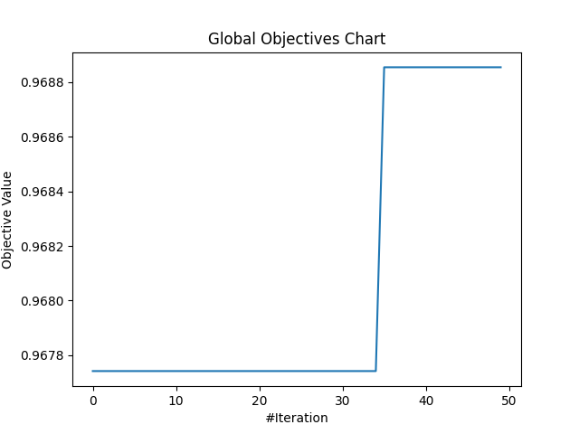
結語
今天向各位展示了使用MealPy來進行機器學習最佳化的應用，接著明後天會再向各位進行其他應用的範例，我會將之前介紹過的那些使用Optuna的部分直接改成使用MealPy，所以一些程式碼細節就不會再提起(主要是現在開學後真的沒什麼時間了QQ)，若各位有問題可以直接看看之前介紹的內容喔~
附錄：完整程式
from mealpy import FloatVar, Problem, SMA, StringVar
import numpy as np
import matplotlib.pyplot as plt
from sklearn import datasets, metrics, svm
from sklearn.model_selection import train_test_split
class Optimize_SVC(Problem):
def __init__(self, minmax, bounds=None, name="", **kwargs): # 可以根據需求自定義其他參數
self.name = name
# 設定其他參數，或者進行其他初始化
self.kernel = ["linear", "poly", "rbf", "sigmoid"]
self.init_data() # 初始化訓練資料
super().__init__(bounds, minmax, **kwargs)
def init_data(self):
# 載入訓練資料
digits = datasets.load_digits()
# 將二維圖片資料展開為一維度的向量
n_samples = len(digits.images)
data = digits.images.reshape((n_samples, -1)) # shape=(1797, 64)
# 把資料拆成一半訓練集一半測試集
self.X_train, self.X_test, self.y_train, self.y_test = train_test_split(data, digits.target, test_size=0.5, shuffle=False)
def plot_data(self,
img: np.ndarray,
target: np.ndarray,
title: str):
"""
將圖片、類別、圖表標題輸入並繪製出圖片資料的預覽圖片。
:param img: 輸入的圖片資料
:param target: 輸入的類別(真實類別或者預測類別)
:param title: 圖片的標題(訓練資料或者預測資料)
:return: None
"""
_, axes = plt.subplots(nrows=1, ncols=4, figsize=(10, 3))
for ax, image, label in zip(axes, img, target):
ax.set_axis_off()
image = image.reshape(8, 8)
ax.imshow(image, cmap=plt.cm.gray_r, interpolation="nearest")
ax.set_title(f"{title}: %i" % label)
def plot_confusion_matrix(self,
true_label: np.ndarray,
predict_label: np.ndarray):
"""
取得混淆矩陣中的資料，並將混淆矩陣圖繪製出來。
:param true_label: 真實的類別
:param predict_label: 預測的類別
:return: None
"""
disp = metrics.ConfusionMatrixDisplay.from_predictions(true_label, predict_label)
disp.figure_.suptitle("Confusion Matrix")
print(f"Confusion matrix:\n{disp.confusion_matrix}")
plt.show()
def print_classfication_report(self,
true_label: np.ndarray,
predict_label: np.ndarray):
"""
將混淆矩陣資料作為輸入，並進一步計算準確率作為回傳值。
:param true_label: 真實的類別
:param predict_label: 預測的類別
:return: 預測資料的準確率。
"""
# print("Classification report rebuilt from confusion matrix:\n"
# f"{metrics.classification_report(true_label, predict_label)}\n")
accuracy = metrics.accuracy_score(true_label, predict_label)
return accuracy
def obj_func(self, x):
gamma = x[0]
idx = int(x[1])
kernel = self.kernel[idx]
# 建立SVC模型
clf = svm.SVC(gamma=gamma, kernel=kernel)
# 訓練SVC模型
clf.fit(self.X_train, self.y_train)
# 用測試集來預測資料
predicted = clf.predict(self.X_test)
# 將測試資料與預測的類別畫出來
# self.plot_data(self.X_test, predicted, 'Prediction') #可以根據需求不使用或者更改
# 建立混淆矩陣並輸出圖片
# self.plot_confusion_matrix(self.y_test, predicted) #可以根據需求不使用或者更改
# 產生分類報告，包含每個類別各自預測的情況以及各項指標
acc = self.print_classfication_report(self.y_test, predicted)
return acc
if __name__ == '__main__':
# 新增最佳化試驗
# 設定問題，問題中的設定會作為初始化參數傳遞進去。
problem=Optimize_SVC(bounds=[FloatVar(lb=[0.0001], ub=[0.01]),
StringVar(valid_sets=("linear", "poly", "rbf", "sigmoid"))],
name="SVC_optimizer", minmax="max")
# 求解問題
optimizer = SMA.OriginalSMA(epoch=50, pop_size=80, pr=0.03)
optimizer.solve(problem=problem)
# 輸出歷史最佳解以及歷史最佳適應值
print(f"Best solution: {optimizer.g_best.solution}")
print(f"Best fitness: {optimizer.g_best.target.fitness}")
# 繪製收斂曲線
optimizer.history.save_global_objectives_chart(filename="result/global objectives chart")
[Day 26]打鐵趁熱！來試著MealPy的更多應用，最佳化MLP與CNN網路
- Day: 26
- Date: 2024-10-02 00:07:11
- Author: golucky_sir
- Source: https://ithelp.ithome.com.tw/articles/10361957
- Series: https://ithelp.ithome.com.tw/2020-12th-ironman/articles/7610
- Series Title: 調整AI超參數好煩躁？來試試看最佳化演算法吧！
前言
昨天介紹了使用MealPy進行機器學習模型超參數的最佳化，今天再來看看深度學習的部分吧。
一樣我們來針對多層感知器(MLP)與卷積神經網路(CNN)進行最佳化。
問題假設
今天的問題假設我們一樣使用MLP和CNN來進行MNIST的手寫數字辨識，並且設定目標是測試資料準確率超過97%，關於Keras模型建立與訓練的部分就不贅述了，各位可以從網路上找到非常多相關教學。
最佳化MLP
首先我們還是以MLP來當作第一個例子，使用MLP進行MNIST手寫數字的辨識目前網路上與Youtube都有非常多相關教學，各大深度學習套件官方網站也有相關資源，各位若還不熟悉深度學習模型的部分可以先去參考看看。若沒問題的話，接下來我會帶各位一步一步最佳化MLP模型。
MLP程式碼
老樣子，MLP程式主要分為資料前處理，模型建立，訓練模型，最後回傳測試資料集的準確率。為了使程式看起來比較完整，我會使用第19天底下附錄的程式碼進行修改，此程式會順便把CNN的部份給搞定，所以待會CNN的部分就會精簡許多。
以下程式碼單純只是提供給各位MLP訓練的範例，此程式的修該方式有在第19天介紹了，不過基本上就只是將定義的方法等再稍微整理一下而已！
from tensorflow.keras.datasets.mnist import load_data
from tensorflow.keras.models import Sequential
from tensorflow.keras.layers import Input, Conv2D, MaxPooling2D, Flatten, Dropout, Dense
from tensorflow.keras.utils import to_categorical
import numpy as np
def get_MLP_model(layer_num:int = 2,
first_layer_unit:int = 128):
"""
中間隱藏層數量建議設定在2~4層
第一層神經元數量為first_layer_unit / 2^0=128
第二層神經元數量為first_layer_unit / 2^1=64
以此類推，到第四層只剩16個神經元。
Args:
layer_num: 模型的中間隱藏層數
first_layer_unit: 第一層的神經元數量
Returns: keras的模型。
"""
model = Sequential()
model.add(Input(shape=(28, 28, 1)))
model.add(Flatten())
for i in range(layer_num):
model.add(Dense(int(first_layer_unit / 2**i), activation="relu"))
model.add(Dense(10, activation="softmax"))
# model.summary()
model.compile(loss="categorical_crossentropy", optimizer="adam", metrics=["accuracy"])
return model
def training_and_evaluating_model(model, X_train, y_train, X_test, y_test,
batch_size:int = 128,
epochs:int = 10):
"""
訓練模型並將測試資料集的準確率作為輸出。
Args:
batch_size: 每次訓練一批的資料量
epochs: 訓練次數
Returns: 測試資料集的準確率，作為適應值回傳。
"""
model.fit(X_train, y_train, batch_size=batch_size, epochs=epochs, validation_split=0.1)
score = model.evaluate(X_test, y_test, verbose=0)
return score[1]
if __name__ == '__main__':
(X_train, y_train), (X_test, y_test) = load_data()
# shape = (60000, 28, 28) 標準化圖片像素到0~1之間
X_train = X_train.astype("float32") / 255
X_test = X_test.astype("float32") / 255
# shape = (60000, 28, 28, 1) 加入通道維度
X_train = np.expand_dims(X_train, -1)
X_test = np.expand_dims(X_test, -1)
# 將類別進行one-hot轉換
y_train = to_categorical(y_train, 10)
y_test = to_categorical(y_test, 10)
# 取得模型
model = get_MLP_model(layer_num=3, first_layer_unit=64)
# 訓練模型
acc = training_and_evaluating_model(model, X_train, y_train, X_test, y_test, batch_size=64, epochs=5)
print(acc) # 0.9684000015258789
構思問題
我們的目標是希望能夠再將準確率提高一些(高於97%)，接著來稍微規劃一下接下來程式的大方向吧，這個表格基本上也跟我之前介紹Optuna實作的表格幾乎相同，若各位對Optuna也有興趣的話歡迎去看看我在這系列的第19天的文章喔。
| 5W1H | 規劃內容 |
|---|---|
| Why | 最佳化MLP模型，目標為準確率超過97% |
| What | 最佳化問題是手寫數字辨識的分類任務，以準確率作為適應值 |
| Who | 預計對MLP中的隱藏層數量、第一層隱藏層的神經元數量、訓練批次量、訓練次數進行最佳化 |
| Where | 隱藏層數量為2~4層、第一層神經元數量從[64, 128, 256, 512]中選擇，批次量從[32, 64, 128]中選擇，訓練次數為5~50次(次數為5的倍數) |
| When | 計算完測試資料準確率後進行最佳化 |
| How | 使用MealPy的黏菌最佳化演算法(Slime Mould Algorithm, SMA) |
實現MealPy最佳化
接下來來照著第22天提到的新SOP來建立最佳化試驗吧，有不理解的內容歡迎回去複習一下那天提到的東西喔。程式範例是使用上次第19天結尾的附錄程式碼，在今天我會帶各位稍微修改一下。
-
定義目標函數：首先要來創建這次的應用，我想將MLP跟CNN的最佳化都統整到一個類別中，使用者可以在設定問題時設定要使用MLP或者使用CNN，所以初始化方法中會設定
used_model提供使用者選擇要最佳化的模型。
首先先幫這個問題類別取名吧，記得類別要繼承自Problem喔：from mealpy import Problem class Optimize_DLModel(Problem):-
初始化方法：這裡可以看到我們使用
self.used_model來設定要最佳化的模型。
然後由於MealPy的一些缺陷，之後最佳化時演算法產生的解會是一個 整數(索引值) ，所以在設定選擇模型第一層的神經元數量時我們需要定義一個list來存放所有可能的值，之後再直接用索引值去取出特定的值。
此外我也將初始化資料的方式額外定義成一個方法init_data(self)可供調用，這樣程式碼分割較清楚會比較容易閱讀。def __init__(self, minmax, bounds=None, used_model=None, name="", **kwargs): # 可以根據需求自定義其他參數 self.name = name # 設定其他參數，或者進行其他初始化 self.used_model = used_model # 設定要最佳化的模型 self.MLP_first_layer_unit_lst = [64, 128, 256, 512] # MLP的第一隱藏層層數搜索空間串列 self.CNN_first_layer_unit_lst = [16, 32, 64, 128, 256] # CNN的第一隱藏層層數搜索空間串列 self.batch_size_lst = [32, 64, 128] # 訓練批次搜索空間串列 self.init_data() # 初始化訓練資料 super().__init__(bounds, minmax, **kwargs) def init_data(self): (X_train, y_train), (X_test, y_test) = load_data() # 標準化圖片像素到0~1之間，此時shape = (60000, 28, 28) X_train = X_train.astype("float32") / 255 X_test = X_test.astype("float32") / 255 # 加入通道維度，此時shape = (60000, 28, 28, 1) self.X_train = np.expand_dims(X_train, -1) self.X_test = np.expand_dims(X_test, -1) # 將類別進行one-hot轉換 self.y_train = to_categorical(y_train, 10) self.y_test = to_categorical(y_test, 10) -
定義目標函數中的計算：目標函數中會根據使用的模型名稱來決定要訓練哪個模型，基本上就是定義訓練方法，並在
obj_func(x)(這方法是繼承自Problem類別的，必須定義且名稱不可更改)方法中根據情況選擇呼叫特定方法即可，為了多一層保障順便寫一段程式拋出參數錯誤的例外。
也要定義MLP模型的訓練部分self.objective_MLP(x)。def obj_func(self, x): if self.used_model == 'mlp': return self.objective_MLP(x) elif self.used_model == 'cnn': return self.objective_CNN(x) else: raise ValueError('初始化參數used model必須為"mlp"或者"cnn"!') def objective_MLP(self, x): """ MLP 網路訓練的最佳化。 """ # MealPy因為就算設定搜索空間為IntegerVar輸入還會是浮點數資料，所以需要指定成整數資料。 # 為了使程式碼較簡單明瞭，這邊會將帶入解進行初步處理，使各位知道解中每個位置對應的意思! x = x.astype(int) layer_num = x[0] epochs = x[1] * 5 first_layer_unit = self.MLP_first_layer_unit_lst[x[2]] batch_size = self.batch_size_lst[x[3]] # 取得模型，這邊會把生成的解代入方法中並進行該次試驗的計算。 model = self.get_MLP_model(layer_num=layer_num, first_layer_unit=first_layer_unit) # 訓練模型，並回傳適應值。 acc = self.training_and_evaluating_model(model, batch_size=batch_size, epochs=epochs) # print(acc) return acc -
完善其他功能：這邊需要定義MLP模型的建立，一些相關的超參數設定要注意一下，之後演算法生成的解(超參數設定)會傳入這些方法中以定義該次試驗的模型，所以別忘了建立囉。
def get_MLP_model(self, layer_num: int = 2, first_layer_unit: int = 128): """ 中間隱藏層數量建議設定在2~4層 第一層神經元數量為first_layer_unit / 2^0=128 第二層神經元數量為first_layer_unit / 2^1=64 以此類推，到第四層只剩16個神經元。 Args: layer_num: 模型的中間隱藏層數 first_layer_unit: 第一層的神經元數量 Returns: keras的模型。 """ model = Sequential() model.add(Input(shape=(28, 28, 1))) model.add(Flatten()) for i in range(layer_num): model.add(Dense(int(first_layer_unit / 2 ** i), activation="relu")) model.add(Dense(10, activation="softmax")) # model.summary() model.compile(loss="categorical_crossentropy", optimizer="adam", metrics=["accuracy"]) return model -
定義回傳適應值：這邊一樣使用測試資料計算準確率並回傳適應值，MLP與CNN使用同一個方法。
def training_and_evaluating_model(self, model, batch_size: int = 128, epochs: int = 10): """ 訓練模型並將測試資料集的準確率作為輸出。 Args: batch_size: 每次訓練一批的資料量 epochs: 訓練次數 Returns: 測試資料集的準確率，作為適應值回傳。 """ model.fit(self.X_train, self.y_train, batch_size=batch_size, epochs=epochs, validation_split=0.1) score = model.evaluate(self.X_test, self.y_test, verbose=0) return score[1]
-
-
定義試驗：接著就來定義試驗吧，以下有一些注意事項也要留意一下。
-
選擇一個最佳化演算法：今天我們使用黏菌最佳化演算法(Slime Mould Algorithm, SMA)來尋找最佳解喔，首先設定一下最佳化的演算法。
# 求解問題，考慮到程式執行時間就先用10個epoch、5個pop_size就好了。 optimizer = SMA.OriginalSMA(epoch=10, pop_size=5, pr=0.03) -
設定要帶入目標函數的變數：接著來定義問題的搜索空間以及最佳化目標，基本上設定沒什麼變動，可以參考上面提到的表格，最佳化目標是尋找準確率的最大值。
這邊使用
MixedSetVar來定義指定集合的搜索空間，例如第一層的神經元數量與訓練批次。為了使程式比較明瞭所以我把所有超參數都分開定義，並指定了名稱name，這樣就可以一目瞭然這些參數的定義域以及意義。problem = Optimize_DLModel(bounds=[IntegerVar(lb=2, ub=4, name="layer_num"), # epochs搜索空間使用1~10並在程式內再乘以5等同於5~50，且公差為5的數列選擇。 IntegerVar(lb=1, ub=10, name="epochs"), MixedSetVar(valid_sets=(64, 128, 256, 512), name="first_layer_unit"), MixedSetVar(valid_sets=(32, 64, 128), name="batch_size")], used_model='mlp', name="MLP_optimizer", minmax="max") -
根據其他需求進行設定：今天也沒有設定其他東西，若有需要可以再自己新增。
-
-
執行試驗進行最佳化：接著就來進行最佳化吧。
optimizer.solve(problem=problem) -
後續處理與分析：這裡也是加上了輸出歷史最佳解以及歷史最佳適應值，以及繪製收斂曲線。
-
print最佳解：
print(f"Best solution: {optimizer.g_best.solution}") print(f"Best fitness: {optimizer.g_best.target.fitness}") -
產生視覺化圖表：
optimizer.history.save_global_objectives_chart(filename="result/global objectives chart")
-
-
分析最佳化結果：這次只跑10次迭代且每次只跑了5個粒子(
pop_size)，因迭代數少所以可能不會是最佳解，不過結果也還不錯，根據這些內容當中找到的最佳解為：1層隱藏神經層；訓練50個epochs；第一層隱藏層的神經元數量為256；訓練批次量為64。
這個設定訓練的測試資料的準確率有達到98.43%，有成功達成任務，好耶~
以下是收斂的曲線圖，可以看到就有慢慢提升XD正常發揮：

有時候可以用K-Fold Cross-Validation來更平均的統整模型的訓練情形，得到的結果會比較有統計上的意義。
因為只訓練一次的話隨機性較高，訓練多次再將結果取平均有時會是比較嚴謹的好作法，但缺點一樣是時間問題。
最佳化CNN
基本上最佳化CNN與MLP的流程完全相同，只有一點點部分要更改而已，完整流程都在上面提及到了，我會在底下附錄附上完整的程式碼，裡面也有CNN的部分。
各位可以根據上面的流程說明，以及底下的完整程式中CNN的部分來了解使用MealPy最佳化CNN喔，另外完整程式都附有註解說明，倘若還是不理解的話也可以在底下留言處詢問我。
結語
今天介紹了MealPy如何最佳化MLP的詳細說明，以及應用到CNN的範例程式。基本上無論是怎樣的類神經網路流程都大同小異，只要將最佳化模型類型以及超參數搜索空間等規劃好了之後再將之寫為程式就好了。
明後天一樣會來討論如何使用MealPy來最佳化生成對抗網路(Generative Adversarial Network, GAN)不過要考慮到群體粒子以及迭代數的話那勢必程式會執行非常久XD不管怎樣明天的事明天再說吧！
附錄：完整程式
from tensorflow.keras.datasets.mnist import load_data
from tensorflow.keras.models import Sequential
from tensorflow.keras.layers import Input, Conv2D, MaxPooling2D, Flatten, Dropout, Dense
from tensorflow.keras.utils import to_categorical
import numpy as np
from mealpy import FloatVar, Problem, SMA, StringVar, IntegerVar, MixedSetVar
import matplotlib.pyplot as plt
class Optimize_DLModel(Problem):
def __init__(self, minmax, bounds=None, used_model=None, name="", **kwargs): # 可以根據需求自定義其他參數
self.name = name
# 設定其他參數，或者進行其他初始化
self.used_model = used_model # 設定要最佳化的模型
self.MLP_first_layer_unit_lst = [64, 128, 256, 512] # MLP的第一隱藏層層數搜索空間串列
self.CNN_first_layer_unit_lst = [16, 32, 64, 128, 256] # CNN的第一隱藏層層數搜索空間串列
self.batch_size_lst = [32, 64, 128] # 訓練批次搜索空間串列
self.init_data() # 初始化訓練資料
super().__init__(bounds, minmax, **kwargs)
def init_data(self):
(X_train, y_train), (X_test, y_test) = load_data()
# 標準化圖片像素到0~1之間，此時shape = (60000, 28, 28)
X_train = X_train.astype("float32") / 255
X_test = X_test.astype("float32") / 255
# 加入通道維度，此時shape = (60000, 28, 28, 1)
self.X_train = np.expand_dims(X_train, -1)
self.X_test = np.expand_dims(X_test, -1)
# 將類別進行one-hot轉換
self.y_train = to_categorical(y_train, 10)
self.y_test = to_categorical(y_test, 10)
def get_CNN_model(self,
k: int = 3,
layer_num: int = 2,
first_layer_unit: int = 32):
"""
中間隱藏層數量建議設定在1~3層。
每次迴圈會使用MaxPooling2D
第一層MaxPooling2D會讓圖片長寬變(14, 14)
第二層MaxPooling2D會讓圖片長寬變(7, 7)
第三層MaxPooling2D會讓圖片長寬變(3, 3)
Args:
k: 卷積層中的卷積核大小
layer_num: 中間隱藏層數量，每層中包括一個卷積跟一層最大池化
first_layer_unit: 第一層網路的神經元數量
Returns: CNN 模型
"""
model = Sequential()
model.add(Input(shape=(28, 28, 1)))
for i in range(1, layer_num + 1):
model.add(Conv2D(first_layer_unit * i, kernel_size=(k, k), activation="relu", padding='same'))
model.add(MaxPooling2D(pool_size=(2, 2)))
model.add(Flatten())
model.add(Dropout(0.5))
model.add(Dense(10, activation="softmax"))
# model.summary()
model.compile(loss="categorical_crossentropy", optimizer="adam", metrics=["accuracy"])
return model
def get_MLP_model(self,
layer_num: int = 2,
first_layer_unit: int = 128):
"""
中間隱藏層數量建議設定在2~4層
第一層神經元數量為first_layer_unit / 2^0=128
第二層神經元數量為first_layer_unit / 2^1=64
以此類推，到第四層只剩16個神經元。
Args:
layer_num: 模型的中間隱藏層數
first_layer_unit: 第一層的神經元數量
Returns: keras的模型。
"""
model = Sequential()
model.add(Input(shape=(28, 28, 1)))
model.add(Flatten())
for i in range(layer_num):
model.add(Dense(int(first_layer_unit / 2 ** i), activation="relu"))
model.add(Dense(10, activation="softmax"))
# model.summary()
model.compile(loss="categorical_crossentropy", optimizer="adam", metrics=["accuracy"])
return model
def training_and_evaluating_model(self, model,
batch_size: int = 128,
epochs: int = 10):
"""
訓練模型並將測試資料集的準確率作為輸出。
Args:
batch_size: 每次訓練一批的資料量
epochs: 訓練次數
Returns: 測試資料集的準確率，作為適應值回傳。
"""
model.fit(self.X_train, self.y_train, batch_size=batch_size, epochs=epochs, validation_split=0.1)
score = model.evaluate(self.X_test, self.y_test, verbose=0)
return score[1]
def obj_func(self, x):
if self.used_model == 'mlp':
return self.objective_MLP(x)
elif self.used_model == 'cnn':
return self.objective_CNN(x)
else:
raise ValueError('初始化參數used model必須為"mlp"或者"cnn"!')
def objective_MLP(self, x):
"""
MLP 網路訓練的最佳化。
"""
# MealPy因為就算設定搜索空間為IntegerVar輸入還會是浮點數資料，所以需要指定成整數資料。
# 為了使程式碼較簡單明瞭，這邊會將帶入解進行初步處理，使各位知道解中每個位置對應的意思!
x = x.astype(int)
layer_num = x[0]
epochs = x[1] * 5
first_layer_unit = self.MLP_first_layer_unit_lst[x[2]]
batch_size = self.batch_size_lst[x[3]]
# 取得模型，這邊會把生成的解代入方法中並進行該次試驗的計算。
model = self.get_MLP_model(layer_num=layer_num, first_layer_unit=first_layer_unit)
# 訓練模型，並回傳適應值。
acc = self.training_and_evaluating_model(model, batch_size=batch_size, epochs=epochs)
# print(acc)
return acc
def objective_CNN(self, x):
"""
CNN 網路訓練的最佳化。
"""
# MealPy因為就算設定搜索空間為IntegerVar輸入還會是浮點數資料，所以需要指定成整數資料。
# 為了使程式碼較簡單明瞭，這邊會將帶入解進行初步處理，使各位知道解中每個位置對應的意思!
x = x.astype(int)
k = x[0]
layer_num = x[1]
epochs = x[2] * 5
first_layer_unit = self.CNN_first_layer_unit_lst[x[3]]
# 取得模型，這邊會把生成的解代入方法中並進行該次試驗的計算。
model = self.get_CNN_model(k=k, layer_num=layer_num, first_layer_unit=first_layer_unit)
# 訓練模型，並回傳適應值。
acc = self.training_and_evaluating_model(model, batch_size=128, epochs=epochs)
# print(acc)
return acc
if __name__ == '__main__':
# 新增最佳化試驗
# 設定問題，問題中的設定會作為初始化參數傳遞進去。
# 建立最佳化MLP問題
problem = Optimize_DLModel(bounds=[IntegerVar(lb=2, ub=4, name="layer_num"),
# epochs搜索空間使用1~10並在程式內再乘以5等同於5~50，且公差為5的數列選擇。
IntegerVar(lb=1, ub=10, name="epochs"),
MixedSetVar(valid_sets=(64, 128, 256, 512), name="first_layer_unit"),
MixedSetVar(valid_sets=(32, 64, 128), name="batch_size")],
used_model='mlp',
name="MLP_optimizer", minmax="max")
# 建立最佳化CNN問題
# problem = Optimize_DLModel(bounds=[IntegerVar(lb=2, ub=5, name="kernel size"),
# IntegerVar(lb=1, ub=3, name="kernel layer_num"),
# # epochs搜索空間使用1~10並在程式內再乘以5等同於5~50，且公差為5的數列選擇。
# IntegerVar(lb=1, ub=10, name="epochs"),
# MixedSetVar(valid_sets=(16, 32, 64, 128, 256), name="first_layer_unit")],
# used_model='cnn',
# name="CNN_optimizer", minmax="max")
# 求解問題，考慮到程式執行時間就先用10個epoch就好了。
optimizer = SMA.OriginalSMA(epoch=10, pop_size=5, pr=0.03)
optimizer.solve(problem=problem)
# 輸出歷史最佳解以及歷史最佳適應值
print(f"Best solution: {optimizer.g_best.solution}")
print(f"Best fitness: {optimizer.g_best.target.fitness}")
# 繪製收斂曲線
optimizer.history.save_global_objectives_chart(filename="result/global objectives chart")
[Day 27]MealPy的更多應用，最佳化生成對抗網路(GAN)(1/2)
- Day: 27
- Date: 2024-10-03 00:01:52
- Author: golucky_sir
- Source: https://ithelp.ithome.com.tw/articles/10362517
- Series: https://ithelp.ithome.com.tw/2020-12th-ironman/articles/7610
- Series Title: 調整AI超參數好煩躁？來試試看最佳化演算法吧！
前言
今天要來介紹一下如何使用MealPy再進行生成對抗網路的最佳化，前幾天我有先預防性的跑一次程式了XD，跑了非常非常久。接下來和之前一樣我將帶各位在原有DCGAN的基礎上再進階套用一層最佳化演算法~只是之前使用Optuna，這次使用MealPy。
今天的內容與第20天介紹的差不多，但是一樣是改成使用MealPy並使用第22天介紹的流程來開發程式。相信在經過了幾次實戰操作後各位應該都有得到要領了，也希望各位可以根據此基礎流程去延伸、改良成最適合自己開發步調的流程。
DCGAN程式碼
各位可以直接到我去年介紹的文章中，我有附上DCGAN完整程式碼(最底下附錄)，程式碼的詳細說明可以參考去年的文章。
今天會挑選部分程式來進行修改，底下也會附上完整修改過的程式碼喔。之前執行時有經過一些手動調整與最佳化，所以才能跑出比較能看的結果，今天就來嘗試進一步的最佳化GAN模型吧！
DCGAN的程式碼使用去年的程式碼並獨立分成一個檔案DCGAN.py，在主程式直接調用會讓程式碼比較簡潔，這段程式會附在最底下。
程式碼的完整訓練結果在去年文章我有詳細的說明喔！
構思問題
這次也是因篇幅所以不會新增太多其他的功能，儲存模型與訓練資料等部分在此就不過多敘述了，各位可以看看我去年的文章來理解這些部分的細節。
為了要正確執行結果並展示內容，以及要顧及到我電腦的效能，所以範例的一些內容會被簡化(例如DCGAN的訓練次數，以及最佳化演算法迭代數跟群數量)，基本上顧慮到節省效能所以模型訓練結果應該不會太好，所以在實務應用上請依據實際需求去更改，通常上述簡化的內容都要再增加許多。
| 5W1H | 規劃內容 |
|---|---|
| Why | 最佳化DCGAN模型，目標為適應值越高越好 |
| What | 最佳化問題是DCGAN的圖片生成，以PSNR與SSIM指標作為適應值 |
| Who | 預計對DCGAN中的生成器與判別器的學習率、第一層卷積網路的神經元數量、卷積層的卷積核大小以及判別器中LeakyReLU的斜率alpha進行最佳化 |
| Where | 學習率設定在0.00001~0.001、生成器第一層神經元數量從[32, 64, 128, 256]中搜尋；生成器第一層神經元數量從[64, 128, 256, 512]中搜尋、卷積層的卷積核大小為1~5、alpha設定0.01~0.5。 |
| When | 測試跑完一次程式後確定沒問題即可著手進行最佳化。 |
| How | 使用MealPy的黏菌最佳化演算法(Slime Mould Algorithm, SMA) |
實現MealPy最佳化
我們來根據之前介紹的流程，將程式逐步的撰寫出來，經過幾天的分享，如果都有再自己動手實作的話應該對這些流程也感到熟悉了吧！
基本上我們在去年將DCGAN.py的功能寫得蠻完整的了，接下來就只需要新增類別並調用方法、定義搜索空間等就好了！在第20天的文章中我也有使用Optuna來進行最佳化，流程上相差不了太多。
-
定義目標函數：首先需要新增自定義問題的類別，類別需要繼承
Problem，所以一開始的程式就是：
除此之外也可以順便import其他東西。from mealpy import Problem class Optimize_DCGAN(Problem):-
初始化方法：接著要來進行類別的初始化。
在上面的表格中有提到生成器與判別器的第一層神經元會從一個離散的串列搜索空間中取值出來使用，所以初始化我們需要額外定義這兩個部分(self.Generator_first_layer_unit_lst和self.Discriminator_first_layer_unit_lst)。def __init__(self, minmax, bounds=None, name="", **kwargs): # 可以根據需求自定義其他參數 self.name = name # 設定其他參數，或者進行其他初始化 self.Generator_first_layer_unit_lst = [32, 64, 128, 256] # 生成器的第一隱藏層層數搜索空間串列 self.Discriminator_first_layer_unit_lst = [64, 128, 256, 512] # 判別器的第一隱藏層層數搜索空間串列 super().__init__(bounds, minmax, **kwargs) -
定義目標函數中的計算：這裡就是直接定義目標函數的計算，我會將解進行初步的處理，並輸入至
DCGAN類別中進行初始化、訓練模型。
在這幾天跑程式時我又發現一項MealPy的小瑕疵，在使用IntegerVar(lb=x, ub=y)進行最佳化搜索時，實際的搜索空間會是從x-0.5到y+0.5，我個人表示很問號XD，明明就是整數資料的搜索了，為何取值範圍會是浮點數，而且輸出結果同樣也是浮點數資料型態。
所以當我設定卷積核(g_k和d_k)的大小時，我設定IntegerVar(lb=1, ub=5)，卻跳出錯誤說核大小不可為0，這才發現MealPy某次試驗取值取了0.5後轉為整數型態變成0，才導致錯誤發生，所以各位在使用時需要再注意一下這個小錯誤。
以下為這個部分的完整程式，有一些說明都於程式當中的註解中說明完畢：def obj_func(self, x): """ DCGAN 網路訓練的最佳化。 """ # 為了使程式碼可讀性提高所以我先初步處理輸入解 generator_lr = x[0] discriminator_lr = x[1] # 使用索引值從搜索空間中選出特定的元素，因為MealPy的一些缺陷導致輸出會被統一成浮點數型態 # 這缺陷實際上是因為帶入解釋numpy array格式，所以dtype會被統一成浮點數，導致後續需要自己再處理 g_first_layer_unit = self.Generator_first_layer_unit_lst[int(x[2])] d_first_layer_unit = self.Discriminator_first_layer_unit_lst[int(x[3])] g_k = int(x[4]) d_k = int(x[5]) alpha = x[6] # 將解帶入DCGAN類別中並進行訓練 gan = DCGAN(generator_lr=generator_lr, discriminator_lr=discriminator_lr, g_first_layer_unit=g_first_layer_unit, d_first_layer_unit=d_first_layer_unit, g_k=g_k, d_k=d_k, alpha=alpha) # 為了使訓練速度加快，所以訓練次數設定很低，原則上會訓練大約20000次。 gan.train(epochs=5000, batch_size=128) # 定義回傳適應值 fitness = gan.calculate_finess_value() del gan # 刪除掉gan這個類別，釋放一些記憶體空間。 return fitness -
完善其他功能：這部分各位可以根據需求去新增當訓練進行時或者完成後都生成一批的圖片來觀察訓練的結果情形。為了降低我電腦的負擔這部分就沒有新增，不過
DCGAN.py中都有相關的功能，去年介紹程式時也都有詳細說明程式，若有GAN實作上的問題歡迎再去看看我去年的系列文章。 -
定義回傳適應值：最後就是回傳適應值了，這部分去年並無實作，所以我是直接在DCGAN.py中新增這項功能，在主程式中回傳適應值時只需要呼叫方法就可以了。
以下是在DCGAN.py中定義的適應值計算的部分，各位可以看看註解的說明，以理解適應值設定的方式，設定並沒有絕對正確的方式，可以根據需求設定~# 在DCGAN.py中新增的方法 def calculate_finess_value(self): noise = np.random.normal(0, 1, (50, 100)) # 將資料格式統一成float32否則計算指標可能會出現錯誤 gen_imgs = self.generator.predict(noise).astype('float32') x_train = self.load_data()[:50].astype('float32') # PSNR越高越好，PSNR通常數值比較高，大約0~50左右 psnr = np.mean(tf.image.psnr(gen_imgs, x_train, max_val=1)) # SSIM越接近1越好，SSIM數值比較低，大約0~1左右，有時候會為比較小的負數 ssim = np.mean(tf.image.ssim(gen_imgs, x_train, max_val=1)) # 為了平衡將SSIM的結果*50再加上PSNR再除以2作為適應值回傳 return (psnr + 50*ssim)/2在主程式中因為訓練完成後為了節省記憶體空間所以我會將整個
DCGAN類別刪除，所以會額外使用一個變數儲存適應值並回傳，在主程式的呼叫如下(就是目標函數obj_func()中的最後部分)：# 定義回傳適應值 fitness = gan.calculate_finess_value() del gan # 刪除掉gan這個類別，釋放一些記憶體空間。 return fitness
-
-
定義試驗：接著就來定義試驗吧，以下有一些注意事項也要留意一下。
-
選擇一個最佳化演算法：今天我們使用黏菌最佳化演算法(Slime Mould Algorithm, SMA)來尋找最佳解喔，首先設定一下最佳化的演算法。
這個部份其實大家應該都熟悉了啦，這幾天的例子都使用這個演算法，也可以根據官方文檔的說明使用看看其他演算法來進行最佳化喔。另外為了節省程式執行的時間所以我epoch和pop_size的值都設定的很低，通常會建議值再設定的更高一些，尤其是epoch可以設定30次以上，但就要小心程式執行時間會非常久了。程式執行時間一長就會建議各位在一定時間過後進行儲存並備份結果，也可以設定提早結束的條件等都可以~
optimizer = SMA.OriginalSMA(epoch=10, pop_size=5, pr=0.03) -
設定要帶入目標函數的變數：接著來定義問題的搜索空間以及最佳化目標，基本上設定沒什麼變動，可以參考上面提到的表格，最佳化目標是尋找PSNR+SSIM混和的最大值。
這邊要注意一下剛剛提到的MealPy的IntegerVar的一些瑕疵，所以設定值上需要特別注意一下，其他為了使程式碼較清晰，所以我分開定義所有超參數的搜索空間並設定該參數的名稱，希望可以幫助各位理解程式碼。problem = Optimize_DCGAN(bounds=[FloatVar(lb=0.00001, ub=0.001, name="generator_lr"), FloatVar(lb=0.00001, ub=0.001, name="discriminator_lr"), MixedSetVar(valid_sets=(32, 64, 128, 256), name="g_first_layer_unit"), MixedSetVar(valid_sets=(64, 128, 256, 512), name="d_first_layer_unit"), # 設定整數的話會值範圍會為lb-0.5 ~ ub+0.5，這會導致錯誤發生。 IntegerVar(lb=2, ub=5, name='g_k'), IntegerVar(lb=2, ub=5, name='d_k'), FloatVar(lb=0.01, ub=0.5, name="alpha")], name="DCGAN_optimizer", minmax="max") -
根據其他需求進行設定：這部分也沒有其他的需求，跳過~
-
-
執行試驗進行最佳化：接下來就是進行試驗的最佳化了，也是老樣子使用一行程式就可以讓它動起來啦。
optimizer.solve(problem=problem) -
後續處理與分析：這裡我們也是讓程式輸出最佳解、最佳適應值跟繪製最佳化的收斂曲線
print最佳解：程式碼如下，方式跟前幾天介紹的都一樣。```python print(f"Best solution: {optimizer.g_best.solution}") print(f"Best fitness: {optimizer.g_best.target.fitness}") ```產生視覺化圖表：這部分也都是老樣子了，若各位有其他圖表想繪製的話，可以看看我在第23天的文章中介紹的視覺化圖表部分，如果想改為讓PSNR與SSIM變成兩個目標並觀察收斂方式的話也可以參考那天文章中介紹的做法喔。
```python optimizer.history.save_global_objectives_chart(filename="result/global objectives chart") ``` -
分析最佳化結果：這個部分就留到明天再討論吧！目前程式還在執行中，電腦整台都快燒起來了XD
結語
今天介紹了如何使用MealPy來進行DCGAN的最佳化方式。明天會來跟各位簡單的討論最佳化結果以及一些其他相關的東西。不過其他相關的這些東西好像在第21天就討論的差不多了，希望明天不會沒梗orz。
這次程式的DCGAN訓練次數又更短了，所以想當然而應該總成果應該並不會太好，不過具體如何還是要等明天程式跑完才知道囉。
附錄：完整程式(最佳化DCGAN)
import numpy as np
import optuna
import matplotlib.pyplot as plt
from DCGAN import DCGAN
from mealpy import FloatVar, Problem, SMA, IntegerVar, MixedSetVar
class Optimize_DCGAN(Problem):
def __init__(self, minmax, bounds=None, name="", **kwargs): # 可以根據需求自定義其他參數
self.name = name
# 設定其他參數，或者進行其他初始化
self.Generator_first_layer_unit_lst = [32, 64, 128, 256] # 生成器的第一隱藏層層數搜索空間串列
self.Discriminator_first_layer_unit_lst = [64, 128, 256, 512] # 判別器的第一隱藏層層數搜索空間串列
super().__init__(bounds, minmax, **kwargs)
def obj_func(self, x):
"""
DCGAN 網路訓練的最佳化。
"""
# 為了使程式碼可讀性提高所以我先初步處理輸入解
generator_lr = x[0]
discriminator_lr = x[1]
# 使用索引值從搜索空間中選出特定的元素，因為MealPy的一些缺陷導致輸出會被統一成浮點數型態
# 這缺陷實際上是因為帶入解釋numpy array格式，所以dtype會被統一成浮點數，導致後續需要自己再處理
g_first_layer_unit = self.Generator_first_layer_unit_lst[int(x[2])]
d_first_layer_unit = self.Discriminator_first_layer_unit_lst[int(x[3])]
g_k = int(x[4])
d_k = int(x[5])
alpha = x[6]
# 將解帶入DCGAN類別中並進行訓練
gan = DCGAN(generator_lr=generator_lr,
discriminator_lr=discriminator_lr,
g_first_layer_unit=g_first_layer_unit,
d_first_layer_unit=d_first_layer_unit,
g_k=g_k,
d_k=d_k,
alpha=alpha)
# 為了使訓練速度加快，所以訓練次數設定很低，原則上會訓練大約20000次。
gan.train(epochs=5000, batch_size=128)
# 定義回傳適應值
fitness = gan.calculate_finess_value()
del gan # 刪除掉gan這個類別，釋放一些記憶體空間。
return fitness
if __name__ == '__main__':
# 新增最佳化試驗
# 設定問題，問題中的設定會作為初始化參數傳遞進去。
# 建立最佳化DCGAN問題
problem = Optimize_DCGAN(bounds=[FloatVar(lb=0.00001, ub=0.001, name="generator_lr"),
FloatVar(lb=0.00001, ub=0.001, name="discriminator_lr"),
MixedSetVar(valid_sets=(32, 64, 128, 256), name="g_first_layer_unit"),
MixedSetVar(valid_sets=(64, 128, 256, 512), name="d_first_layer_unit"),
# 設定整數的話會值範圍會為lb-0.5 ~ ub+0.5，這會導致錯誤發生。
IntegerVar(lb=2, ub=5, name='g_k'),
IntegerVar(lb=2, ub=5, name='d_k'),
FloatVar(lb=0.01, ub=0.5, name="alpha")],
name="DCGAN_optimizer", minmax="max")
# 求解問題，考慮到程式執行時間就先用10個epoch就好了。
optimizer = SMA.OriginalSMA(epoch=10, pop_size=5, pr=0.03)
optimizer.solve(problem=problem)
# 輸出歷史最佳解以及歷史最佳適應值
print(f"Best solution: {optimizer.g_best.solution}")
print(f"Best fitness: {optimizer.g_best.target.fitness}")
# 繪製收斂曲線
optimizer.history.save_global_objectives_chart(filename="result/global objectives chart")
附錄：完整程式(DCGAN.py)
from tensorflow.keras.datasets import mnist
from tensorflow.keras.layers import Input, Dense, Reshape, Flatten, BatchNormalization, LeakyReLU, Activation, Conv2DTranspose, Conv2D
from tensorflow.keras.models import Model
from tensorflow.keras.optimizers import Adam
import numpy as np
import tensorflow as tf
class DCGAN():
def __init__(self,
generator_lr,
discriminator_lr,
g_first_layer_unit,
d_first_layer_unit,
g_k,
d_k,
alpha):
"""
定義DCGAN的基本功能，包括定義模型，訓練模型，回傳適應值等。
Args:
generator_lr: 生成器學習率
discriminator_lr: 判別器學習率
g_first_layer_unit: 生成器第一層隱藏層卷積層的神經元數量，後續網路神經元數量都為第一層神經元數量之倍數。
d_first_layer_unit: 判別器第一層隱藏層卷積層的神經元數量，後續網路神經元數量都為第一層神經元數量之倍數。
g_k: 生成器卷積核大小
d_k: 判別器卷積核大小
alpha: 判別器LeakyReLU之負數部分斜率。
"""
self.generator_lr = generator_lr
self.discriminator_lr = discriminator_lr
self.g_first_layer_unit = g_first_layer_unit
self.d_first_layer_unit = d_first_layer_unit
self.g_k = g_k
self.d_k = d_k
self.alpha = alpha
self.discriminator = self.build_discriminator()
self.generator = self.build_generator()
self.adversarial = self.build_adversarialmodel()
# Loss儲存在本範例不會用到，若有興趣可以自己實作後續損失分析等部分
self.gloss = []
self.dloss = []
def load_data(self):
(x_train, _), (_, _) = mnist.load_data() # 底線是未被用到的資料，可忽略
x_train = x_train / 255 # 正規化
x_train = x_train.reshape((-1, 28, 28, 1))
return x_train
def build_generator(self):
input_ = Input(shape=(100, ))
x = Dense(7*7*32)(input_)
x = Activation('relu')(x)
x = BatchNormalization(momentum=0.8)(x)
x = Reshape((7, 7, 32))(x)
# 設定第一層卷積網路的神經元數量以及卷積核大小
x = Conv2DTranspose(self.g_first_layer_unit, kernel_size=self.g_k, strides=2, padding='same')(x)
x = Activation('relu')(x)
x = BatchNormalization(momentum=0.8)(x)
# 設定第二層卷積網路的神經元數量，數量為第一層的2倍。以及卷積核大小
x = Conv2DTranspose(self.g_first_layer_unit*2, kernel_size=self.g_k, strides=2, padding='same')(x)
x = Activation('relu')(x)
x = BatchNormalization(momentum=0.8)(x)
out = Conv2DTranspose(1, kernel_size=self.g_k, strides=1, padding='same', activation='sigmoid')(x)
model = Model(inputs=input_, outputs=out, name='Generator')
model.summary()
return model
def build_discriminator(self):
input_ = Input(shape = (28, 28, 1))
# 設定第一層卷積網路的神經元數量以及卷積核大小
x = Conv2D(self.d_first_layer_unit, kernel_size=self.d_k, strides=2, padding='same')(input_)
x = LeakyReLU(alpha=self.alpha)(x) # 設定LeakyReLU的斜率
# 設定第二層卷積網路的神經元數量，數量為第一層的1/2倍，//為計算商數。以及卷積核大小
x = Conv2D(self.d_first_layer_unit//2, kernel_size=self.d_k, strides=2, padding='same')(x)
x = LeakyReLU(alpha=self.alpha)(x) # 設定LeakyReLU的斜率
# 設定第三層卷積網路的神經元數量，數量為第一層的1/4倍，//為計算商數。以及卷積核大小
x = Conv2D(self.d_first_layer_unit//4, kernel_size=self.d_k, strides=1, padding='same')(x)
x = LeakyReLU(alpha=self.alpha)(x) # 設定LeakyReLU的斜率
x = Flatten()(x)
out = Dense(1, activation='sigmoid')(x)
model = Model(inputs=input_, outputs=out, name='Discriminator')
dis_optimizer = Adam(learning_rate=self.discriminator_lr , beta_1=0.5)
model.compile(loss='binary_crossentropy',
optimizer=dis_optimizer,
metrics=['accuracy'])
model.summary()
return model
def build_adversarialmodel(self):
noise_input = Input(shape=(100, ))
generator_sample = self.generator(noise_input)
self.discriminator.trainable = False
out = self.discriminator(generator_sample)
model = Model(inputs=noise_input, outputs=out)
adv_optimizer = Adam(learning_rate=self.generator_lr, beta_1=0.5)
model.compile(loss='binary_crossentropy', optimizer=adv_optimizer)
model.summary()
return model
def train(self, epochs, batch_size=128):
# 準備訓練資料
x_train = self.load_data()
# 準備訓練的標籤，分為真實標籤與假標籤
valid = np.ones((batch_size, 1))
fake = np.zeros((batch_size, 1))
for epoch in range(epochs):
# 隨機取一批次的資料用來訓練
idx = np.random.randint(0, x_train.shape[0], batch_size)
imgs = x_train[idx]
# 從常態分佈中採樣一段雜訊
noise = np.random.normal(0, 1, (batch_size, 100))
# 生成一批假圖片
gen_imgs = self.generator.predict(noise)
# 判別器訓練判斷真假圖片
d_loss_real = self.discriminator.train_on_batch(imgs, valid)
d_loss_fake = self.discriminator.train_on_batch(gen_imgs, fake)
d_loss = 0.5 * np.add(d_loss_real, d_loss_fake)
#儲存鑑別器損失變化 索引值0為損失 索引值1為準確率
self.dloss.append(d_loss[0])
# 訓練生成器的生成能力
noise = np.random.normal(0, 1, (batch_size, 100))
g_loss = self.adversarial.train_on_batch(noise, valid)
# 儲存生成器損失變化
self.gloss.append(g_loss)
# 將這一步的訓練資訊print出來
print(f"Epoch:{epoch} [D loss: {d_loss[0]}, acc: {100 * d_loss[1]:.2f}] [G loss: {g_loss}]")
def calculate_finess_value(self):
noise = np.random.normal(0, 1, (50, 100))
# 將資料格式統一成float32否則計算指標可能會出現錯誤
gen_imgs = self.generator.predict(noise).astype('float32')
x_train = self.load_data()[:50].astype('float32')
# PSNR越高越好，PSNR通常數值比較高，大約0~50左右
psnr = np.mean(tf.image.psnr(gen_imgs, x_train, max_val=1))
# SSIM越接近1越好，SSIM數值比較低，大約0~1左右，有時候會為比較小的負數
ssim = np.mean(tf.image.ssim(gen_imgs, x_train, max_val=1))
# 為了平衡將SSIM的結果*50再加上PSNR再除以2作為適應值回傳
return (psnr + 50*ssim)/2
if __name__ == '__main__':
# 執行一次看看程式有沒有問題
gan = DCGAN(generator_lr=0.0002,discriminator_lr=0.0002, g_first_layer_unit=128,
d_first_layer_unit=128, g_k=2, d_k=2, alpha=0.2)
gan.train(epochs=20000, batch_size=128)
[Day 28]MealPy的更多應用，最佳化生成對抗網路(GAN)(2/2)
- Day: 28
- Date: 2024-10-04 00:02:07
- Author: golucky_sir
- Source: https://ithelp.ithome.com.tw/articles/10363068
- Series: https://ithelp.ithome.com.tw/2020-12th-ironman/articles/7610
- Series Title: 調整AI超參數好煩躁？來試試看最佳化演算法吧！
前言
昨天帶各位使用MaelPy來針對DCGAN進行超參數的最佳化並執行了程式，今天就來看看結果吧！
DCGAN最佳化結果
昨天的程式執行結果如下表所示：
| 超參數名稱 | 最佳超參數值 |
|---|---|
| 生成器學習率 | 2.95685686e-04 |
| 判別器學習率 | 3.80815357e-04 |
| 生成器第一層卷積層的神經元數量 | 32 |
| 判別器第一層卷積層的神經元數量 | 64 |
| 生成器卷積核大小 | 3 |
| 判別器卷積核大小 | 4 |
| 判別器LaekyReLU斜率 | 0.25 |
| 最佳適應值 | 8.435876443982124 |
另外以下是最佳化的收斂曲線：
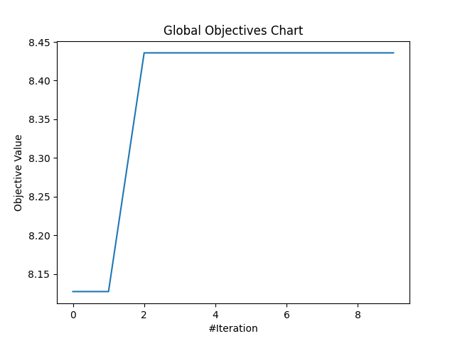
結果看起來和之前一樣還是差不多，其實並不優秀，不過大概有幾個原因，這部分就跟第21天文章介紹的相同，因為雖然更換了使用的模組與演算法，不過訓練結果的問題通常不會差太多，但使用啟發式演算法也有可能會有演算法參數設定的問題：
- 啟發式演算法參數設定問題：啟發式演算法通常也會需要進行初始化，並設定相關的超參數，不過為了再調整最佳化演算法的超參數再套最佳化的話就會變得像無限的俄羅斯娃娃一樣了，我覺得並非好主意。
另外有些研究會去尋找最佳的啟發式演算法超參數，但通常都是在 問題簡單，可以快速求解 的時候才比較有機會可以使用，像類神經網路的最佳化這種執行時間動不動就要一段時間的應用，其實再針對最佳化演算法的超參數再最佳化已經沒什麼意義了。 - 迭代次數不夠多：因為節省時間所以試驗迭代次數只設定10次而已，以及群數量只有5而已，原則上試驗次數再設定更多次或許會比較好。
- 訓練次數不足：本例在迭代時每次訓練只設定訓練5000次，原則上設定次數大概要15000次以上效果才會比較好，但是如果真的照這樣訓練的話，光程式連續執行就好幾天就過去了，電費哭哭。
之前找了一天用實驗室的電腦測試使用Optuna每次迭代時DCGAN訓練20000次，大概跑了170小時，在寫這段文字的前幾小時，Optuna才執行完程式。
所以為了節省時間本例暫時捨棄了追求最佳效果，若有需要的話可以設定完整一點再執行程式，通常跑個幾天都是正常的，所以在 事前規劃才需要做的完善 ，以免浪費了幾天的寶貴時間。 - 指標使用的不好：因為MNIST手寫資料集長寬只有28且是灰階的，所以輸入到FID等指標中使用的神經網路會導致出錯誤，所以才使用PSNR與SSIM。
但DCGAN生成結果是隨機的，所以就算生成圖片長得很像真實數字，與資料集中的結果相比還是容易產生較低的分數。例如生成可以辨識的「0」與資料集中的「7」相比還是會有比較低的PSNR值。 - GAN訓練不穩定：雖然只訓練8000次，但姑且還是有跑出最佳解，各位可以使用看看上述最佳解代入並進行完整的訓練看看程式執行的效果如何。
不過因為GAN的訓練不穩定，所以就算先以較少次數執行完最佳化並找出最佳訓練參數後，再帶入最佳解也可能因為後期訓練梯度消失或者梯度爆炸導致訓練失敗，所以在這部分需要注意一下！
在實務應用上，需要注意若不確定最佳化程式是否有問題可以先使用較低迭代次數，與較低訓練次數，先以時間消耗少的方式完整跑過程式，沒問題之後再使用完整的設定來執行程式。
其他可以應用最佳化的模組
在第9天我有介紹一些其他可以使用最佳化的模組，不過當時我漏掉了兩個，分別為以下的函式庫。這兩個都是機器學習與深度學習的大咖模組中提供的最佳化方式，在不了解其他演算法的情況下，只想趕快交差也可以使用看看這兩個函式庫來簡單的針對自己的模型進行最佳化。
- scikit-learn：sklearn提供了兩種方式來進行超參數的最佳化，分別為GridSearchCV與RandomizedSearchCV。前者是窮舉搜索，會考慮所有參數組合；後者為隨機從搜索空間中抽樣解並代入問題。
不過這兩種算法印象中並沒有最佳化的機制，單純只是窮舉跟隨積搜索而已。若各位對此有興趣可以來看看官方文檔對於GridSearchCV和RandomizedSearchCV。 - Keras Tuner：這是專用於Keras模型的超參數調整套件，這個套件也可以幫助各位自動找到最佳的參數組合，此套件有提供許多不同的最佳化方式，各位若有興趣也可以試試看，官方教學在此。
- MealPy Tuner：這是MealPy中提供的一個簡單的超參數調整工具，不過他並不能調整深度學習模型的超參數，目前只能調整MealPy中包含的啟發式演算法的超參數而已，若要針對這些演算法的參數進行調整的話，可以考慮使用看看MealPy內建的調整套件，官方教學在此。
目前也有許多人會使用Pytorch，不過我印象中Pytorch並沒有內建超參數最佳化的工具，若有需要使用的話可以參考我這系列前面的文章，使用Optuna或者MealPy來進行參數的最佳化。
結語
這次使用MealPy進行DCGAN的最佳化，啟發式演算法的差異就是除了迭代次數以外每次迭代都還需要完整跑完群體中所有成員的解，所以會造成程式執行的更久。不過通常這樣更廣泛的搜索最佳解時也會比較著重於尋找偏向全局最佳的地方，無論使用哪個模組，哪個演算法，基本上都還是有優缺點，所以就需要斟酌看看啦。
這次鐵人賽的程式介紹就到這邊為止，雖然還有許多可以提及的東西，不過30天一轉眼就即將結束了，最後兩天我會簡單的介紹最佳化演算法在AI模型的一些其他應用以及這次比賽的心得。接下來也要趕快去拯救我的課業了哈哈，希望未來還有時間跟機會可以整理我所學的程式技巧並向各位分享。
[Day 29]關於其他機器學習與深度學習的最佳化應用...
- Day: 29
- Date: 2024-10-05 00:06:04
- Author: golucky_sir
- Source: https://ithelp.ithome.com.tw/articles/10363595
- Series: https://ithelp.ithome.com.tw/2020-12th-ironman/articles/7610
- Series Title: 調整AI超參數好煩躁？來試試看最佳化演算法吧！
前言
我們花了約兩個禮拜來使用不同的套件Optuna以及MealPy來介紹各種模型的最佳化，例如機器學習中的SVC、MLP、CNN、GAN。不過篇幅有限所以還有很多很多很多應用無法詳細提及到，今天我想在系列文的尾端向各位討論分享一下目前最佳化在機器學習與深度學習的一些發展與應用。
各位有興趣可以去看看我這系列文的其他文章，相信應該會讓各位有一些收穫的。
其他深度學習應用
目前有一些研究都會在完成模型的測試之後再套用最佳化演算法，藉此進一步的提升模型的性能，或是開發的模型差一點就能打敗當前最強的模型，有時候就也會套用最佳化演算法。
在眾多深度學習的子領域中，有許多應用都會用到最佳化演算法，這些應用包含但不限於：
- 最佳化循環神經網路(Recurrent neural network, RNN)：與時間序列有關的任務通常會使用RNN、LSTM、GRU等，這些網路層也有許多超參數可以進行最佳化，有時也可以嘗試尋找最佳的序列長度之類的部分。
- 強化學習：強化學習中基本上也是一個最佳化過程，用於找出可以獲得最大回報的最佳策略，不過在強化學習中會根據不同的演算法有不同的參數，如果參數沒設定好，有時候偏差就會慢慢雪球越滾越大(本人研究甘苦談TT)。通常這時候我就都會再套用最佳化演算法去找最佳的學習方式。
- 自然語言處理：現在NLP以及以此為基礎的Transformer架構、GPT等架構，基本上應該也可以最佳化超參數，不過我覺得用下去之後那個學習時間會爆表XD
- 資料集特徵選擇：在我的一些研究中，常常會拿到超多資料，然後有一些資料又沒什麼用，這時候就會用最佳化演算法來挑選最佳的幾個資料特徵。通常我的作法是給每一個特徵一個分數(就是解，有五個特徵演算法就會生成五個解)，然後依照分數高低選出特定幾個特徵來訓練，看看使用那些特徵組合會讓訓練效果最好。
除此之外在不同領域，電腦視覺、智慧控制等領域都還是可以搭配最佳化演算法，所以這項技術就算是一個基石，能夠讓深度學習模型更上一層樓！
結語
今天向各位分享一些我有觀察到的模型最佳化的應用，各位如果在使用各種五花八門的模型中有期許性能能夠進一步提升的話，基本上都可以使用最佳化演算法，讓程式跑個幾天，讓子彈飛一會兒，相信時間到了子彈就會精準打在靶上了XD
明天將分享我這次比賽的心得，這次比賽應該是花費我最多精神、死最多腦細胞的一次了，希望我的這系列文章可以幫助到各位~
[Day 30]關於這次鐵人賽！總結與心得
- Day: 30
- Date: 2024-10-06 00:02:47
- Author: golucky_sir
- Source: https://ithelp.ithome.com.tw/articles/10364103
- Series: https://ithelp.ithome.com.tw/2020-12th-ironman/articles/7610
- Series Title: 調整AI超參數好煩躁？來試試看最佳化演算法吧！
前言
這幾天介紹了一些深度學習模型超參數最佳化的應用，以及一些關於最佳化的基本知識、測試函數等相關概念，我都認為挺有趣的，不知道有沒有滿足到各位的好奇心XD(現在大家的好奇心應該都在Chat-GPT等AI工具上了QQ)
不過其實目前這項技術看起來也還有很多發展的空間，不知道在未來會有甚麼有趣的發展。今天最後一天就來看看目前這項最佳化技術的一些發展方向和其他應用吧，若對各位的研究或者工作能提供一些方向就更好了。
心得
這次參加鐵人賽算是想要完成我在去年所許下的願望，因為在調整模型時我也常常使用這些最佳化的應用，比起手動調整到發瘋，我更希望藉由我分享的這些文章在幫助各位調整模型時能夠略盡棉薄之力。
目前最佳化模型的應用在網路上有一些相關資料，但並沒有很多，而且這次的主題是以往我比較少涉略的。所以在撰寫文章的時候確實感到比以往兩年的鐵人賽還要有更大的壓力，但還好還是有成功完賽。
結語
時間一轉眼就過去了，這30天的鐵人賽在文章撰寫的同時也在查閱資料，盡可能把我不太熟悉的觀念再補強，然後再分享給各位，希望各位也能從中更加熟悉最佳化在調整模型超參數的應用。
若各位對本系列文章有任何問題都歡迎於底下留言提問，若本系列文章內容有錯誤也請不吝指教了，這次鐵人賽的系列就到此結束。明年是否有要參加以及主題選擇目前還沒有想法，今年的事情變得非常多嗚嗚，差一點就沒時間寫文章了，希望明年不會忙碌到沒時間發文XD